Identification task qtqm – run 4 of 5
Generated: 2026-10-08 00:45 UTC
Finished by the agent after 42 turns, 1323 s of execution time and 2.19 USD. 5 models delivered, 5 evaluated.
1 Models
| Model | Fitted parameters | Training error of y | Validation error | Test error of y | |
|---|---|---|---|---|---|
| CubicPolynomial | 20 | 0.02333 | 0.03338 | 0.02177 | recommended by the agent lowest test error |
| RationalGain | 11 | 0.02654 | 0.03697 | 0.02526 | |
| PowerFeedback | 11 | 0.02374 | 0.03683 | 0.02228 | |
| ExponentialFeedback | 7 | 0.02387 | 0.03741 | 0.02237 | |
| SaturatingFeedback | 11 | 0.02375 | 0.03702 | 0.02279 |
The models are listed in the agent's order. Errors: root mean squared error between simulated and measured y. Training data: 1 trajectory of 1452 samples (1451 scored samples). Test data, which the agent cannot access: 1 trajectory of 1210 samples (1209 scored samples). A simulation error grows with the length of the trajectory, and the training and the test trajectories differ in length, so the two errors are not directly comparable. The agent recommends a model from the training data. The model with the lowest test error is found with the test data, in hindsight, among the 5 models of this run; the agent could not make this choice.
n1 = 70 x1-unit (fixed), n2 = 20 x2-unit (fixed), yc = 1.3 state-unit (fixed), ys = 0.3 state-unit (fixed), c0 = -0.1508 state-unit/s (fitted), c1 = -0.1442 state-unit/s (fitted), c2 = 0.2549 state-unit/s (fitted), c3 = 0.1186 state-unit/s (fitted), c4 = -0.02 state-unit/s (fitted), c5 = 0.1734 state-unit/s (fitted), c6 = 0.08739 state-unit/s (fitted), c7 = -0.1842 state-unit/s (fitted), c8 = -0.1815 state-unit/s (fitted), c9 = -0.02527 state-unit/s (fitted), c10 = -0.003633 state-unit/s (fitted), c11 = 0.01727 state-unit/s (fitted), c12 = 0.01225 state-unit/s (fitted), c13 = -0.04668 state-unit/s (fitted), c14 = -0.07363 state-unit/s (fitted), c15 = -0.01349 state-unit/s (fitted), c16 = 0.05779 state-unit/s (fitted), c17 = 0.07833 state-unit/s (fitted), c18 = 0.02629 state-unit/s (fitted), c19 = 0.003153 state-unit/s (fitted)y: 0.02333 · validation error: 0.03338 · test error: 0.02177Equations as written in the model file
dy = c0*1 + c1*((y-yc)/ys) + c2*(x1/n1) + c3*(x2/n2) + c4*((y-yc)/ys)**2 + c5*((y-yc)/ys)*(x1/n1) + c6*((y-yc)/ys)*(x2/n2) + c7*(x1/n1)**2 + c8*(x1/n1)*(x2/n2) + c9*(x2/n2)**2 + c10*((y-yc)/ys)**3 + c11*((y-yc)/ys)**2*(x1/n1) + c12*((y-yc)/ys)**2*(x2/n2) + c13*((y-yc)/ys)*(x1/n1)**2 + c14*((y-yc)/ys)*(x1/n1)*(x2/n2) + c15*((y-yc)/ys)*(x2/n2)**2 + c16*(x1/n1)**3 + c17*(x1/n1)**2*(x2/n2) + c18*(x1/n1)*(x2/n2)**2 + c19*(x2/n2)**3
Equations with the values substituted
Every parameter is replaced by its value with 4 significant digits.
Parameters and estimation
| Name | Value | Unit | Type | Description |
|---|---|---|---|---|
n1 | 70 | x1-unit | fixed | Convenient input normalization, selected by inspection of the training input scale, not optimized; gives dimensionless . |
n2 | 20 | x2-unit | fixed | Convenient input normalization selected by inspection of the training input scale, not optimized; gives dimensionless . |
yc | 1.3 | state-unit | fixed | Convenient state center near the training mean, selected rather than optimized. |
ys | 0.3 | state-unit | fixed | Convenient state scaling of the order of the training standard deviation, selected rather than optimized; is dimensionless. |
c0 | -0.150764 | state-unit/s | fitted | Coefficient multiplying 1; estimated jointly by the sequence described in estimation. |
c1 | -0.144161 | state-unit/s | fitted | Coefficient multiplying ; estimated jointly by the sequence described in estimation. |
c2 | 0.254854 | state-unit/s | fitted | Coefficient multiplying ; estimated jointly by the sequence described in estimation. |
c3 | 0.11863 | state-unit/s | fitted | Coefficient multiplying ; estimated jointly by the sequence described in estimation. |
c4 | -0.0199986 | state-unit/s | fitted | Coefficient multiplying ; estimated jointly by the sequence described in estimation. |
c5 | 0.173379 | state-unit/s | fitted | Coefficient multiplying ; estimated jointly by the sequence described in estimation. |
c6 | 0.0873891 | state-unit/s | fitted | Coefficient multiplying ; estimated jointly by the sequence described in estimation. |
c7 | -0.184164 | state-unit/s | fitted | Coefficient multiplying ; estimated jointly by the sequence described in estimation. |
c8 | -0.181503 | state-unit/s | fitted | Coefficient multiplying ; estimated jointly by the sequence described in estimation. |
c9 | -0.0252683 | state-unit/s | fitted | Coefficient multiplying ; estimated jointly by the sequence described in estimation. |
c10 | -0.00363254 | state-unit/s | fitted | Coefficient multiplying ; estimated jointly by the sequence described in estimation. |
c11 | 0.0172736 | state-unit/s | fitted | Coefficient multiplying ; estimated jointly by the sequence described in estimation. |
c12 | 0.0122526 | state-unit/s | fitted | Coefficient multiplying ; estimated jointly by the sequence described in estimation. |
c13 | -0.0466844 | state-unit/s | fitted | Coefficient multiplying ; estimated jointly by the sequence described in estimation. |
c14 | -0.0736278 | state-unit/s | fitted | Coefficient multiplying ; estimated jointly by the sequence described in estimation. |
c15 | -0.0134926 | state-unit/s | fitted | Coefficient multiplying ; estimated jointly by the sequence described in estimation. |
c16 | 0.0577862 | state-unit/s | fitted | Coefficient multiplying ; estimated jointly by the sequence described in estimation. |
c17 | 0.078329 | state-unit/s | fitted | Coefficient multiplying ; estimated jointly by the sequence described in estimation. |
c18 | 0.0262874 | state-unit/s | fitted | Coefficient multiplying ; estimated jointly by the sequence described in estimation. |
c19 | 0.00315307 | state-unit/s | fitted | Coefficient multiplying ; estimated jointly by the sequence described in estimation. |
- Criterion minimized
Final criterion: sum of squared free-running errors in
yon both available trajectories, excluding only the first state of each file, to match the evaluation criterion. Initial derivative least squares and then teacher-forced one-step RK4 output least squares supplied starting values; those criteria do not define the final estimates.- Data
Both complete files data/train.csv (one stated trajectory) and data/val.csv (one stated trajectory) were used in the final fit. Training-only fits were compared on validation first. During final fitting each file was initialized only at its first observed state, with no later state resets; all subsequent observations contributed equal output-error weight. Sampling period was 5 s, with current-row inputs held constant during each classical RK4 step. Validation was subsequently used for fitting, so final validation errors are in-sample and are not unbiased generalization estimates.
- Method
Derivative initialization: numpy.linalg.lstsq on all training rows, no starting values needed because this stage is linear. All coefficients then jointly minimized teacher-forced one-step RK4 error on training, followed by full training simulation error, using The optimizer is scipy.optimize.least_squares, default Trust Region Reflective algorithm, finite-difference two-point Jacobian and linear loss; its official documentation was checked online. Nonlinear least squares was used because RK4 output error is nonlinear even in coefficients of a polynomial vector field. Training stages used max_nfev 100 and 180 respectively, with convergence tolerances 1e-10 and 1e-9. Final all-data fit used max_nfev 180 and all tolerances 1e-10. Its numeric starting coefficient vector in parameter order was [-0.1380402311666695, -0.12283409583570994, 0.19948462139231352, 0.049515158684787036, -0.001836750536420535, 0.13292934453610905, 0.04026478059851581, -0.13085215661509592, -0.08794885307315396, 0.03596938209608105, -0.001125636895225037, 0.0049276072495853035, 0.00110501003859932, -0.02680379667646467, -0.047744899803438094, 0.00672130203007667, 0.045917509562552895, 0.03898354676399199, -0.0026217148453892215, -0.012814247416346493] state-unit/s. The all-data fit is reproduced by final_refit.py using those stored training-only initial values; fit_dynamic.py reproduces earlier training stages. No randomized initialization or seed was used.
- Script
final_refit.py
The agent's explanation
Continuous-time cubic polynomial state-space vector field. Reference for polynomial right-hand-side libraries: Brunton, Proctor and Kutz, Discovering governing equations from data by sparse identification of nonlinear dynamical systems, arXiv:1509.03580 (2015), related journal DOI 10.1073/pnas.1517384113 (title, authors and DOI checked on the official arXiv abstract page). This run used dense ordinary least squares and manually restricted structures, not the SINDy sparse algorithm.
y is the state, x1 and x2 are inputs and dy is its time derivative. The constant is drift; state-only terms provide nonlinear restoring or amplifying effects, input-only terms provide nonlinear forcing, and mixed products alter the state dependence with the inputs. Every monomial and its coefficient are explicitly listed in parameters; no physical role is asserted.
An affine baseline was inadequate. Complete total-degree polynomial libraries of degrees one through five were screened by derivative error and free-running validation. Cubic provided a good tradeoff: higher degrees did not improve validation consistently and sometimes caused divergent simulation. All terms up to total degree three were retained as a transparent generic interaction library, rather than selecting many highly correlated individual terms.
No system description or units are supplied, so these are empirical vector fields rather than asserted physical laws. Unit labels state-unit, x1-unit and x2-unit denote unknown logged units; only seconds are known. The fitted domain is approximately state-unit, x1-unit, and x2-unit on the two supplied files. Polynomial derivative residuals have temporal dependence and correlate with the next change in x2; this suggests sampling alignment or omitted dynamics, but is not proof of a particular mechanism. Abrupt near-baseline states midway through the files are not reset in fitting or prediction. No memory, next input, or hidden state is included in the delivered expressions; the irreducible consequences of these omissions remain. Extrapolation and input regimes not represented here are unvalidated. Cubic terms can behave very differently outside the fitted box; stability is not guaranteed by the fit.
Plots of simulated and measured y, and errors per trajectory
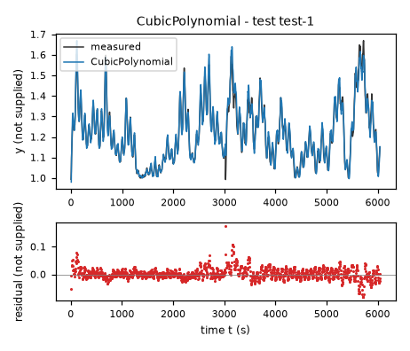
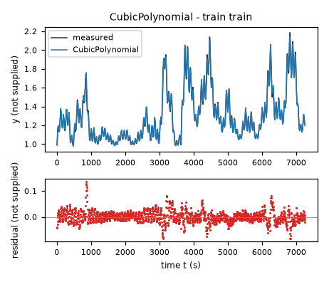
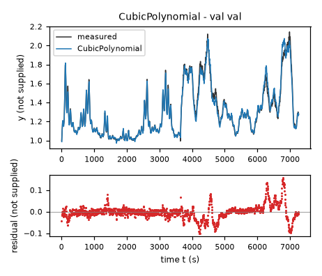
| Data | Trajectory | Scored samples | RMSE | NRMSE | R² | Failure |
|---|---|---|---|---|---|---|
| training data | train | 1451 of 1451 | 0.02333 | 0.08945 | 0.992 | none |
| validation data | val | 1453 of 1453 | 0.03338 | 0.1271 | 0.9838 | none |
| test data | test-1 | 1209 of 1209 | 0.02177 | 0.1562 | 0.9756 | none |
RMSE of y; NRMSE = RMSE / σ and R² = 1 − SSE / Σ(y[k] − μ)², with μ and σ the mean and the population standard deviation of the measured output on the scored samples.
n1 = 70 x1-unit (fixed), n2 = 20 x2-unit (fixed), yc = 1.3 state-unit (fixed), ys = 0.3 state-unit (fixed), c0 = -0.08099 state-unit/s (fitted), c1 = -0.07933 state-unit/s (fitted), c2 = 0.04175 state-unit/s (fitted), c3 = 0.02595 state-unit/s (fitted), c4 = -0.0002448 state-unit/s (fitted), c5 = 0.05604 state-unit/s (fitted), c6 = 0.006463 state-unit/s (fitted), c7 = 0.01387 state-unit/s (fitted), c8 = -0.005895 state-unit/s (fitted), c9 = 0.003287 state-unit/s (fitted), d = 0.2118 (fitted)y: 0.02654 · validation error: 0.03697 · test error: 0.02526Equations as written in the model file
dy = (c0*1 + c1*((y-yc)/ys) + c2*(x1/n1) + c3*(x2/n2) + c4*((y-yc)/ys)**2 + c5*((y-yc)/ys)*(x1/n1) + c6*((y-yc)/ys)*(x2/n2) + c7*(x1/n1)**2 + c8*(x1/n1)*(x2/n2) + c9*(x2/n2)**2)/(1+d*((y-yc)/ys)**2)
Equations with the values substituted
Every parameter is replaced by its value with 4 significant digits.
Parameters and estimation
| Name | Value | Unit | Type | Description |
|---|---|---|---|---|
n1 | 70 | x1-unit | fixed | Convenient input normalization, selected by inspection of the training input scale, not optimized; gives dimensionless . |
n2 | 20 | x2-unit | fixed | Convenient input normalization selected by inspection of the training input scale, not optimized; gives dimensionless . |
yc | 1.3 | state-unit | fixed | Convenient state center near the training mean, selected rather than optimized. |
ys | 0.3 | state-unit | fixed | Convenient state scaling of the order of the training standard deviation, selected rather than optimized; is dimensionless. |
c0 | -0.0809863 | state-unit/s | fitted | Coefficient multiplying 1 in the numerator; fitted jointly. |
c1 | -0.0793328 | state-unit/s | fitted | Coefficient multiplying in the numerator; fitted jointly. |
c2 | 0.0417535 | state-unit/s | fitted | Coefficient multiplying in the numerator; fitted jointly. |
c3 | 0.0259501 | state-unit/s | fitted | Coefficient multiplying in the numerator; fitted jointly. |
c4 | -0.000244849 | state-unit/s | fitted | Coefficient multiplying in the numerator; fitted jointly. |
c5 | 0.0560399 | state-unit/s | fitted | Coefficient multiplying in the numerator; fitted jointly. |
c6 | 0.00646283 | state-unit/s | fitted | Coefficient multiplying in the numerator; fitted jointly. |
c7 | 0.0138663 | state-unit/s | fitted | Coefficient multiplying in the numerator; fitted jointly. |
c8 | -0.00589485 | state-unit/s | fitted | Coefficient multiplying in the numerator; fitted jointly. |
c9 | 0.00328727 | state-unit/s | fitted | Coefficient multiplying in the numerator; fitted jointly. |
d | 0.211774 | - | fitted | Nonnegative state-dependent denominator coefficient; reduces vector-field magnitude away from the state center. |
- Criterion minimized
Final criterion: sum of squared free-running errors in
yon both available trajectories, excluding only the first state of each file, to match the evaluation criterion. Initial derivative least squares and then teacher-forced one-step RK4 output least squares supplied starting values; those criteria do not define the final estimates.- Data
Both complete files data/train.csv (one stated trajectory) and data/val.csv (one stated trajectory) were used in the final fit. Training-only fits were compared on validation first. During final fitting each file was initialized only at its first observed state, with no later state resets; all subsequent observations contributed equal output-error weight. Sampling period was 5 s, with current-row inputs held constant during each classical RK4 step. Validation was subsequently used for fitting, so final validation errors are in-sample and are not unbiased generalization estimates.
- Method
All parameters were estimated jointly at every stage. Initial derivative fit on all training rows used The optimizer is scipy.optimize.least_squares, default Trust Region Reflective algorithm, finite-difference two-point Jacobian and linear loss; its official documentation was checked online. Nonlinear least squares was used because RK4 output error is nonlinear even in coefficients of a polynomial vector field. Numeric initialization in the expression parameter order was [-0.04503588818729872, -0.04887501702429064, 0.007852815502762543, 0.00980568087977346, 0.0006935285585282121, 0.03262516081052409, 0.0030336894961114046, 0.019244050652148258, 0.0028685591245625162, 0.0038224409603234907, 0.1]; units are those of the corresponding parameter rows. This seed came from the previously fitted helper model or polynomial model, except exponential and sigmoid seeds, which were moderate hand-chosen coefficients and scale parameters. Numeric derivative-stage output was [-0.05493024461290589, -0.05704383818435389, 0.019708256360133253, 0.014388401799165373, 0.00021826093837737847, 0.03909033570228784, 0.004303844141804768, 0.01612362687838267, -0.00038244615096589673, 0.003516688156691717, 0.04470014588215461] and numeric one-step-stage output was [-0.060630302216419005, -0.06284510305511261, 0.02154029589471787, 0.015497571334930663, 0.0003304888208860159, 0.043410012352433434, 0.004185974176415896, 0.017950502711278852, -0.00021538842963941132, 0.004010391631537828, 0.061010807962467654]. These numbers are in the corresponding parameter units. They document actual starts, not extra constants in the model. Bounds in the same order were [-2, -2, -2, -2, -2, -2, -2, -2, -2, -2, 0] to [2, 2, 2, 2, 2, 2, 2, 2, 2, 2, 10], in the corresponding parameter units; these prevent extreme coefficients and invalid powers while permitting broad empirical nonlinear shapes. Max_nfev was 300 for derivative initialization, 180 for one-step training fit, and 200 for free-running fit; default convergence tolerances were 1e-8. The final fit on both files started directly from the documented one-step values, not from the training-only output-error fit. A separate training-only free-running fit was used for validation comparison. No random numbers or seed were used. nonlinear_dynamic.py reproduces the sequence and retains the exact original initialization vectors in its referenced working-directory result files.
- Script
nonlinear_dynamic.py
The agent's explanation
Rational nonlinear state-space vector field with a polynomial numerator and a positive quadratic denominator. The polynomial-library context is Reference for polynomial right-hand-side libraries: Brunton, Proctor and Kutz, Discovering governing equations from data by sparse identification of nonlinear dynamical systems, arXiv:1509.03580 (2015), related journal DOI 10.1073/pnas.1517384113 (title, authors and DOI checked on the official arXiv abstract page). This run used dense ordinary least squares and manually restricted structures, not the SINDy sparse algorithm.
Numerator monomials represent drift, nonlinear state feedback, nonlinear input forcing and mixed interactions. The positive term attenuates all these terms as the state departs from the center; d is dimensionless and constrained nonnegative. This is an empirical state-dependent time scale, not an identified storage law.
Added a state-dependent denominator after quadratic polynomial fits left state-dependent residual patterns. A denominator of was selected to avoid singularities while allowing state-dependent gain. Its numerator is the complete quadratic library, not an inferred physical equation.
No system description or units are supplied, so these are empirical vector fields rather than asserted physical laws. Unit labels state-unit, x1-unit and x2-unit denote unknown logged units; only seconds are known. The fitted domain is approximately state-unit, x1-unit, and x2-unit on the two supplied files. Polynomial derivative residuals have temporal dependence and correlate with the next change in x2; this suggests sampling alignment or omitted dynamics, but is not proof of a particular mechanism. Abrupt near-baseline states midway through the files are not reset in fitting or prediction. No memory, next input, or hidden state is included in the delivered expressions; the irreducible consequences of these omissions remain. Extrapolation and input regimes not represented here are unvalidated. Denominator positivity prevents poles but does not enforce dissipativity or extrapolation accuracy.
Plots of simulated and measured y, and errors per trajectory
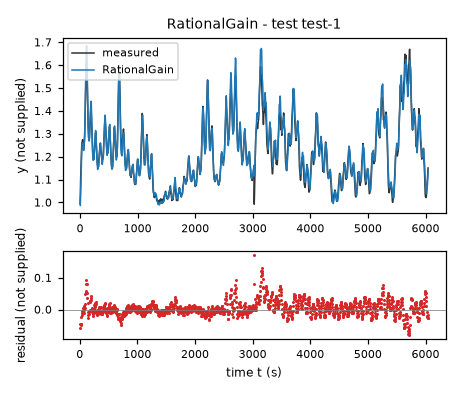
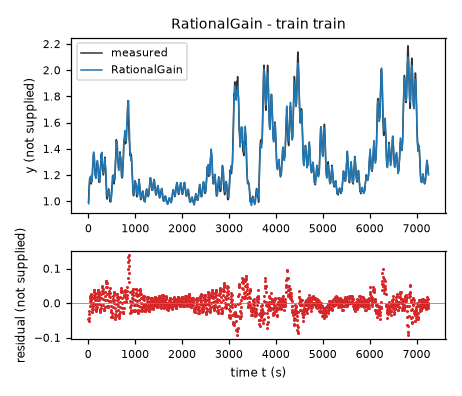
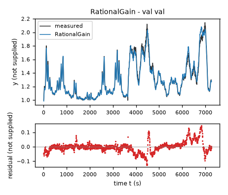
| Data | Trajectory | Scored samples | RMSE | NRMSE | R² | Failure |
|---|---|---|---|---|---|---|
| training data | train | 1451 of 1451 | 0.02654 | 0.1018 | 0.9896 | none |
| validation data | val | 1453 of 1453 | 0.03697 | 0.1408 | 0.9802 | none |
| test data | test-1 | 1209 of 1209 | 0.02526 | 0.1812 | 0.9672 | none |
RMSE of y; NRMSE = RMSE / σ and R² = 1 − SSE / Σ(y[k] − μ)², with μ and σ the mean and the population standard deviation of the measured output on the scored samples.
n1 = 70 x1-unit (fixed), n2 = 20 x2-unit (fixed), c0 = 0.009194 state-unit/s (fitted), c1 = -0.09347 state-unit**(1-b)/s (fitted), c2 = -0.001691 state-unit/s (fitted), c3 = 0.02972 state-unit/s (fitted), c4 = 0.03685 state-unit**(1-b)/s (fitted), c5 = -0.004248 state-unit**(1-b)/s (fitted), h = 0.994 state-unit (fitted), b = 0.3712 (fitted), a = 2.617 (fitted), d = 1.019e-06 (fitted), e = 0.9265 (fitted), epsy = 1e-06 state-unit (fixed), epsu = 1e-06 (fixed)y: 0.02374 · validation error: 0.03683 · test error: 0.02228Equations as written in the model file
dy = c0 + c1*(Max(y-h,epsy)**b) + c2*(Max(x1/n1,epsu)**a*Max(x2/n2,epsu)**d) + c3*(Max(x2/n2,epsu)**e) + c4*(Max(x1/n1,epsu)**a*Max(x2/n2,epsu)**d)*(Max(y-h,epsy)**b) + c5*(Max(x2/n2,epsu)**e)*(Max(y-h,epsy)**b)
Equations with the values substituted
Every parameter is replaced by its value with 4 significant digits.
Parameters and estimation
| Name | Value | Unit | Type | Description |
|---|---|---|---|---|
n1 | 70 | x1-unit | fixed | Convenient input normalization, selected by inspection of the training input scale, not optimized; gives dimensionless . |
n2 | 20 | x2-unit | fixed | Convenient input normalization selected by inspection of the training input scale, not optimized; gives dimensionless . |
c0 | 0.0091943 | state-unit/s | fitted | Coefficient of the corresponding ordered term in dy; jointly fitted, not a separately measured flow. |
c1 | -0.0934663 | state-unit**(1-b)/s | fitted | Coefficient of the corresponding ordered term in dy; jointly fitted, not a separately measured flow. |
c2 | -0.00169145 | state-unit/s | fitted | Coefficient of the corresponding ordered term in dy; jointly fitted, not a separately measured flow. |
c3 | 0.0297173 | state-unit/s | fitted | Coefficient of the corresponding ordered term in dy; jointly fitted, not a separately measured flow. |
c4 | 0.03685 | state-unit**(1-b)/s | fitted | Coefficient of the corresponding ordered term in dy; jointly fitted, not a separately measured flow. |
c5 | -0.00424824 | state-unit**(1-b)/s | fitted | Coefficient of the corresponding ordered term in dy; jointly fitted, not a separately measured flow. |
h | 0.994 | state-unit | fitted | Fitted shift of the state-power argument. |
b | 0.371215 | - | fitted | Exponent in . |
a | 2.61695 | - | fitted | Exponent of normalized first input. |
d | 1.01945e-06 | - | fitted | Exponent of normalized second input in the input product. |
e | 0.926469 | - | fitted | Exponent of the separate second-input forcing. |
epsy | 1e-06 | state-unit | fixed | Small positive floor selected for the shifted state before fractional powers or square roots; ensures real finite evaluation near and below the offset, not inferred as a physical threshold. |
epsu | 1e-06 | - | fixed | Small dimensionless floor chosen for normalized input powers so evaluation is defined for zero or negative inputs; not a fitted physical cutoff. |
- Criterion minimized
Final criterion: sum of squared free-running errors in
yon both available trajectories, excluding only the first state of each file, to match the evaluation criterion. Initial derivative least squares and then teacher-forced one-step RK4 output least squares supplied starting values; those criteria do not define the final estimates.- Data
Both complete files data/train.csv (one stated trajectory) and data/val.csv (one stated trajectory) were used in the final fit. Training-only fits were compared on validation first. During final fitting each file was initialized only at its first observed state, with no later state resets; all subsequent observations contributed equal output-error weight. Sampling period was 5 s, with current-row inputs held constant during each classical RK4 step. Validation was subsequently used for fitting, so final validation errors are in-sample and are not unbiased generalization estimates.
- Method
All parameters were estimated jointly at every stage. Initial derivative fit on all training rows used The optimizer is scipy.optimize.least_squares, default Trust Region Reflective algorithm, finite-difference two-point Jacobian and linear loss; its official documentation was checked online. Nonlinear least squares was used because RK4 output error is nonlinear even in coefficients of a polynomial vector field. Numeric initialization in the expression parameter order was [0.0009911710771358065, -0.07914881494126348, 0.002361462398551728, 0.02129731867827349, 0.029851217936046934, 0.0008174951835605293, 0.9921999999999999, 0.5128370789229064, 2.8099636705718485, 0.04114493137309606, 0.9456048076282154]; units are those of the corresponding parameter rows. This seed came from the previously fitted helper model or polynomial model, except exponential and sigmoid seeds, which were moderate hand-chosen coefficients and scale parameters. Numeric derivative-stage output was [-0.0002802836766338972, -0.07975552058655538, 0.0026838109316852815, 0.02150619623550039, 0.029517312395095953, 0.002345717647212916, 0.9931626691622716, 0.5257669294826379, 2.8204200204806127, 0.03282329427589178, 0.9063365611372383] and numeric one-step-stage output was [-0.0009671988358588193, -0.09211745621402145, 0.0024126124173557075, 0.025887646243640865, 0.034584199729251835, 0.004076125290731165, 0.9939999999991411, 0.5073064068266566, 2.6852123985917857, 3.619233910259195e-08, 0.8357146620925903]. These numbers are in the corresponding parameter units. They document actual starts, not extra constants in the model. Bounds in the same order were [-1, -1, -1, -1, -1, -1, 0.8, 0.15, 0.1, 0, 0.1] to [1, 1, 1, 1, 1, 1, 0.994, 2, 8, 3, 3], in the corresponding parameter units; these prevent extreme coefficients and invalid powers while permitting broad empirical nonlinear shapes. Max_nfev was 300 for derivative initialization, 180 for one-step training fit, and 200 for free-running fit; default convergence tolerances were 1e-8. The final fit on both files started directly from the documented one-step values, not from the training-only output-error fit. A separate training-only free-running fit was used for validation comparison. No random numbers or seed were used. nonlinear_dynamic.py reproduces the sequence and retains the exact original initialization vectors in its referenced working-directory result files.
- Script
nonlinear_dynamic.py
The agent's explanation
Generalized power-law nonlinear state-space vector field with bilinear interactions in transformed variables.
The transformed state is ; the combined forcing transform is and the separate second-input transform is . The terms c0, , and provide drift, state feedback and input forcing. The products and change state feedback with the inputs. All are mathematical effects; no flow mechanism is established.
Generalized powers were initially tried as an empirical alternative to square-root laws, not taken from system physics. Additive transformed forcing improved the affine baseline, but residual state dependence led to adding two transformed state-input interactions. Power exponents and state shift were then jointly fitted. The nearly zero fitted product exponent indicates that this input dependence is weak and not separately well determined.
No system description or units are supplied, so these are empirical vector fields rather than asserted physical laws. Unit labels state-unit, x1-unit and x2-unit denote unknown logged units; only seconds are known. The fitted domain is approximately state-unit, x1-unit, and x2-unit on the two supplied files. Polynomial derivative residuals have temporal dependence and correlate with the next change in x2; this suggests sampling alignment or omitted dynamics, but is not proof of a particular mechanism. Abrupt near-baseline states midway through the files are not reset in fitting or prediction. No memory, next input, or hidden state is included in the delivered expressions; the irreducible consequences of these omissions remain. Extrapolation and input regimes not represented here are unvalidated. The fitted offset reaches its imposed upper bound and the product exponent is nearly zero; their interpretations are weakly identifiable. Below the offset the floor changes the law to a flat extension.
Plots of simulated and measured y, and errors per trajectory
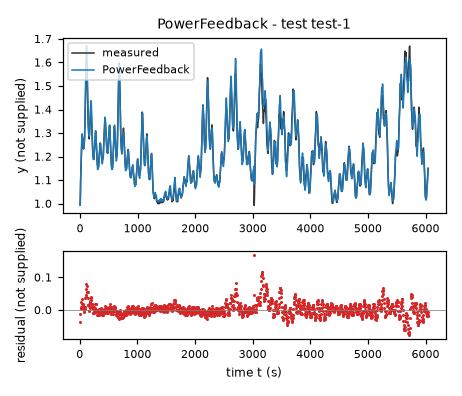
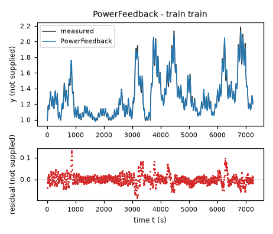
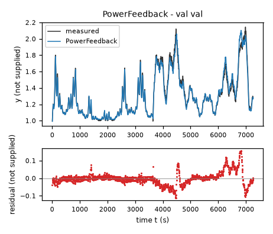
| Data | Trajectory | Scored samples | RMSE | NRMSE | R² | Failure |
|---|---|---|---|---|---|---|
| training data | train | 1451 of 1451 | 0.02374 | 0.09106 | 0.9917 | none |
| validation data | val | 1453 of 1453 | 0.03683 | 0.1403 | 0.9803 | none |
| test data | test-1 | 1209 of 1209 | 0.02228 | 0.1599 | 0.9744 | none |
RMSE of y; NRMSE = RMSE / σ and R² = 1 − SSE / Σ(y[k] − μ)², with μ and σ the mean and the population standard deviation of the measured output on the scored samples.
n1 = 70 x1-unit (fixed), n2 = 20 x2-unit (fixed), c0 = 0.002559 state-unit/s (fitted), c1 = -0.1182 state-unit**0.5/s (fitted), c2 = 0.0002814 state-unit/s (fitted), c3 = 0.02422 state-unit/s (fitted), c4 = 0.06612 state-unit**0.5/s (fitted), h = 0.994 state-unit (fitted), a = 1.482 (fitted), epsy = 1e-06 state-unit (fixed)y: 0.02387 · validation error: 0.03741 · test error: 0.02237Equations as written in the model file
dy = c0 + c1*sqrt(Max(y-h,epsy)) + c2*exp(a*(x1/n1-1)) + c3*(x2/n2) + c4*exp(a*(x1/n1-1))*sqrt(Max(y-h,epsy))
Equations with the values substituted
Every parameter is replaced by its value with 4 significant digits.
Parameters and estimation
| Name | Value | Unit | Type | Description |
|---|---|---|---|---|
n1 | 70 | x1-unit | fixed | Convenient input normalization, selected by inspection of the training input scale, not optimized; gives dimensionless . |
n2 | 20 | x2-unit | fixed | Convenient input normalization selected by inspection of the training input scale, not optimized; gives dimensionless . |
c0 | 0.00255854 | state-unit/s | fitted | Coefficient of the corresponding ordered drift, state feedback, exponential forcing, second-input forcing or mixed term; jointly estimated. |
c1 | -0.118247 | state-unit**0.5/s | fitted | Coefficient of the corresponding ordered drift, state feedback, exponential forcing, second-input forcing or mixed term; jointly estimated. |
c2 | 0.00028143 | state-unit/s | fitted | Coefficient of the corresponding ordered drift, state feedback, exponential forcing, second-input forcing or mixed term; jointly estimated. |
c3 | 0.0242185 | state-unit/s | fitted | Coefficient of the corresponding ordered drift, state feedback, exponential forcing, second-input forcing or mixed term; jointly estimated. |
c4 | 0.0661185 | state-unit**0.5/s | fitted | Coefficient of the corresponding ordered drift, state feedback, exponential forcing, second-input forcing or mixed term; jointly estimated. |
h | 0.994 | state-unit | fitted | State shift before square root. |
a | 1.48176 | - | fitted | Exponential sensitivity to the normalized first input. |
epsy | 1e-06 | state-unit | fixed | Small positive floor selected for the shifted state before fractional powers or square roots; ensures real finite evaluation near and below the offset, not inferred as a physical threshold. |
- Criterion minimized
Final criterion: sum of squared free-running errors in
yon both available trajectories, excluding only the first state of each file, to match the evaluation criterion. Initial derivative least squares and then teacher-forced one-step RK4 output least squares supplied starting values; those criteria do not define the final estimates.- Data
Both complete files data/train.csv (one stated trajectory) and data/val.csv (one stated trajectory) were used in the final fit. Training-only fits were compared on validation first. During final fitting each file was initialized only at its first observed state, with no later state resets; all subsequent observations contributed equal output-error weight. Sampling period was 5 s, with current-row inputs held constant during each classical RK4 step. Validation was subsequently used for fitting, so final validation errors are in-sample and are not unbiased generalization estimates.
- Method
All parameters were estimated jointly at every stage. Initial derivative fit on all training rows used The optimizer is scipy.optimize.least_squares, default Trust Region Reflective algorithm, finite-difference two-point Jacobian and linear loss; its official documentation was checked online. Nonlinear least squares was used because RK4 output error is nonlinear even in coefficients of a polynomial vector field. Numeric initialization in the expression parameter order was [0.001, -0.09, 0.004, 0.02, 0.025, 0.99, 2.0]; units are those of the corresponding parameter rows. This seed came from the previously fitted helper model or polynomial model, except exponential and sigmoid seeds, which were moderate hand-chosen coefficients and scale parameters. Numeric derivative-stage output was [0.0017848625340711806, -0.09246679285173606, 0.0018856655776358672, 0.021709735533618484, 0.043313068610871426, 0.9916549264200772, 1.9553920757928465] and numeric one-step-stage output was [0.0026897195674911102, -0.1080782638545392, 0.0014462422283676923, 0.023862603257563935, 0.05400155634596872, 0.9913142584970798, 1.7636546602812173]. These numbers are in the corresponding parameter units. They document actual starts, not extra constants in the model. Bounds in the same order were [-1, -1, -1, -1, -1, 0.8, 0] to [1, 1, 1, 1, 1, 0.994, 8], in the corresponding parameter units; these prevent extreme coefficients and invalid powers while permitting broad empirical nonlinear shapes. Max_nfev was 300 for derivative initialization, 180 for one-step training fit, and 200 for free-running fit; default convergence tolerances were 1e-8. The final fit on both files started directly from the documented one-step values, not from the training-only output-error fit. A separate training-only free-running fit was used for validation comparison. No random numbers or seed were used. nonlinear_dynamic.py reproduces the sequence and retains the exact original initialization vectors in its referenced working-directory result files.
- Script
nonlinear_dynamic.py
The agent's explanation
Exponential-input, square-root-state nonlinear state-space vector field.
c0 is drift, is shifted square-root state feedback, is exponential first-input forcing, is linear second-input forcing and is an input-dependent state-feedback gain. The square root is a mathematical concave response; no tank interpretation is claimed.
An exponential input map was tested as a smooth alternative to a high fitted power of the first input. State-input residual dependence motivated an exponential-by-square-root interaction. Linear second-input forcing was selected as a parsimonious starting structure, since richer fits gave an exponent near one.
No system description or units are supplied, so these are empirical vector fields rather than asserted physical laws. Unit labels state-unit, x1-unit and x2-unit denote unknown logged units; only seconds are known. The fitted domain is approximately state-unit, x1-unit, and x2-unit on the two supplied files. Polynomial derivative residuals have temporal dependence and correlate with the next change in x2; this suggests sampling alignment or omitted dynamics, but is not proof of a particular mechanism. Abrupt near-baseline states midway through the files are not reset in fitting or prediction. No memory, next input, or hidden state is included in the delivered expressions; the irreducible consequences of these omissions remain. Extrapolation and input regimes not represented here are unvalidated. Exponential input growth makes large first-input extrapolation particularly unsafe. The state offset reaches its upper bound and is not a physically established threshold.
Plots of simulated and measured y, and errors per trajectory
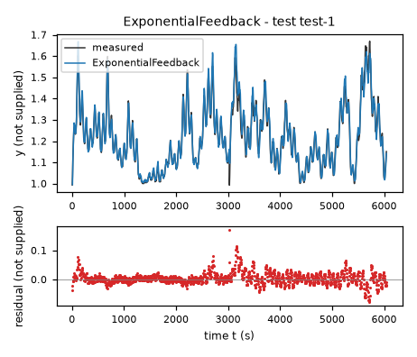
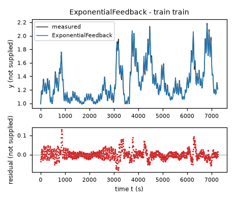
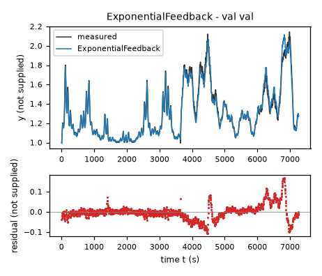
| Data | Trajectory | Scored samples | RMSE | NRMSE | R² | Failure |
|---|---|---|---|---|---|---|
| training data | train | 1451 of 1451 | 0.02387 | 0.09153 | 0.9916 | none |
| validation data | val | 1453 of 1453 | 0.03741 | 0.1425 | 0.9797 | none |
| test data | test-1 | 1209 of 1209 | 0.02237 | 0.1605 | 0.9742 | none |
RMSE of y; NRMSE = RMSE / σ and R² = 1 − SSE / Σ(y[k] − μ)², with μ and σ the mean and the population standard deviation of the measured output on the scored samples.
n1 = 70 x1-unit (fixed), n2 = 20 x2-unit (fixed), c0 = 0.01358 state-unit/s (fitted), c1 = -0.01695 state-unit**0.5/s (fitted), c2 = 0.002646 state-unit/s (fitted), c3 = 0.3485 state-unit/s (fitted), c4 = 0.07599 state-unit**0.5/s (fitted), c5 = 0.02515 state-unit**0.5/s (fitted), h = 0.994 state-unit (fitted), a = 1.682 (fitted), u0 = 1.313 (fitted), b = 0.06762 (fitted), w0 = 0.3723 (fitted), epsy = 1e-06 state-unit (fixed)y: 0.02375 · validation error: 0.03702 · test error: 0.02279Equations as written in the model file
dy = c0 + c1*sqrt(Max(y-h,epsy)) + c2*tanh(a*(x1/n1-u0)) + c3*tanh(b*(x2/n2-w0)) + c4*tanh(a*(x1/n1-u0))*sqrt(Max(y-h,epsy)) + c5*tanh(b*(x2/n2-w0))*sqrt(Max(y-h,epsy))
Equations with the values substituted
Every parameter is replaced by its value with 4 significant digits.
Parameters and estimation
| Name | Value | Unit | Type | Description |
|---|---|---|---|---|
n1 | 70 | x1-unit | fixed | Convenient input normalization, selected by inspection of the training input scale, not optimized; gives dimensionless . |
n2 | 20 | x2-unit | fixed | Convenient input normalization selected by inspection of the training input scale, not optimized; gives dimensionless . |
c0 | 0.0135755 | state-unit/s | fitted | Coefficient of the corresponding ordered drift, square-root feedback, two saturating forcings or two mixed terms; jointly estimated. |
c1 | -0.0169453 | state-unit**0.5/s | fitted | Coefficient of the corresponding ordered drift, square-root feedback, two saturating forcings or two mixed terms; jointly estimated. |
c2 | 0.00264643 | state-unit/s | fitted | Coefficient of the corresponding ordered drift, square-root feedback, two saturating forcings or two mixed terms; jointly estimated. |
c3 | 0.348502 | state-unit/s | fitted | Coefficient of the corresponding ordered drift, square-root feedback, two saturating forcings or two mixed terms; jointly estimated. |
c4 | 0.0759866 | state-unit**0.5/s | fitted | Coefficient of the corresponding ordered drift, square-root feedback, two saturating forcings or two mixed terms; jointly estimated. |
c5 | 0.0251518 | state-unit**0.5/s | fitted | Coefficient of the corresponding ordered drift, square-root feedback, two saturating forcings or two mixed terms; jointly estimated. |
h | 0.994 | state-unit | fitted | State shift before square root. |
a | 1.68172 | - | fitted | First-input hyperbolic-tangent slope. |
u0 | 1.31282 | - | fitted | First-input normalized center. |
b | 0.0676246 | - | fitted | Second-input hyperbolic-tangent slope. |
w0 | 0.372273 | - | fitted | Second-input normalized center. |
epsy | 1e-06 | state-unit | fixed | Small positive floor selected for the shifted state before fractional powers or square roots; ensures real finite evaluation near and below the offset, not inferred as a physical threshold. |
- Criterion minimized
Final criterion: sum of squared free-running errors in
yon both available trajectories, excluding only the first state of each file, to match the evaluation criterion. Initial derivative least squares and then teacher-forced one-step RK4 output least squares supplied starting values; those criteria do not define the final estimates.- Data
Both complete files data/train.csv (one stated trajectory) and data/val.csv (one stated trajectory) were used in the final fit. Training-only fits were compared on validation first. During final fitting each file was initialized only at its first observed state, with no later state resets; all subsequent observations contributed equal output-error weight. Sampling period was 5 s, with current-row inputs held constant during each classical RK4 step. Validation was subsequently used for fitting, so final validation errors are in-sample and are not unbiased generalization estimates.
- Method
All parameters were estimated jointly at every stage. Initial derivative fit on all training rows used The optimizer is scipy.optimize.least_squares, default Trust Region Reflective algorithm, finite-difference two-point Jacobian and linear loss; its official documentation was checked online. Nonlinear least squares was used because RK4 output error is nonlinear even in coefficients of a polynomial vector field. Numeric initialization in the expression parameter order was [0.0, -0.1, 0.01, 0.02, 0.05, 0.01, 0.99, 2.0, 0.8, 2.0, 0.8]; units are those of the corresponding parameter rows. This seed came from the previously fitted helper model or polynomial model, except exponential and sigmoid seeds, which were moderate hand-chosen coefficients and scale parameters. Numeric derivative-stage output was [0.017394070080756052, 0.13640922674200184, 0.016129449568352473, 0.05906093635681033, 0.22593977506259813, 0.010627251627095748, 0.9920052166593135, 1.2134331650072445, 1.9999976377609854, 0.38139673825180803, 2.7056273411013517e-06] and numeric one-step-stage output was [0.018723809783396318, 0.03975063628356295, 0.008117215992241649, 0.04924846397517057, 0.13798659034716662, 0.009749900913879285, 0.9912775886027484, 1.317896473219022, 1.6601218669010591, 0.47994518194520736, 0.342650927297341]. These numbers are in the corresponding parameter units. They document actual starts, not extra constants in the model. Bounds in the same order were [-1, -1, -1, -1, -1, -1, 0.8, 0.01, 0, 0.01, 0] to [1, 1, 1, 1, 1, 1, 0.994, 20, 2, 20, 2], in the corresponding parameter units; these prevent extreme coefficients and invalid powers while permitting broad empirical nonlinear shapes. Max_nfev was 300 for derivative initialization, 180 for one-step training fit, and 200 for free-running fit; default convergence tolerances were 1e-8. The final fit on both files started directly from the documented one-step values, not from the training-only output-error fit. A separate training-only free-running fit was used for validation comparison. No random numbers or seed were used. nonlinear_dynamic.py reproduces the sequence and retains the exact original initialization vectors in its referenced working-directory result files.
- Script
nonlinear_dynamic.py
The agent's explanation
Saturating hyperbolic-tangent nonlinear state-space vector field with transformed bilinear feedback.
The saturating first- and second-input maps are and . Their separate forcings are and ; mixed terms and modify the square-root state feedback. c0 is constant drift. Saturation is mathematical boundedness, not a measured actuator property.
Hyperbolic-tangent maps were a deliberately bounded alternative to power and exponential input extrapolation. A purely additive sigmoid model was inadequate, so shifted square-root state response and both transformed state-input products were added based on interaction residuals. No neural-network package or genetic symbolic search was used.
No system description or units are supplied, so these are empirical vector fields rather than asserted physical laws. Unit labels state-unit, x1-unit and x2-unit denote unknown logged units; only seconds are known. The fitted domain is approximately state-unit, x1-unit, and x2-unit on the two supplied files. Polynomial derivative residuals have temporal dependence and correlate with the next change in x2; this suggests sampling alignment or omitted dynamics, but is not proof of a particular mechanism. Abrupt near-baseline states midway through the files are not reset in fitting or prediction. No memory, next input, or hidden state is included in the delivered expressions; the irreducible consequences of these omissions remain. Extrapolation and input regimes not represented here are unvalidated. The second-input tangent is nearly linear on the observed domain; its slope, center and amplitude are strongly confounded. The finite iteration budget was reached, so this candidate is not asserted to be a converged global optimum. Bounded input maps do not by themselves guarantee stable state feedback.
Plots of simulated and measured y, and errors per trajectory
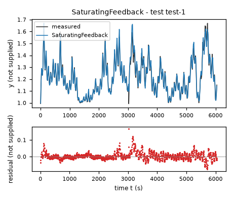
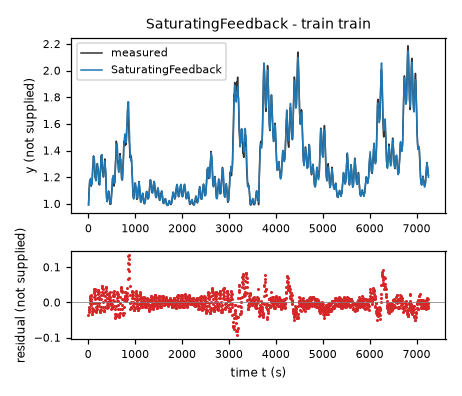
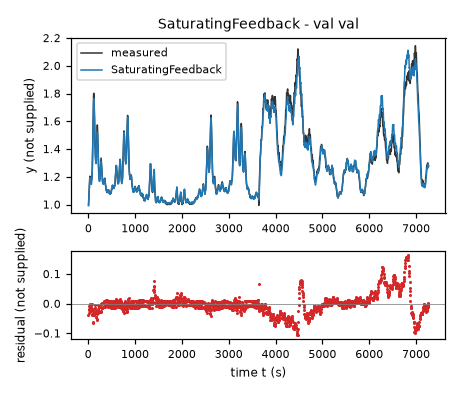
| Data | Trajectory | Scored samples | RMSE | NRMSE | R² | Failure |
|---|---|---|---|---|---|---|
| training data | train | 1451 of 1451 | 0.02375 | 0.09109 | 0.9917 | none |
| validation data | val | 1453 of 1453 | 0.03702 | 0.141 | 0.9801 | none |
| test data | test-1 | 1209 of 1209 | 0.02279 | 0.1635 | 0.9733 | none |
RMSE of y; NRMSE = RMSE / σ and R² = 1 − SSE / Σ(y[k] − μ)², with μ and σ the mean and the population standard deviation of the measured output on the scored samples.
2 Course of the run
The system prompt, TASK.md and FORMAT.md that the agent received are shown on the page of the experiment.
0:00Harness: opening message to the agent
10:07Read TASK.md0.01
5,474 input and 19 output tokens; 0.011 USD for this turn.
TASK.md
output as sent to the agent (3,449 characters, 38 lines)
[TASK.md: 3422 characters] # Task: Identification task qtqm ## 1 System and intended use The task gives no description of the system. The task states no intended use of the model. ## 2 Data `data/train.csv` holds 1452 samples of training data: one trajectory of consecutive samples. `data/val.csv` holds 1454 samples of validation data: one trajectory of consecutive samples. Whether and how you use the validation data is your decision. Row k+1 of a trajectory is the sample that follows row k; different trajectories are separate experiments. The sampling period is T_s = 5 s. | Column | Role | Unit | Training range | Description | |---|---|---|---|---| | `y` | state, scored output | not supplied | not declared | not supplied | | `x1` | input | not supplied | not declared | not supplied | | `x2` | input | not supplied | not declared | not supplied | | `dy` | sampled time derivative of `y` | not supplied | not declared | not supplied | The task does not state the units. The task does not describe the columns. ## 3 What you deliver A candidate is a continuous-time model of one closed-form expression, `dy`: the time derivative of the state `y` as a function of `y`, `x1` and `x2`. The column `dy` is a possible fitting target for the derivative of `y`; it is not an argument of the expressions. `FORMAT.md` states how an expression is written and what it may contain. Write one file per candidate, `models/<label>.json`; `FORMAT.md` describes the file and gives an example. Write also `models/pool.json`, which lists the labels of your candidates in the order in which they are to be evaluated. You can recommend one candidate that you consider the best-performing. `models/pool.json` then names that candidate and gives your reason. Run `python check_submission.py` to check your files: it prints every error with its location, so that you can correct it. At most 10 candidates are evaluated, in the order of `models/pool.json`. Consider various identification approaches, for example physically motivated structures, symbolic-regression search or sparse regression; before fitting, list the approaches and the model families you will try. Build the pool from structurally different model families, not from variations of one form. Examine the residuals of your best candidates and try structures that can represent what they show. Include only candidates you would defend as a model of the system. ## 4 Evaluation The harness, the software that runs this task, evaluates every candidate on test data that you cannot access. For each test trajectory it starts from the first logged state and integrates the expressions with the classical fourth-order Runge–Kutta method, one step per sampling period, with the logged inputs held constant between samples; a simulated state is never replaced by a later measurement. The score is the root mean squared error (RMSE) between simulated and logged `y` over all test samples after the first of each trajectory. An evaluation fails when a value is not finite, when `y` leaves [-100, 100], or when it takes longer than 60 s. ## 5 Limits and completion One round: 60 turns, 3600 s of execution time, 10 USD; a turn is one response of yours. When the files pass the check, send the exact message DONE. If the harness's check of the files then fails, you receive its report and may correct the files once. If a limit ends the round earlier, the complete candidate files are evaluated.
20:08Read FORMAT.md0.02
6,270 input and 19 output tokens; 0.013 USD for this turn.
FORMAT.md
output as sent to the agent (8,159 characters, 128 lines)
[FORMAT.md: 8130 characters]
# Model file format
This file is the same for every task. `TASK.md` names the expression keys, the variables and the permitted functions of your task.
## Candidate file `models/<label>.json`
Write one JSON file per candidate. The label is the file name: a letter, then up to 31 letters, digits, `_` or `-`. The file has these fields and no others:
- `expressions`: one expression text per expression key named in `TASK.md`.
- `parameters`: one row per parameter. A parameter is a constant of the expressions that you name yourself, for example `a1`. Its row has
- `name`: the name used in the expressions: a letter, then letters, digits or `_`; it differs from every column, expression key, constant and function name;
- `value`: the numerical value;
- `unit`: the unit; `-` for a dimensionless quantity;
- `type`: `fitted` (estimated from data), `fixed` (chosen or known, not estimated) or `tied` (computed from other parameters by `equation`);
- `description`: what the parameter represents; for a fixed value, where the value comes from and why it was chosen; for a value taken over from another candidate or an earlier fit, from which one;
- `equation`: for a tied parameter only: its defining equation over other parameters, given constants and numbers.
- `estimation`: how the values of the fitted parameters of this candidate were obtained and why in this way; for every fitted parameter it must be clear how its value was found. Write the record for this candidate model, not for the run as a whole: its own criterion, data, method and starting values, with the reasons that apply to this candidate. The record has
- `criterion`: what was minimized, on which variable, and why this criterion;
- `data`: the files, trajectories or rows used, and the reason when some were left out;
- `method`: how the values were estimated: the estimation method by its established name and the software function, and why this method and not another; the starting values as numbers, or the statement that the method needs none, and why these starting values; whether all fitted parameters were estimated together in one step and, if not, which parameters were estimated in which step, with which criterion, and why; the seeds where they apply;
- `script`: the file in the working directory that reproduces the values.
- `discussion`: four texts, in this order:
- `family`: the model family by its established name, with a reference where you know one;
- `interpretation`: what each term represents in the system; describe a term without a known physical meaning by its mathematical effect;
- `origin`: how you arrived at the structure of this expression, as distinct from its parameter values, which `estimation` covers: say which of its terms, variables and operators came from physical reasoning, which from a search and which from a guess, what you tried before, and what made you change it;
- `limitations`: what the data do not determine and where the model is not expected to hold.
- `answers`: only when `TASK.md` asks questions about the candidates: one text per question identifier.
- `predecessor`: only in a later round of an interactive session, and optional: the label of the candidate of the previous pool that this candidate revises.
## Expressions
An expression is a text in Python syntax. It may contain:
- the variables that `TASK.md` names as the arguments of the expression;
- your parameters, each with a row in `parameters`;
- the constants `pi` and `E`, the given constants that `TASK.md` lists, and numbers;
- these operators and functions, unless `TASK.md` states another list: `+` `-` `*` `/` `**` `sin` `cos` `tan` `asin` `acos` `atan` `atan2` `sinh` `cosh` `tanh` `exp` `log` `sqrt` `Abs` `sign` `Min` `Max` `Piecewise`.
`**` is the power (not `^`), and `log` is the natural logarithm. `Piecewise` takes pairs `(value, condition)` and ends with a pair `(value, True)`, for example `Piecewise((a1*q, (q > 0) & (q < 1)), (0, True))`. A condition is a comparison `<`, `<=`, `>`, `>=`, `Eq(a, b)` or `Ne(a, b)`, each in parentheses, combined with `&`, `|` and `~`.
A number that fixes the form of the expression, such as 2 in `q**2`, may be written directly. A value obtained by estimation is a parameter with a row in `parameters`, never a number written into the expression. Every parameter row must be used in an expression or in a tie equation.
## Pool file `models/pool.json`
- `order`: the candidate labels in your order;
- `recommended`: the label of the candidate you recommend, or `null` when you recommend none;
- `reason`: why you recommend this candidate, or why you recommend none.
Every file `models/<label>.json` must be listed in `order`.
## Example
An invented task with one input `q` and one output `z`, whose expression key is `z`. The example shows the format only: its model is not a proposal, and its discussion texts say what your texts must contain.
`models/M01.json`:
```json
{
"expressions": {
"z": "a1*q + b1*q**2/n0"
},
"parameters": [
{
"name": "a1",
"value": 0.5,
"unit": "-",
"type": "fitted",
"description": "coefficient of `q`"
},
{
"name": "n0",
"value": 2.0,
"unit": "-",
"type": "fixed",
"description": "normalisation of the quadratic term; chosen as the largest value of `q` in the training data, so that `b1` has the scale of `a1`"
},
{
"name": "b1",
"value": 1.0,
"unit": "-",
"type": "tied",
"equation": "2*a1",
"description": "coefficient of `q**2/n0`, tied to `a1` by the assumption stated in the discussion"
}
],
"estimation": {
"criterion": "sum of squared differences between the expression `z` and the column `z`, because the expression gives `z` directly and no row is known to be more accurate than another",
"data": "data/train.csv, all rows",
"method": "The value of `a1` was estimated by ordinary least squares with numpy.linalg.lstsq. With `b1 = 2*a1` the expression is linear in the one fitted parameter `a1`, so the least-squares solution is obtained directly and an iterative method is not needed; for the same reason the method needs no starting values. `a1` is the only fitted parameter and was estimated in one step. The method uses no random numbers, so that no seed applies.",
"script": "fit_M01.py"
},
"discussion": {
"family": "State the model family by its established name.",
"interpretation": "State what each term represents.",
"origin": "State how you arrived at this expression.",
"limitations": "State what the data do not determine and where the model is not expected to hold."
}
}
```
`models/pool.json`:
```json
{
"order": [
"M01"
],
"recommended": "M01",
"reason": "State why you recommend this candidate, or why you recommend none."
}
```
## Checking
`python check_submission.py` checks every file against these rules and evaluates each expression on the training data. It names each error with its rule. Correct the errors and run it again.
## Writing
- Define every symbol at first use.
- Give every number with its unit and the data it was computed on.
- Name methods by their established names.
- Cite a reference for a model family or a method where one applies. Cite only references you are certain exist, and say when you cite from memory without having checked the source.
- Say what is estimated, what is assumed and what is unknown.
- Give a brief reason for every choice you made: a structure, a criterion, a method, a starting value, a fixed value, a term you removed.
- Write every expression inside a text between backticks, in the syntax of the expressions, for example `a1*q**2`; write it out, do not describe it in words. This holds also for a single parameter, column or expression name, such as `a1`, for a value given to one, such as `a1 = 0.5`, and for a range, such as `0 <= a1 <= 2`. A unit follows outside the backticks; a dimensionless value has no unit and no hyphen after it.
- Describe a term without a known physical meaning by its mathematical effect; do not invent a meaning.
30:11Listed the files0.04
8,322 input and 87 output tokens (of which 11 reasoning); 0.018 USD for this turn.
reasoning summary (written by the model provider's summarizer; the model's own reasoning is not available)
Considering an inspection plan
I need to develop a thorough inspection plan before proceeding with the fitting process. It’s essential to ensure everything is in order and that there are no issues that could impact the fitting. I must gather the necessary resources and check for any specific requirements or standards involved. This careful preparation will help streamline the fitting process and ensure we get everything right from the start. Let's prioritize efficiency!
I will compare an affine state-space model, sparse polynomial models, and nonlinear models with saturating or rational terms. I will first inspect the data, then fit derivative models, check their free-running simulations on validation, and use residual patterns to guide any additional structures.
{}output as sent to the agent (189 characters, 9 lines)
[.: 8 entries] data/ models/ FORMAT.md 8130 bytes TASK.md 3424 bytes check_config.json 965 bytes check_submission.py 102476 bytes data/train.csv 105525 bytes data/val.csv 105660 bytes
40:15Wrote inspect.py0.06
8,481 input and 151 output tokens; 0.018 USD for this turn.
inspect.py
file content written (393 characters)
import pandas as pd, numpy as np
for name in ['train','val']:
d=pd.read_csv('data/'+name+'.csv'); print(name,d.shape); print(d.describe().to_string()); print(d.head(12).to_string()); print('corr',d.corr().to_string());
for c in d: print(c,'unique',d[c].nunique())
print('finite differences vs dy',np.corrcoef(np.diff(d.y)/5,d.dy[:-1])[0,1], np.sqrt(np.mean((np.diff(d.y)/5-d.dy[:-1])**2)))
output as sent to the agent (35 characters, 1 lines)
Wrote 393 characters to inspect.py.
50:17Ran python inspect.py (exit status 1)0.08
8,652 input and 20 output tokens; 0.018 USD for this turn.
$ python inspect.py
output as sent to the agent (1,572 characters, 21 lines)
[exit status 1]
[stderr]
Traceback (most recent call last):
File "C:\Users\user1\AppData\Local\Temp\aspire-runs-blind\8ae67b61ee69b42c\workspace\inspect.py", line 1, in <module>
import pandas as pd, numpy as np
File "C:\Users\user1\AppData\Local\aspire\agent-env\Lib\site-packages\pandas\__init__.py", line 23, in <module>
__import__(_dependency)
File "C:\Users\user1\AppData\Local\aspire\agent-env\Lib\site-packages\numpy\__init__.py", line 122, in <module>
from numpy.__config__ import show_config
File "C:\Users\user1\AppData\Local\aspire\agent-env\Lib\site-packages\numpy\__config__.py", line 4, in <module>
from numpy._core._multiarray_umath import (
File "C:\Users\user1\AppData\Local\aspire\agent-env\Lib\site-packages\numpy\_core\__init__.py", line 24, in <module>
from . import multiarray
File "C:\Users\user1\AppData\Local\aspire\agent-env\Lib\site-packages\numpy\_core\multiarray.py", line 11, in <module>
from . import _multiarray_umath, overrides
File "C:\Users\user1\AppData\Local\aspire\agent-env\Lib\site-packages\numpy\_core\overrides.py", line 4, in <module>
import inspect
File "C:\Users\user1\AppData\Local\Temp\aspire-runs-blind\8ae67b61ee69b42c\workspace\inspect.py", line 3, in <module>
d=pd.read_csv('data/'+name+'.csv'); print(name,d.shape); print(d.describe().to_string()); print(d.head(12).to_string()); print('corr',d.corr().to_string());
^^^^^^^^^^^
AttributeError: partially initialized module 'pandas' has no attribute 'read_csv' (most likely due to a circular import)
60:20Ran move inspect.py explore_data.py && python explore_data.py0.10
9,196 input and 28 output tokens; 0.019 USD for this turn.
$ move inspect.py explore_data.py && python explore_data.py
output as sent to the agent (3,036 characters, 68 lines)
[exit status 0]
1 file(s) moved.
train (1452, 4)
y x1 x2 dy
count 1452.000000 1452.000000 1452.000000 1452.000000
mean 1.298163 64.577523 17.903418 0.000036
std 0.260879 18.177046 6.833631 0.006076
min 0.992309 10.307583 0.097345 -0.020900
25% 1.093695 57.980696 12.932027 -0.003375
50% 1.229201 69.451447 18.331697 -0.000049
75% 1.427059 76.736809 23.742245 0.003296
max 2.186718 92.411713 30.796778 0.023952
y x1 x2 dy
0 0.992431 56.277222 0.103498 0.007056
1 1.027712 52.160172 18.899395 0.010865
2 1.082036 48.689106 21.223804 0.005884
3 1.111457 54.997639 23.015125 0.005713
4 1.140023 60.950226 24.108770 0.006128
5 1.170665 57.034481 24.341257 0.001563
6 1.178478 53.030518 23.665775 -0.001660
7 1.170176 58.783981 22.377659 -0.000195
8 1.169200 64.851952 20.676872 0.000781
9 1.173106 61.040573 18.942465 -0.003369
10 1.156260 56.419758 17.527559 -0.003906
11 1.136727 61.498772 16.658049 -0.000855
corr y x1 x2 dy
y 1.000000 0.576059 0.642001 -0.063003
x1 0.576059 1.000000 0.216787 0.207214
x2 0.642001 0.216787 1.000000 0.092273
dy -0.063003 0.207214 0.092273 1.000000
y unique 1273
x1 unique 1452
x2 unique 1444
dy unique 923
finite differences vs dy 0.9993385928634431 0.0002211321408499036
val (1454, 4)
y x1 x2 dy
count 1454.000000 1454.000000 1454.000000 1454.000000
mean 1.306319 63.036614 18.115842 0.000049
std 0.262661 20.452928 5.683909 0.005129
min 0.994018 1.628053 0.083062 -0.019630
25% 1.099005 50.743231 14.566727 -0.002539
50% 1.241104 69.200447 19.234609 0.000000
75% 1.441433 78.820923 22.523403 0.002393
max 2.144479 94.448708 29.071159 0.023708
y x1 x2 dy
0 0.994140 58.444061 0.204358 0.007276
1 1.030519 65.435143 18.151621 0.009888
2 1.079961 70.790749 15.957956 0.005493
3 1.107428 74.028763 14.378026 0.006861
4 1.141732 74.976189 16.945688 0.008863
5 1.186046 73.793022 19.338436 0.003662
6 1.204358 70.946602 17.657644 -0.001563
7 1.196545 67.140427 15.926753 -0.000610
8 1.193493 63.207790 18.366966 0.001172
9 1.199353 59.986385 20.784765 -0.002759
10 1.185558 58.192310 19.118258 -0.003955
11 1.165782 58.312363 17.175755 -0.000757
corr y x1 x2 dy
y 1.000000 0.638022 0.502442 -0.055603
x1 0.638022 1.000000 0.160550 0.202043
x2 0.502442 0.160550 1.000000 0.084172
dy -0.055603 0.202043 0.084172 1.000000
y unique 1268
x1 unique 1454
x2 unique 1446
dy unique 820
finite differences vs dy 0.9978657014788552 0.0003356334527234
70:28Started a helper agent (Independently explore data train/val for interpretable nonlinear cont…)0.12
10,682 input and 146 output tokens (of which 40 reasoning); 0.023 USD for this turn.
reasoning summary (written by the model provider's summarizer; the model's own reasoning is not available)
Exploring data dynamics
I think the data might be affected by high nonlinear static multiplicative inputs and perhaps a squared variable. I need to explore polynomial dynamics further. It looks like there's a budget of 27k remaining, which should be enough for about 45 turns to work on this. I could also consider delegating some of the nonlinear discovery tasks, if that makes sense, to make sure I get a clearer understanding.
{
"task": "Independently explore data train/val for interpretable nonlinear continuous derivative structure (tank, rational, transformed power etc). Do not write candidate models. Fit derivative, inspect residuals, and report results and code you used. Use only working directory data. Main agent handles polynomial and simulation. Aim low derivative and rollout errors. Remember inputs current row and Ts=5. Save own scripts unique helper*.py.",
"max_turns": 9
}output as sent to the agent (422 characters, 3 lines)
Helper helper-1 stopped because the turn limit of the helper-1 was reached (9 turns, 0.2617 USD). Its last text: I will compare interpretable square-root/tank, transformed-power, saturation, and rational derivative structures using training-only fitting and validation residuals. I will use the current-row inputs and the stated sampling interval of 5 s, and leave candidate files and rollout selection to the main agent.
0:28Harness: helper agent helper-1 started
task-qtqm
0:30Helper agent helper-1: read TASK.md, FORMAT.md; listed the files0.13
5,011 input and 62 output tokens; 0.011 USD for this turn.
TASK.md
output as sent to the agent (3,449 characters, 38 lines)
[TASK.md: 3422 characters] # Task: Identification task qtqm ## 1 System and intended use The task gives no description of the system. The task states no intended use of the model. ## 2 Data `data/train.csv` holds 1452 samples of training data: one trajectory of consecutive samples. `data/val.csv` holds 1454 samples of validation data: one trajectory of consecutive samples. Whether and how you use the validation data is your decision. Row k+1 of a trajectory is the sample that follows row k; different trajectories are separate experiments. The sampling period is T_s = 5 s. | Column | Role | Unit | Training range | Description | |---|---|---|---|---| | `y` | state, scored output | not supplied | not declared | not supplied | | `x1` | input | not supplied | not declared | not supplied | | `x2` | input | not supplied | not declared | not supplied | | `dy` | sampled time derivative of `y` | not supplied | not declared | not supplied | The task does not state the units. The task does not describe the columns. ## 3 What you deliver A candidate is a continuous-time model of one closed-form expression, `dy`: the time derivative of the state `y` as a function of `y`, `x1` and `x2`. The column `dy` is a possible fitting target for the derivative of `y`; it is not an argument of the expressions. `FORMAT.md` states how an expression is written and what it may contain. Write one file per candidate, `models/<label>.json`; `FORMAT.md` describes the file and gives an example. Write also `models/pool.json`, which lists the labels of your candidates in the order in which they are to be evaluated. You can recommend one candidate that you consider the best-performing. `models/pool.json` then names that candidate and gives your reason. Run `python check_submission.py` to check your files: it prints every error with its location, so that you can correct it. At most 10 candidates are evaluated, in the order of `models/pool.json`. Consider various identification approaches, for example physically motivated structures, symbolic-regression search or sparse regression; before fitting, list the approaches and the model families you will try. Build the pool from structurally different model families, not from variations of one form. Examine the residuals of your best candidates and try structures that can represent what they show. Include only candidates you would defend as a model of the system. ## 4 Evaluation The harness, the software that runs this task, evaluates every candidate on test data that you cannot access. For each test trajectory it starts from the first logged state and integrates the expressions with the classical fourth-order Runge–Kutta method, one step per sampling period, with the logged inputs held constant between samples; a simulated state is never replaced by a later measurement. The score is the root mean squared error (RMSE) between simulated and logged `y` over all test samples after the first of each trajectory. An evaluation fails when a value is not finite, when `y` leaves [-100, 100], or when it takes longer than 60 s. ## 5 Limits and completion One round: 60 turns, 3600 s of execution time, 10 USD; a turn is one response of yours. When the files pass the check, send the exact message DONE. If the harness's check of the files then fails, you receive its report and may correct the files once. If a limit ends the round earlier, the complete candidate files are evaluated.
FORMAT.md
output as sent to the agent (8,159 characters, 128 lines)
[FORMAT.md: 8130 characters]
# Model file format
This file is the same for every task. `TASK.md` names the expression keys, the variables and the permitted functions of your task.
## Candidate file `models/<label>.json`
Write one JSON file per candidate. The label is the file name: a letter, then up to 31 letters, digits, `_` or `-`. The file has these fields and no others:
- `expressions`: one expression text per expression key named in `TASK.md`.
- `parameters`: one row per parameter. A parameter is a constant of the expressions that you name yourself, for example `a1`. Its row has
- `name`: the name used in the expressions: a letter, then letters, digits or `_`; it differs from every column, expression key, constant and function name;
- `value`: the numerical value;
- `unit`: the unit; `-` for a dimensionless quantity;
- `type`: `fitted` (estimated from data), `fixed` (chosen or known, not estimated) or `tied` (computed from other parameters by `equation`);
- `description`: what the parameter represents; for a fixed value, where the value comes from and why it was chosen; for a value taken over from another candidate or an earlier fit, from which one;
- `equation`: for a tied parameter only: its defining equation over other parameters, given constants and numbers.
- `estimation`: how the values of the fitted parameters of this candidate were obtained and why in this way; for every fitted parameter it must be clear how its value was found. Write the record for this candidate model, not for the run as a whole: its own criterion, data, method and starting values, with the reasons that apply to this candidate. The record has
- `criterion`: what was minimized, on which variable, and why this criterion;
- `data`: the files, trajectories or rows used, and the reason when some were left out;
- `method`: how the values were estimated: the estimation method by its established name and the software function, and why this method and not another; the starting values as numbers, or the statement that the method needs none, and why these starting values; whether all fitted parameters were estimated together in one step and, if not, which parameters were estimated in which step, with which criterion, and why; the seeds where they apply;
- `script`: the file in the working directory that reproduces the values.
- `discussion`: four texts, in this order:
- `family`: the model family by its established name, with a reference where you know one;
- `interpretation`: what each term represents in the system; describe a term without a known physical meaning by its mathematical effect;
- `origin`: how you arrived at the structure of this expression, as distinct from its parameter values, which `estimation` covers: say which of its terms, variables and operators came from physical reasoning, which from a search and which from a guess, what you tried before, and what made you change it;
- `limitations`: what the data do not determine and where the model is not expected to hold.
- `answers`: only when `TASK.md` asks questions about the candidates: one text per question identifier.
- `predecessor`: only in a later round of an interactive session, and optional: the label of the candidate of the previous pool that this candidate revises.
## Expressions
An expression is a text in Python syntax. It may contain:
- the variables that `TASK.md` names as the arguments of the expression;
- your parameters, each with a row in `parameters`;
- the constants `pi` and `E`, the given constants that `TASK.md` lists, and numbers;
- these operators and functions, unless `TASK.md` states another list: `+` `-` `*` `/` `**` `sin` `cos` `tan` `asin` `acos` `atan` `atan2` `sinh` `cosh` `tanh` `exp` `log` `sqrt` `Abs` `sign` `Min` `Max` `Piecewise`.
`**` is the power (not `^`), and `log` is the natural logarithm. `Piecewise` takes pairs `(value, condition)` and ends with a pair `(value, True)`, for example `Piecewise((a1*q, (q > 0) & (q < 1)), (0, True))`. A condition is a comparison `<`, `<=`, `>`, `>=`, `Eq(a, b)` or `Ne(a, b)`, each in parentheses, combined with `&`, `|` and `~`.
A number that fixes the form of the expression, such as 2 in `q**2`, may be written directly. A value obtained by estimation is a parameter with a row in `parameters`, never a number written into the expression. Every parameter row must be used in an expression or in a tie equation.
## Pool file `models/pool.json`
- `order`: the candidate labels in your order;
- `recommended`: the label of the candidate you recommend, or `null` when you recommend none;
- `reason`: why you recommend this candidate, or why you recommend none.
Every file `models/<label>.json` must be listed in `order`.
## Example
An invented task with one input `q` and one output `z`, whose expression key is `z`. The example shows the format only: its model is not a proposal, and its discussion texts say what your texts must contain.
`models/M01.json`:
```json
{
"expressions": {
"z": "a1*q + b1*q**2/n0"
},
"parameters": [
{
"name": "a1",
"value": 0.5,
"unit": "-",
"type": "fitted",
"description": "coefficient of `q`"
},
{
"name": "n0",
"value": 2.0,
"unit": "-",
"type": "fixed",
"description": "normalisation of the quadratic term; chosen as the largest value of `q` in the training data, so that `b1` has the scale of `a1`"
},
{
"name": "b1",
"value": 1.0,
"unit": "-",
"type": "tied",
"equation": "2*a1",
"description": "coefficient of `q**2/n0`, tied to `a1` by the assumption stated in the discussion"
}
],
"estimation": {
"criterion": "sum of squared differences between the expression `z` and the column `z`, because the expression gives `z` directly and no row is known to be more accurate than another",
"data": "data/train.csv, all rows",
"method": "The value of `a1` was estimated by ordinary least squares with numpy.linalg.lstsq. With `b1 = 2*a1` the expression is linear in the one fitted parameter `a1`, so the least-squares solution is obtained directly and an iterative method is not needed; for the same reason the method needs no starting values. `a1` is the only fitted parameter and was estimated in one step. The method uses no random numbers, so that no seed applies.",
"script": "fit_M01.py"
},
"discussion": {
"family": "State the model family by its established name.",
"interpretation": "State what each term represents.",
"origin": "State how you arrived at this expression.",
"limitations": "State what the data do not determine and where the model is not expected to hold."
}
}
```
`models/pool.json`:
```json
{
"order": [
"M01"
],
"recommended": "M01",
"reason": "State why you recommend this candidate, or why you recommend none."
}
```
## Checking
`python check_submission.py` checks every file against these rules and evaluates each expression on the training data. It names each error with its rule. Correct the errors and run it again.
## Writing
- Define every symbol at first use.
- Give every number with its unit and the data it was computed on.
- Name methods by their established names.
- Cite a reference for a model family or a method where one applies. Cite only references you are certain exist, and say when you cite from memory without having checked the source.
- Say what is estimated, what is assumed and what is unknown.
- Give a brief reason for every choice you made: a structure, a criterion, a method, a starting value, a fixed value, a term you removed.
- Write every expression inside a text between backticks, in the syntax of the expressions, for example `a1*q**2`; write it out, do not describe it in words. This holds also for a single parameter, column or expression name, such as `a1`, for a value given to one, such as `a1 = 0.5`, and for a range, such as `0 <= a1 <= 2`. A unit follows outside the backticks; a dimensionless value has no unit and no hyphen after it.
- Describe a term without a known physical meaning by its mathematical effect; do not invent a meaning.
{}output as sent to the agent (216 characters, 10 lines)
[.: 9 entries] data/ models/ FORMAT.md 8130 bytes TASK.md 3424 bytes check_config.json 965 bytes check_submission.py 102476 bytes explore_data.py 393 bytes data/train.csv 105525 bytes data/val.csv 105660 bytes
0:35Helper agent helper-1: ran python -c "import pandas as pd,numpy as np; a=pd.read_csv('data/train.csv');b=pd.read_csv…0.15
7,960 input and 167 output tokens (of which 20 reasoning); 0.018 USD for this turn.
reasoning summary (written by the model provider's summarizer; the model's own reasoning is not available)
Optimizing Scripts for Data Analysis
I need to focus on operating efficient scripts to explore nonlinear data. Since I can't use the web for outside information, I'm considering how to work with the data and stats I have at hand. This involves making sure my analysis is robust and can handle the complexities of nonlinear relationships. I'll explore different methods to ensure I'm maximizing the efficiency of my scripts while sticking to the data available to me.
I will compare interpretable square-root/tank, transformed-power, saturation, and rational derivative structures using training-only fitting and validation residuals. I will use the current-row inputs and the stated sampling interval of 5 s, and leave candidate files and rollout selection to the main agent.
$ python -c "import pandas as pd,numpy as np; a=pd.read_csv('data/train.csv');b=pd.read_csv('data/val.csv');print(a.describe().to_string());print(b.describe().to_string());print(a.head(12).to_string());print(a.corr().to_string())"output as sent to the agent (1,895 characters, 37 lines)
[exit status 0]
y x1 x2 dy
count 1452.000000 1452.000000 1452.000000 1452.000000
mean 1.298163 64.577523 17.903418 0.000036
std 0.260879 18.177046 6.833631 0.006076
min 0.992309 10.307583 0.097345 -0.020900
25% 1.093695 57.980696 12.932027 -0.003375
50% 1.229201 69.451447 18.331697 -0.000049
75% 1.427059 76.736809 23.742245 0.003296
max 2.186718 92.411713 30.796778 0.023952
y x1 x2 dy
count 1454.000000 1454.000000 1454.000000 1454.000000
mean 1.306319 63.036614 18.115842 0.000049
std 0.262661 20.452928 5.683909 0.005129
min 0.994018 1.628053 0.083062 -0.019630
25% 1.099005 50.743231 14.566727 -0.002539
50% 1.241104 69.200447 19.234609 0.000000
75% 1.441433 78.820923 22.523403 0.002393
max 2.144479 94.448708 29.071159 0.023708
y x1 x2 dy
0 0.992431 56.277222 0.103498 0.007056
1 1.027712 52.160172 18.899395 0.010865
2 1.082036 48.689106 21.223804 0.005884
3 1.111457 54.997639 23.015125 0.005713
4 1.140023 60.950226 24.108770 0.006128
5 1.170665 57.034481 24.341257 0.001563
6 1.178478 53.030518 23.665775 -0.001660
7 1.170176 58.783981 22.377659 -0.000195
8 1.169200 64.851952 20.676872 0.000781
9 1.173106 61.040573 18.942465 -0.003369
10 1.156260 56.419758 17.527559 -0.003906
11 1.136727 61.498772 16.658049 -0.000855
y x1 x2 dy
y 1.000000 0.576059 0.642001 -0.063003
x1 0.576059 1.000000 0.216787 0.207214
x2 0.642001 0.216787 1.000000 0.092273
dy -0.063003 0.207214 0.092273 1.000000
1:05Helper agent helper-1: wrote helper_nonlinear.py0.18
9,029 input and 1,885 output tokens (of which 203 reasoning); 0.037 USD for this turn.
reasoning summary (written by the model provider's summarizer; the model's own reasoning is not available)
Analyzing the model requirements
I have about 15 minutes and a budget of 20, so I'm focusing on the dynamics of the system. I need to find the right formulas to fit the tank state with a square root shift. The state is around 0.9923, and I need to consider where the input and heater might fit into the equation. I'll explore nonlinear interactions and use scipy's least squares for features, fitting various models and inspecting the RMSE to ensure proper workflow.
helper_nonlinear.py
file content written (3,891 characters)
import numpy as np,pandas as pd,json
from scipy.optimize import least_squares
A=pd.read_csv('data/train.csv');V=pd.read_csv('data/val.csv');
def unpack(d):return d.y.to_numpy(),d.x1.to_numpy()/70,d.x2.to_numpy()/20
Y,U,W=unpack(A);t=A.dy.to_numpy();yv,uv,wv=unpack(V);tv=V.dy.to_numpy()
results=[]
def fit_linear(name,feat,descr):
F=feat(Y,U,W);c=np.linalg.lstsq(F,t,rcond=None)[0]; pred=F@c;pv=feat(yv,uv,wv)@c
record(name,c,[],pred,pv,descr)
def record(name,c,p,pred,pv,descr):
r=t-pred;rv=tv-pv
item=dict(name=name,coefficients=list(c),nonlinear_parameters=list(p),description=descr,train_rmse=float(np.sqrt(np.mean(r*r))),val_rmse=float(np.sqrt(np.mean(rv*rv))),train_bias=float(np.mean(r)),val_bias=float(np.mean(rv)),val_corr={col:float(np.corrcoef(rv,V[col])[0,1]) for col in ['y','x1','x2']})
results.append(item);print(json.dumps(item),flush=True)
return item
fit_linear('linear',lambda y,u,w:np.array([np.ones_like(y),y,u,w]).T,'c0+c1*y+c2*x1/70+c3*x2/20')
fit_linear('tank_offset',lambda y,u,w:np.array([np.ones_like(y),np.sqrt(np.maximum(y-0.99,0)),u,w,u*w]).T,'c0+c1*sqrt(max(y-.99,0))+c2*u+c3*w+c4*u*w')
fit_linear('input_products',lambda y,u,w:np.array([np.ones_like(y),y,u,w,u*w,u*np.sqrt(w),u*w*w]).T,'linear state with input products')
def vp(name,feature,p0,bounds,descr):
def get(p,y,u,w,target=None):
F=feature(p,y,u,w)
c=np.linalg.lstsq(F,t if target is None else target,rcond=None)[0]
return F,c
def res(p):
F,c=get(p,Y,U,W);return (F@c-t)/.006
best=None
starts=[p0]
for pp in starts:
opt=least_squares(res,pp,bounds=bounds,max_nfev=1800,ftol=1e-11,xtol=1e-11,gtol=1e-11)
if best is None or np.sum(opt.fun**2)<np.sum(best.fun**2):best=opt
F,c=get(best.x,Y,U,W);pv=feature(best.x,yv,uv,wv)@c
record(name,c,best.x,F@c,pv,descr)
return best.x,c,feature
# Positive shifts guarantee real powers at observed states; offsets fitted at/below observed min.
vp('power_additive',lambda p,y,u,w:np.array([np.ones_like(y),(y-p[0])**p[1],u**p[2],w**p[3]]).T,[.98,.5,1,1],([-5,.05,.05,.05],[.9922,5,5,5]),'c0+c1*(y-p0)**p1+c2*u**p2+c3*w**p3')
vp('power_input_product',lambda p,y,u,w:np.array([np.ones_like(y),(y-p[0])**p[1],u**p[2]*w**p[3],w**p[4]]).T,[.98,.5,1,1,1],([-5,.05,.05,.05,.05],[.9922,5,5,5,5]),'c0+c1*(y-p0)**p1+c2*u**p2*w**p3+c3*w**p4')
vp('power_extended',lambda p,y,u,w:np.array([np.ones_like(y),(y-p[0])**p[1],u**p[2],w**p[3],u**p[2]*w**p[3]]).T,[.98,.5,1,1],([-5,.05,.05,.05],[.9922,5,5,5]),'c0+c1*(y-p0)**p1+c2*u**p2+c3*w**p3+c4*u**p2*w**p3')
vp('rational_linear',lambda p,y,u,w:np.array([np.ones_like(y),y,u,w,u*w]).T/(1+p[0]*y[:,None]+p[1]*u[:,None]+p[2]*w[:,None]),[0,0,0],([0,0,0],[20,20,20]),'(c0+c1*y+c2*u+c3*w+c4*u*w)/(1+p0*y+p1*u+p2*w)')
vp('power_denominator',lambda p,y,u,w:np.array([np.ones_like(y),y,u,w,u*w]).T/(y[:,None]-p[0])**p[1],[.5,1],([-5,-3],[.9922,3]),'(c0+c1*y+c2*u+c3*w+c4*u*w)/(y-p0)**p1')
vp('tank_valve',lambda p,y,u,w:np.array([np.ones_like(y),u**p[0],w**p[1]*np.maximum(y-p[2],1e-12)**p[3]]).T,[1,1,.98,.5],([.05,.05,-5,.05],[5,5,.9922,5]),'c0+c1*u**p0+c2*w**p1*(y-p2)**p3')
vp('tank_twoflows',lambda p,y,u,w:np.array([np.ones_like(y),u**p[0]*(y-p[2])**p[3],w**p[1]*(y-p[2])**p[4]]).T,[1,1,.98,.5,.5],([.05,.05,-5,-3,-3],[5,5,.9922,5,5]),'c0+c1*u**p0*(y-p2)**p3+c2*w**p1*(y-p2)**p4')
vp('sigmoid_inputs',lambda p,y,u,w:np.array([np.ones_like(y),y,np.tanh(p[0]*(u-p[1])),np.tanh(p[2]*(w-p[3]))]).T,[2,.7,2,.8],([.01,-2,.01,-2],[20,3,20,3]),'c0+c1*y+c2*tanh(p0*(u-p1))+c3*tanh(p2*(w-p3))')
# residual dependence of most competitive model by binned state/input
best=sorted(results,key=lambda r:r['val_rmse']);json.dump(best,open('helper_nonlinear_results.json','w'),indent=2)
print('sorted',[(i['name'],i['train_rmse'],i['val_rmse']) for i in best])
# Exact derivative alignment check
print('derivative_forward_consistency',np.sqrt(np.mean(((A.y.to_numpy()[1:]-A.y.to_numpy()[:-1])/5-A.dy.to_numpy()[:-1])**2)))
output as sent to the agent (45 characters, 1 lines)
Wrote 3891 characters to helper_nonlinear.py.
1:07Helper agent helper-1: ran python helper_nonlinear.py > helper_nonlinear_log.txt0.21
10,938 input and 30 output tokens; 0.022 USD for this turn.
$ python helper_nonlinear.py > helper_nonlinear_log.txt
output as sent to the agent (15 characters, 1 lines)
[exit status 0]
1:11Helper agent helper-1: read helper_nonlinear_log.txt0.23
10,985 input and 23 output tokens; 0.022 USD for this turn.
helper_nonlinear_log.txt
output as sent to the agent (6,563 characters, 15 lines)
[helper_nonlinear_log.txt: 6519 characters]
{"name": "linear", "coefficients": [0.0012865893176020001, -0.012503194606279685, 0.010354730378558484, 0.006063589552329692], "nonlinear_parameters": [], "description": "c0+c1*y+c2*x1/70+c3*x2/20", "train_rmse": 0.00557654746349, "val_rmse": 0.004790568717194732, "train_bias": -1.0704629714016661e-18, "val_bias": 0.00027821446259451927, "val_corr": {"y": 0.04238424879805775, "x1": -0.03567031154584778, "x2": -0.026597266299048898}}
{"name": "tank_offset", "coefficients": [0.001998739038216051, -0.03038787774719519, 0.0001294831413358611, -0.005888575261015404, 0.0218851460730208], "nonlinear_parameters": [], "description": "c0+c1*sqrt(max(y-.99,0))+c2*u+c3*w+c4*u*w", "train_rmse": 0.004834479709703663, "val_rmse": 0.004332979406841168, "train_bias": 1.5789328828174576e-17, "val_bias": 0.0006948380484719015, "val_corr": {"y": 0.1741007843969555, "x1": -0.04387058627049787, "x2": 0.01600404643460785}}
{"name": "input_products", "coefficients": [0.021947906770691174, -0.018790451350243514, 0.0001535893600346878, -0.012771082454738809, 0.03910407337348721, -0.02054781384836013, -0.0017437142543490708], "nonlinear_parameters": [], "description": "linear state with input products", "train_rmse": 0.005127064157223772, "val_rmse": 0.004448984081655022, "train_bias": -3.3260813754266054e-18, "val_bias": 0.0006067142545202063, "val_corr": {"y": 0.09932051602250791, "x1": -0.032375982361843726, "x2": -0.00996842821528013}}
{"name": "power_additive", "coefficients": [0.027836575142730764, -0.09160946212457713, 0.010249658536555767, 0.03566883699276138], "nonlinear_parameters": [0.9910385625885558, 0.1589505829697102, 4.799769989539541, 0.5710499807668914], "description": "c0+c1*(y-p0)**p1+c2*u**p2+c3*w**p3", "train_rmse": 0.0025343862549530227, "val_rmse": 0.002546605278906781, "train_bias": -6.206773693109303e-17, "val_bias": 6.90931911443521e-05, "val_corr": {"y": 0.15314514560009818, "x1": 0.01627717324330201, "x2": 0.09472902984871323}}
{"name": "power_input_product", "coefficients": [0.010479334753928428, -0.05488291911599744, 0.009949642596987267, 0.014866183642368608], "nonlinear_parameters": [0.9847941442531397, 0.33396487821479115, 4.999999999999999, 0.5542438185947189, 0.9177225917059741], "description": "c0+c1*(y-p0)**p1+c2*u**p2*w**p3+c3*w**p4", "train_rmse": 0.0022587858293707146, "val_rmse": 0.002154156425848779, "train_bias": 1.29602481180416e-17, "val_bias": 0.0002048658176773258, "val_corr": {"y": 0.20424482687352402, "x1": 0.06058335951401001, "x2": 0.10148063852294581}}
{"name": "power_extended", "coefficients": [0.00503913458099313, -0.052061689101141596, 0.0028298893346202295, 0.0173746454675672, 0.007065518335735457], "nonlinear_parameters": [0.9905441780233517, 0.35594743227601594, 4.999999999999999, 0.7859569813404529], "description": "c0+c1*(y-p0)**p1+c2*u**p2+c3*w**p3+c4*u**p2*w**p3", "train_rmse": 0.002245170622600567, "val_rmse": 0.002163090952155222, "train_bias": 9.290089358950173e-18, "val_bias": 0.00020945410833311692, "val_corr": {"y": 0.2098348624003104, "x1": 0.052660455906859166, "x2": 0.09643030974657231}}
{"name": "rational_linear", "coefficients": [0.022633973431914086, -0.018394479815643468, -0.00819668791849334, -0.013870651640380104, 0.025157566446356156], "nonlinear_parameters": [2.1308185504063064e-20, 1.5114851613331265e-20, 3.313458963947772e-19], "description": "(c0+c1*y+c2*u+c3*w+c4*u*w)/(1+p0*y+p1*u+p2*w)", "train_rmse": 0.0051496127835908324, "val_rmse": 0.0044590725671933736, "train_bias": 1.3036709758856006e-17, "val_bias": 0.0005331345527636073, "val_corr": {"y": 0.09048508101092478, "x1": -0.03033078589252676, "x2": 0.0022142335298561693}}
{"name": "power_denominator", "coefficients": [-0.29140122603736035, -0.040564094386181346, 0.27916956034593915, 0.1634487066101233, -0.1090361546409242], "nonlinear_parameters": [0.9921999999999999, -1.4643201149546923], "description": "(c0+c1*y+c2*u+c3*w+c4*u*w)/(y-p0)**p1", "train_rmse": 0.003540561864998634, "val_rmse": 0.003148166398487884, "train_bias": 0.0008301991763704552, "val_bias": 0.0010962180993254603, "val_corr": {"y": -0.2623173186681021, "x1": -0.20390879568038972, "x2": 0.11064440440979469}}
{"name": "tank_valve", "coefficients": [-9.718229285280946e-06, 0.005478644546388047, -0.013407620269704492], "nonlinear_parameters": [4.999999999999999, 0.05000000000000001, 0.9921999999999999, 0.6063156400424642], "description": "c0+c1*u**p0+c2*w**p1*(y-p2)**p3", "train_rmse": 0.004804878020702265, "val_rmse": 0.004241964598556221, "train_bias": -3.6319279386842243e-19, "val_bias": 7.953268626708007e-05, "val_corr": {"y": -0.14003247134512223, "x1": -0.25891309921372535, "x2": 0.4121675248294963}}
{"name": "tank_twoflows", "coefficients": [0.00038126851434524774, 0.013764747697833897, -0.03147218744815254], "nonlinear_parameters": [4.9999999999997895, 0.05000000000000001, 0.9906173472329949, 0.93570654133325, 1.4030928079851452], "description": "c0+c1*u**p0*(y-p2)**p3+c2*w**p1*(y-p2)**p4", "train_rmse": 0.004136228108494973, "val_rmse": 0.003652059289100739, "train_bias": -2.6761574285041653e-19, "val_bias": -0.00036812474039942336, "val_corr": {"y": -0.25321704252981647, "x1": -0.11314548044340962, "x2": 0.286955794167995}}
{"name": "sigmoid_inputs", "coefficients": [0.04557877027738304, -0.023947791036392295, 0.017191212842429207, 0.007116280726236438], "nonlinear_parameters": [6.424570130543171, 1.2136248804255871, 2.3125769340437476, 1.079778024291017], "description": "c0+c1*y+c2*tanh(p0*(u-p1))+c3*tanh(p2*(w-p3))", "train_rmse": 0.003552698242633953, "val_rmse": 0.003462722511532996, "train_bias": 1.1583938583382315e-17, "val_bias": -0.00013531621742185915, "val_corr": {"y": 0.09280017552412927, "x1": 0.04237602140350419, "x2": -0.04663559680679591}}
sorted [('power_input_product', 0.0022587858293707146, 0.002154156425848779), ('power_extended', 0.002245170622600567, 0.002163090952155222), ('power_additive', 0.0025343862549530227, 0.002546605278906781), ('power_denominator', 0.003540561864998634, 0.003148166398487884), ('sigmoid_inputs', 0.003552698242633953, 0.003462722511532996), ('tank_twoflows', 0.004136228108494973, 0.003652059289100739), ('tank_valve', 0.004804878020702265, 0.004241964598556221), ('tank_offset', 0.004834479709703663, 0.004332979406841168), ('input_products', 0.005127064157223772, 0.004448984081655022), ('rational_linear', 0.0051496127835908324, 0.0044590725671933736), ('linear', 0.00557654746349, 0.004790568717194732)]
derivative_forward_consistency 0.0002211321408499036
1:31Helper agent helper-1: wrote helper_refine.py0.27
13,811 input and 1,413 output tokens (of which 80 reasoning); 0.042 USD for this turn.
helper_refine.py
file content written (2,653 characters)
exec(open('helper_nonlinear.py').read().split('# Positive shifts')[0])
fits={}
def do(name,f,p,b,desc):
out=vp(name,f,p,b,desc);fits[name]=out
return out
base=do('power_product_unbounded',lambda p,y,u,w:np.array([np.ones_like(y),(y-p[0])**p[1],u**p[2]*w**p[3],w**p[4]]).T,[.9848,.334,5,.554,.918],([-2,.02,.05,-2,.05],[.9922,5,20,5,5]),'c0+c1*(y-p0)**p1+c2*u**p2*w**p3+c3*w**p4')
do('exp_product',lambda p,y,u,w:np.array([np.ones_like(y),(y-p[0])**p[1],np.exp(p[2]*(u-1))*w**p[3],w**p[4]]).T,[.98,.4,6,.5,1],([-2,.02,.05,-2,.05],[.9922,5,20,5,5]),'c0+c1*(y-p0)**p1+c2*exp(p2*(u-1))*w**p3+c3*w**p4')
do('exp_extended',lambda p,y,u,w:np.array([np.ones_like(y),(y-p[0])**p[1],np.exp(p[2]*(u-1)),w**p[3],np.exp(p[2]*(u-1))*w**p[3]]).T,[.98,.4,6,.7],([-2,.02,.05,.05],[.9922,5,20,5]),'c0+c1*(y-p0)**p1+c2*exp(p2*(u-1))+c3*w**p3+c4*exp(p2*(u-1))*w**p3')
do('exp_additive',lambda p,y,u,w:np.array([np.ones_like(y),(y-p[0])**p[1],np.exp(p[2]*(u-1)),w**p[3]]).T,[.99,.2,6,.6],([-2,.02,.05,.05],[.9922,5,20,5]),'c0+c1*(y-p0)**p1+c2*exp(p2*(u-1))+c3*w**p3')
do('power_equilibrium_relaxation',lambda p,y,u,w:np.array([np.ones_like(y),(y-p[0])**p[1],u**p[2]*w**p[3],w**p[4]]).T/(y[:,None]-p[0])**p[5],[.98,.6,6,.5,1,.1],([-2,.02,.05,-2,.05,-3],[.9922,5,20,5,5,3]),'(c0+c1*(y-p0)**p1+c2*u**p2*w**p3+c3*w**p4)/(y-p0)**p5')
do('exp_equilibrium_relaxation',lambda p,y,u,w:np.array([np.ones_like(y),(y-p[0])**p[1],np.exp(p[2]*(u-1))*w**p[3],w**p[4]]).T/(y[:,None]-p[0])**p[5],[.98,.6,6,.5,1,.1],([-2,.02,.05,-2,.05,-3],[.9922,5,20,5,5,3]),'(c0+c1*(y-p0)**p1+c2*exp(p2*(u-1))*w**p3+c3*w**p4)/(y-p0)**p5')
do('power_product_state_cross',lambda p,y,u,w:np.array([np.ones_like(y),(y-p[0])**p[1],u**p[2]*w**p[3],w**p[4],u**p[2]*w**p[3]*(y-p[0])**p[1],w**p[4]*(y-p[0])**p[1]]).T,[.9848,.334,5,.554,.918],([-2,.02,.05,-2,.05],[.9922,5,20,5,5]),'c0+c1*z+c2*v+c3*h+c4*v*z+c5*h*z; z=(y-p0)**p1,v=u**p2*w**p3,h=w**p4')
# Smooth floor suppresses strong unconstrained power derivatives near baseline.
do('exp_logstate',lambda p,y,u,w:np.array([np.ones_like(y),np.log(y-p[0]),np.exp(p[1]*(u-1))*w**p[2],w**p[3]]).T,[.96,6,.5,1],([-2,.05,-2,.05],[.9922,20,5,5]),'c0+c1*log(y-p0)+c2*exp(p1*(u-1))*w**p2+c3*w**p3')
json.dump(sorted(results,key=lambda r:r['val_rmse']),open('helper_refine_results.json','w'),indent=2)
for name,(p,c,f) in fits.items():
for tag,d in [('train',A),('val',V)]:
y,u,w=unpack(d);r=d.dy-f(p,y,u,w)@c
bins={}
for col in ['y','x1','x2']:
groups=pd.qcut(d[col],5,duplicates='drop');bins[col]=pd.DataFrame({'r':r,'g':groups},).groupby('g',observed=True)['r'].agg(['mean','std','size']).to_string()
print('RESIDUAL',name,tag,json.dumps(bins),flush=True)
output as sent to the agent (42 characters, 1 lines)
Wrote 2653 characters to helper_refine.py.
1:34Helper agent helper-1: ran python helper_refine.py > helper_refine_log.txt0.30
15,247 input and 28 output tokens; 0.031 USD for this turn.
$ python helper_refine.py > helper_refine_log.txt
output as sent to the agent (15 characters, 1 lines)
[exit status 0]
1:39Helper agent helper-1: read helper_refine_results.json0.33
15,292 input and 22 output tokens; 0.031 USD for this turn.
helper_refine_results.json
output as sent to the agent (7,796 characters, 277 lines)
[helper_refine_results.json: 7750 characters]
[
{
"name": "power_product_state_cross",
"coefficients": [
0.0009911710771358065,
-0.07914881494126348,
0.002361462398551728,
0.02129731867827349,
0.029851217936046934,
0.0008174951835605293
],
"nonlinear_parameters": [
0.9921999999999999,
0.5128370789229064,
2.8099636705718485,
0.04114493137309606,
0.9456048076282154
],
"description": "c0+c1*z+c2*v+c3*h+c4*v*z+c5*h*z; z=(y-p0)**p1,v=u**p2*w**p3,h=w**p4",
"train_rmse": 0.0020563451265163406,
"val_rmse": 0.0018728971716080582,
"train_bias": -3.303142883182284e-17,
"val_bias": 0.00011439606822965293,
"val_corr": {
"y": 0.05491937490608017,
"x1": -0.05583918888269597,
"x2": 0.03568132720938553
}
},
{
"name": "power_equilibrium_relaxation",
"coefficients": [
0.6719307830538557,
-0.8307842922190296,
0.020062931849261667,
0.11433979080880058
],
"nonlinear_parameters": [
0.9920682875506104,
0.022583364465166095,
3.818176703757468,
-0.004224203221536702,
0.26551212767183435,
-0.373186794012292
],
"description": "(c0+c1*(y-p0)**p1+c2*u**p2*w**p3+c3*w**p4)/(y-p0)**p5",
"train_rmse": 0.002170200291481534,
"val_rmse": 0.0020294616075678465,
"train_bias": -1.828544933604836e-06,
"val_bias": 0.00015989580248264494,
"val_corr": {
"y": 0.1668073725367464,
"x1": 0.020549252591942346,
"x2": 0.09925919125213002
}
},
{
"name": "exp_equilibrium_relaxation",
"coefficients": [
0.27455312405694604,
-0.40847854215054713,
0.02227573671150268,
0.08788473550362758
],
"nonlinear_parameters": [
0.9917695439964406,
0.04528371235426041,
3.125586147607579,
0.03440052530349488,
0.3215133170554865,
-0.3341546676642633
],
"description": "(c0+c1*(y-p0)**p1+c2*exp(p2*(u-1))*w**p3+c3*w**p4)/(y-p0)**p5",
"train_rmse": 0.002173997558841594,
"val_rmse": 0.0020569517207780935,
"train_bias": -1.5365081949853798e-06,
"val_bias": 0.00019675482023179876,
"val_corr": {
"y": 0.1846492205799643,
"x1": 0.0003617801388048085,
"x2": 0.09592344912747262
}
},
{
"name": "power_product_unbounded",
"coefficients": [
0.007930907500741546,
-0.051672011391586586,
0.009456293604516133,
0.014629565492128932
],
"nonlinear_parameters": [
0.9868914697959226,
0.35852165722324236,
5.177717077636618,
0.5690466578220017,
0.9186767089480269
],
"description": "c0+c1*(y-p0)**p1+c2*u**p2*w**p3+c3*w**p4",
"train_rmse": 0.0022565013656830253,
"val_rmse": 0.0021452158826553384,
"train_bias": -5.409661087619134e-18,
"val_bias": 0.00018894515092853647,
"val_corr": {
"y": 0.20449832180883099,
"x1": 0.0833968421761126,
"x2": 0.09000693591138205
}
},
{
"name": "exp_product",
"coefficients": [
0.009161408289752454,
-0.05402320279263071,
0.010847807079602555,
0.014476214576707828
],
"nonlinear_parameters": [
0.9867899284809918,
0.3372707267124086,
4.274265618350009,
0.5404133485334243,
0.914965518490219
],
"description": "c0+c1*(y-p0)**p1+c2*exp(p2*(u-1))*w**p3+c3*w**p4",
"train_rmse": 0.0022417388154977055,
"val_rmse": 0.002161452412762062,
"train_bias": 2.7268132655437083e-17,
"val_bias": 0.00022727826921737347,
"val_corr": {
"y": 0.21888090502644253,
"x1": 0.052342406239407634,
"x2": 0.09013523439603888
}
},
{
"name": "exp_extended",
"coefficients": [
0.0046693563462428716,
-0.05211685222244055,
0.0031965202132744064,
0.017003867030642335,
0.007585963219093106
],
"nonlinear_parameters": [
0.9907980124134241,
0.3523881367029475,
4.276517629065271,
0.7798312318056665
],
"description": "c0+c1*(y-p0)**p1+c2*exp(p2*(u-1))+c3*w**p3+c4*exp(p2*(u-1))*w**p3",
"train_rmse": 0.0022271128500562292,
"val_rmse": 0.0021717090201510787,
"train_bias": -7.28201551706187e-17,
"val_bias": 0.0002319099039641201,
"val_corr": {
"y": 0.22576874427189605,
"x1": 0.045416800175746876,
"x2": 0.08755995807823216
}
},
{
"name": "exp_logstate",
"coefficients": [
-0.03945851369445499,
-0.017121298441235836,
0.01108950425072312,
0.010923689155660783
],
"nonlinear_parameters": [
0.8848155811008019,
4.204898908219451,
0.577921705375297,
1.1924396882994812
],
"description": "c0+c1*log(y-p0)+c2*exp(p1*(u-1))*w**p2+c3*w**p3",
"train_rmse": 0.0022703087649741404,
"val_rmse": 0.002179789821163387,
"train_bias": -1.683111868427084e-17,
"val_bias": 0.0002670979144293753,
"val_corr": {
"y": 0.23685125117923533,
"x1": 0.06714725236394493,
"x2": 0.12896968417183682
}
},
{
"name": "exp_additive",
"coefficients": [
0.029198878078692442,
-0.09516465130708393,
0.011670343774566133,
0.03645388499672522
],
"nonlinear_parameters": [
0.9910205037543899,
0.15246312650998156,
3.9826639033090934,
0.561893798672566
],
"description": "c0+c1*(y-p0)**p1+c2*exp(p2*(u-1))+c3*w**p3",
"train_rmse": 0.002500047337603754,
"val_rmse": 0.002541258109721502,
"train_bias": 1.443404624473925e-16,
"val_bias": 0.00010950303404127513,
"val_corr": {
"y": 0.16390279276367775,
"x1": -0.014056435562585422,
"x2": 0.08956740157466514
}
},
{
"name": "tank_offset",
"coefficients": [
0.001998739038216051,
-0.03038787774719519,
0.0001294831413358611,
-0.005888575261015404,
0.0218851460730208
],
"nonlinear_parameters": [],
"description": "c0+c1*sqrt(max(y-.99,0))+c2*u+c3*w+c4*u*w",
"train_rmse": 0.004834479709703663,
"val_rmse": 0.004332979406841168,
"train_bias": 1.5789328828174576e-17,
"val_bias": 0.0006948380484719015,
"val_corr": {
"y": 0.1741007843969555,
"x1": -0.04387058627049787,
"x2": 0.01600404643460785
}
},
{
"name": "input_products",
"coefficients": [
0.021947906770691174,
-0.018790451350243514,
0.0001535893600346878,
-0.012771082454738809,
0.03910407337348721,
-0.02054781384836013,
-0.0017437142543490708
],
"nonlinear_parameters": [],
"description": "linear state with input products",
"train_rmse": 0.005127064157223772,
"val_rmse": 0.004448984081655022,
"train_bias": -3.3260813754266054e-18,
"val_bias": 0.0006067142545202063,
"val_corr": {
"y": 0.09932051602250791,
"x1": -0.032375982361843726,
"x2": -0.00996842821528013
}
},
{
"name": "linear",
"coefficients": [
0.0012865893176020001,
-0.012503194606279685,
0.010354730378558484,
0.006063589552329692
],
"nonlinear_parameters": [],
"description": "c0+c1*y+c2*x1/70+c3*x2/20",
"train_rmse": 0.00557654746349,
"val_rmse": 0.004790568717194732,
"train_bias": -1.0704629714016661e-18,
"val_bias": 0.00027821446259451927,
"val_corr": {
"y": 0.04238424879805775,
"x1": -0.03567031154584778,
"x2": -0.026597266299048898
}
}
]1:59Helper agent helper-1: wrote helper_valve.py0.38
18,346 input and 1,217 output tokens (of which 321 reasoning); 0.049 USD for this turn.
helper_valve.py
file content written (1,850 characters)
exec(open('helper_nonlinear.py').read().split('# Positive shifts')[0])
fits={}
def do(name,f,p,b,desc):
out=vp(name,f,p,b,desc);fits[name]=out;return out
# u=x1/70; x1/100=0.7*u, so remaining fraction=1-0.7*u.
do('tank_closing_valve',lambda p,y,u,w:np.array([np.ones_like(y),w**p[0],(1-.7*u)**p[1]*(y-p[2])**p[3]]).T,[1,1,.98,.5],([.05,.05,-2,.05],[5,8,.9922,3]),'c0+c1*w**p0+c2*(1-x1/100)**p1*(y-p2)**p3')
do('tank_exp_valve',lambda p,y,u,w:np.array([np.ones_like(y),w**p[0],np.exp(-p[1]*u)*(y-p[2])**p[3]]).T,[1,2,.98,.5],([.05,.05,-2,.05],[5,15,.9922,3]),'c0+c1*w**p0+c2*exp(-p1*u)*(y-p2)**p3')
do('tank_sigmoid_valve',lambda p,y,u,w:np.array([np.ones_like(y),w**p[0],(1-np.tanh(p[1]*(u-p[2])))*(y-p[3])**p[4]]).T,[1,2,1,.98,.5],([.05,.05,-1,-2,.05],[5,15,3,.9922,3]),'c0+c1*w**p0+c2*(1-tanh(p1*(u-p2)))*(y-p3)**p4')
do('tank_closing_valve_shift',lambda p,y,u,w:np.array([np.ones_like(y),w**p[0],(p[1]-.7*u)**p[2]*(y-p[3])**p[4]]).T,[1,1,1,.98,.5],([.05,.947,.05,-2,.05],[5,2,8,.9922,3]),'c0+c1*w**p0+c2*(p1-x1/100)**p2*(y-p3)**p4')
do('tank_linear_flow_sqrt',lambda p,y,u,w:np.array([np.ones_like(y),w,(1-.7*u)**p[0]*np.sqrt(y-p[1])]).T,[1,.98],([.05,-2],[8,.9922]),'c0+c1*w+c2*(1-x1/100)**p0*sqrt(y-p1)')
do('tank_linear_flow_noconstant',lambda p,y,u,w:np.array([w,(1-.7*u)**p[0]*(y-p[1])**p[2]]).T,[1,.98,.5],([.05,-2,.05],[8,.9922,3]),'c0*w+c1*(1-x1/100)**p0*(y-p1)**p2')
json.dump(sorted(results,key=lambda r:r['val_rmse']),open('helper_valve_results.json','w'),indent=2)
for name,(p,c,f) in fits.items():
for tag,d in [('train',A),('val',V)]:
y,u,w=unpack(d);r=d.dy-f(p,y,u,w)@c
bins={}
for col in ['y','x1','x2']:
groups=pd.qcut(d[col],5,duplicates='drop');bins[col]=pd.DataFrame({'r':r,'g':groups},).groupby('g',observed=True)['r'].agg(['mean','std','size']).to_string()
print('RESIDUAL',name,tag,json.dumps(bins),flush=True)
output as sent to the agent (94 characters, 1 lines)
Not executed: the turn limit of the helper-1 was reached before this tool request was started.
1:59Harness: helper agent helper-1 ended
task-qtqm
82:00Listed the files0.40
10,929 input and 14 output tokens; 0.022 USD for this turn.
{}output as sent to the agent (431 characters, 16 lines)
[.: 15 entries] data/ models/ FORMAT.md 8130 bytes TASK.md 3424 bytes check_config.json 965 bytes check_submission.py 102476 bytes explore_data.py 393 bytes helper_nonlinear.py 3891 bytes helper_nonlinear_log.txt 6519 bytes helper_nonlinear_results.json 7346 bytes helper_refine.py 2653 bytes helper_refine_log.txt 22375 bytes helper_refine_results.json 7750 bytes data/train.csv 105525 bytes data/val.csv 105660 bytes
92:02Read helper_nonlinear_log.txt0.42
11,091 input and 23 output tokens; 0.022 USD for this turn.
helper_nonlinear_log.txt
output as sent to the agent (6,563 characters, 15 lines)
[helper_nonlinear_log.txt: 6519 characters]
{"name": "linear", "coefficients": [0.0012865893176020001, -0.012503194606279685, 0.010354730378558484, 0.006063589552329692], "nonlinear_parameters": [], "description": "c0+c1*y+c2*x1/70+c3*x2/20", "train_rmse": 0.00557654746349, "val_rmse": 0.004790568717194732, "train_bias": -1.0704629714016661e-18, "val_bias": 0.00027821446259451927, "val_corr": {"y": 0.04238424879805775, "x1": -0.03567031154584778, "x2": -0.026597266299048898}}
{"name": "tank_offset", "coefficients": [0.001998739038216051, -0.03038787774719519, 0.0001294831413358611, -0.005888575261015404, 0.0218851460730208], "nonlinear_parameters": [], "description": "c0+c1*sqrt(max(y-.99,0))+c2*u+c3*w+c4*u*w", "train_rmse": 0.004834479709703663, "val_rmse": 0.004332979406841168, "train_bias": 1.5789328828174576e-17, "val_bias": 0.0006948380484719015, "val_corr": {"y": 0.1741007843969555, "x1": -0.04387058627049787, "x2": 0.01600404643460785}}
{"name": "input_products", "coefficients": [0.021947906770691174, -0.018790451350243514, 0.0001535893600346878, -0.012771082454738809, 0.03910407337348721, -0.02054781384836013, -0.0017437142543490708], "nonlinear_parameters": [], "description": "linear state with input products", "train_rmse": 0.005127064157223772, "val_rmse": 0.004448984081655022, "train_bias": -3.3260813754266054e-18, "val_bias": 0.0006067142545202063, "val_corr": {"y": 0.09932051602250791, "x1": -0.032375982361843726, "x2": -0.00996842821528013}}
{"name": "power_additive", "coefficients": [0.027836575142730764, -0.09160946212457713, 0.010249658536555767, 0.03566883699276138], "nonlinear_parameters": [0.9910385625885558, 0.1589505829697102, 4.799769989539541, 0.5710499807668914], "description": "c0+c1*(y-p0)**p1+c2*u**p2+c3*w**p3", "train_rmse": 0.0025343862549530227, "val_rmse": 0.002546605278906781, "train_bias": -6.206773693109303e-17, "val_bias": 6.90931911443521e-05, "val_corr": {"y": 0.15314514560009818, "x1": 0.01627717324330201, "x2": 0.09472902984871323}}
{"name": "power_input_product", "coefficients": [0.010479334753928428, -0.05488291911599744, 0.009949642596987267, 0.014866183642368608], "nonlinear_parameters": [0.9847941442531397, 0.33396487821479115, 4.999999999999999, 0.5542438185947189, 0.9177225917059741], "description": "c0+c1*(y-p0)**p1+c2*u**p2*w**p3+c3*w**p4", "train_rmse": 0.0022587858293707146, "val_rmse": 0.002154156425848779, "train_bias": 1.29602481180416e-17, "val_bias": 0.0002048658176773258, "val_corr": {"y": 0.20424482687352402, "x1": 0.06058335951401001, "x2": 0.10148063852294581}}
{"name": "power_extended", "coefficients": [0.00503913458099313, -0.052061689101141596, 0.0028298893346202295, 0.0173746454675672, 0.007065518335735457], "nonlinear_parameters": [0.9905441780233517, 0.35594743227601594, 4.999999999999999, 0.7859569813404529], "description": "c0+c1*(y-p0)**p1+c2*u**p2+c3*w**p3+c4*u**p2*w**p3", "train_rmse": 0.002245170622600567, "val_rmse": 0.002163090952155222, "train_bias": 9.290089358950173e-18, "val_bias": 0.00020945410833311692, "val_corr": {"y": 0.2098348624003104, "x1": 0.052660455906859166, "x2": 0.09643030974657231}}
{"name": "rational_linear", "coefficients": [0.022633973431914086, -0.018394479815643468, -0.00819668791849334, -0.013870651640380104, 0.025157566446356156], "nonlinear_parameters": [2.1308185504063064e-20, 1.5114851613331265e-20, 3.313458963947772e-19], "description": "(c0+c1*y+c2*u+c3*w+c4*u*w)/(1+p0*y+p1*u+p2*w)", "train_rmse": 0.0051496127835908324, "val_rmse": 0.0044590725671933736, "train_bias": 1.3036709758856006e-17, "val_bias": 0.0005331345527636073, "val_corr": {"y": 0.09048508101092478, "x1": -0.03033078589252676, "x2": 0.0022142335298561693}}
{"name": "power_denominator", "coefficients": [-0.29140122603736035, -0.040564094386181346, 0.27916956034593915, 0.1634487066101233, -0.1090361546409242], "nonlinear_parameters": [0.9921999999999999, -1.4643201149546923], "description": "(c0+c1*y+c2*u+c3*w+c4*u*w)/(y-p0)**p1", "train_rmse": 0.003540561864998634, "val_rmse": 0.003148166398487884, "train_bias": 0.0008301991763704552, "val_bias": 0.0010962180993254603, "val_corr": {"y": -0.2623173186681021, "x1": -0.20390879568038972, "x2": 0.11064440440979469}}
{"name": "tank_valve", "coefficients": [-9.718229285280946e-06, 0.005478644546388047, -0.013407620269704492], "nonlinear_parameters": [4.999999999999999, 0.05000000000000001, 0.9921999999999999, 0.6063156400424642], "description": "c0+c1*u**p0+c2*w**p1*(y-p2)**p3", "train_rmse": 0.004804878020702265, "val_rmse": 0.004241964598556221, "train_bias": -3.6319279386842243e-19, "val_bias": 7.953268626708007e-05, "val_corr": {"y": -0.14003247134512223, "x1": -0.25891309921372535, "x2": 0.4121675248294963}}
{"name": "tank_twoflows", "coefficients": [0.00038126851434524774, 0.013764747697833897, -0.03147218744815254], "nonlinear_parameters": [4.9999999999997895, 0.05000000000000001, 0.9906173472329949, 0.93570654133325, 1.4030928079851452], "description": "c0+c1*u**p0*(y-p2)**p3+c2*w**p1*(y-p2)**p4", "train_rmse": 0.004136228108494973, "val_rmse": 0.003652059289100739, "train_bias": -2.6761574285041653e-19, "val_bias": -0.00036812474039942336, "val_corr": {"y": -0.25321704252981647, "x1": -0.11314548044340962, "x2": 0.286955794167995}}
{"name": "sigmoid_inputs", "coefficients": [0.04557877027738304, -0.023947791036392295, 0.017191212842429207, 0.007116280726236438], "nonlinear_parameters": [6.424570130543171, 1.2136248804255871, 2.3125769340437476, 1.079778024291017], "description": "c0+c1*y+c2*tanh(p0*(u-p1))+c3*tanh(p2*(w-p3))", "train_rmse": 0.003552698242633953, "val_rmse": 0.003462722511532996, "train_bias": 1.1583938583382315e-17, "val_bias": -0.00013531621742185915, "val_corr": {"y": 0.09280017552412927, "x1": 0.04237602140350419, "x2": -0.04663559680679591}}
sorted [('power_input_product', 0.0022587858293707146, 0.002154156425848779), ('power_extended', 0.002245170622600567, 0.002163090952155222), ('power_additive', 0.0025343862549530227, 0.002546605278906781), ('power_denominator', 0.003540561864998634, 0.003148166398487884), ('sigmoid_inputs', 0.003552698242633953, 0.003462722511532996), ('tank_twoflows', 0.004136228108494973, 0.003652059289100739), ('tank_valve', 0.004804878020702265, 0.004241964598556221), ('tank_offset', 0.004834479709703663, 0.004332979406841168), ('input_products', 0.005127064157223772, 0.004448984081655022), ('rational_linear', 0.0051496127835908324, 0.0044590725671933736), ('linear', 0.00557654746349, 0.004790568717194732)]
derivative_forward_consistency 0.0002211321408499036
102:05Read helper_refine_log.txt0.45
13,917 input and 27 output tokens; 0.028 USD for this turn.
helper_refine_log.txt (offset 17000)
output as sent to the agent (5,439 characters, 8 lines)
[helper_refine_log.txt: 22375 characters; from character 17000]
\n(0.0963, 11.86] -0.000109 0.001923 291\n(11.86, 16.19] -0.000083 0.002059 290\n(16.19, 20.892] 0.000106 0.002124 290\n(20.892, 24.555] 0.000242 0.002469 290\n(24.555, 30.797] -0.000162 0.002249 291"}
RESIDUAL exp_equilibrium_relaxation val {"y": " mean std size\ng \n(0.993, 1.081] -0.000231 0.002001 291\n(1.081, 1.171] 0.000349 0.001958 291\n(1.171, 1.301] 0.000141 0.001659 290\n(1.301, 1.504] -0.000260 0.002002 291\n(1.504, 2.144] 0.000984 0.002321 291", "x1": " mean std size\ng \n(1.627, 45.002] 0.000316 0.001644 291\n(45.002, 64.504] -0.000063 0.001947 291\n(64.504, 73.787] 0.000078 0.001497 290\n(73.787, 80.309] 0.000360 0.002011 291\n(80.309, 94.449] 0.000291 0.002849 291", "x2": " mean std size\ng \n(0.08209999999999999, 12.875] -0.000419 0.002236 291\n(12.875, 17.752] 0.000314 0.001846 291\n(17.752, 20.599] 0.000447 0.001920 290\n(20.599, 23.124] 0.000496 0.002014 291\n(23.124, 29.071] 0.000147 0.002082 291"}
RESIDUAL power_product_state_cross train {"y": " mean std size\ng \n(0.991, 1.077] 0.000137 0.001346 291\n(1.077, 1.169] -0.000183 0.001741 290\n(1.169, 1.287] 0.000053 0.002094 291\n(1.287, 1.482] -0.000029 0.002280 289\n(1.482, 2.187] 0.000020 0.002595 291", "x1": " mean std size\ng \n(10.307, 53.94] -0.000053 0.001201 291\n(53.94, 66.006] 0.000206 0.001888 290\n(66.006, 72.459] 0.000048 0.002052 290\n(72.459, 78.736] -0.000242 0.002293 290\n(78.736, 92.412] 0.000040 0.002576 291", "x2": " mean std size\ng \n(0.0963, 11.86] 0.000020 0.001730 291\n(11.86, 16.19] -0.000076 0.001911 290\n(16.19, 20.892] 0.000030 0.002042 290\n(20.892, 24.555] 0.000206 0.002470 290\n(24.555, 30.797] -0.000179 0.002055 291"}
RESIDUAL power_product_state_cross val {"y": " mean std size\ng \n(0.993, 1.081] -0.000122 0.001898 291\n(1.081, 1.171] 0.000243 0.001912 291\n(1.171, 1.301] 0.000205 0.001637 290\n(1.301, 1.504] -0.000100 0.001774 291\n(1.504, 2.144] 0.000346 0.002065 291", "x1": " mean std size\ng \n(1.627, 45.002] 0.000325 0.001769 291\n(45.002, 64.504] 0.000275 0.001894 291\n(64.504, 73.787] -0.000052 0.001381 290\n(73.787, 80.309] -0.000106 0.001766 291\n(80.309, 94.449] 0.000129 0.002375 291", "x2": " mean std size\ng \n(0.08209999999999999, 12.875] -0.000211 0.001932 291\n(12.875, 17.752] 0.000122 0.001663 291\n(17.752, 20.599] 0.000319 0.001901 290\n(20.599, 23.124] 0.000364 0.001941 291\n(23.124, 29.071] -0.000021 0.001851 291"}
RESIDUAL exp_logstate train {"y": " mean std size\ng \n(0.991, 1.077] 0.000017 0.001753 291\n(1.077, 1.169] -0.000294 0.001944 290\n(1.169, 1.287] 0.000214 0.002197 291\n(1.287, 1.482] 0.000244 0.002332 289\n(1.482, 2.187] -0.000180 0.002918 291", "x1": " mean std size\ng \n(10.307, 53.94] 0.000033 0.001498 291\n(53.94, 66.006] 0.000050 0.002032 290\n(66.006, 72.459] -0.000118 0.002221 290\n(72.459, 78.736] -0.000086 0.002464 290\n(78.736, 92.412] 0.000120 0.002905 291", "x2": " mean std size\ng \n(0.0963, 11.86] -0.000118 0.002041 291\n(11.86, 16.19] -0.000058 0.002125 290\n(16.19, 20.892] 0.000170 0.002153 290\n(20.892, 24.555] 0.000357 0.002595 290\n(24.555, 30.797] -0.000349 0.002348 291"}
RESIDUAL exp_logstate val {"y": " mean std size\ng \n(0.993, 1.081] -0.000470 0.002139 291\n(1.081, 1.171] 0.000118 0.002047 291\n(1.171, 1.301] 0.000401 0.001658 290\n(1.301, 1.504] 0.000128 0.002124 291\n(1.504, 2.144] 0.001159 0.002459 291", "x1": " mean std size\ng \n(1.627, 45.002] 0.000153 0.001646 291\n(45.002, 64.504] -0.000041 0.002031 291\n(64.504, 73.787] 0.000189 0.001559 290\n(73.787, 80.309] 0.000422 0.001963 291\n(80.309, 94.449] 0.000612 0.003178 291", "x2": " mean std size\ng \n(0.08209999999999999, 12.875] -0.000585 0.002417 291\n(12.875, 17.752] 0.000449 0.001891 291\n(17.752, 20.599] 0.000629 0.001985 290\n(20.599, 23.124] 0.000633 0.002107 291\n(23.124, 29.071] 0.000211 0.002157 291"}
112:07Read helper_refine_log.txt0.49
16,333 input and 26 output tokens; 0.033 USD for this turn.
helper_refine_log.txt (offset 0)
output as sent to the agent (20,035 characters, 28 lines; shortened for the agent, the record holds 22,417 characters)
[helper_refine_log.txt: 22375 characters]
{"name": "linear", "coefficients": [0.0012865893176020001, -0.012503194606279685, 0.010354730378558484, 0.006063589552329692], "nonlinear_parameters": [], "description": "c0+c1*y+c2*x1/70+c3*x2/20", "train_rmse": 0.00557654746349, "val_rmse": 0.004790568717194732, "train_bias": -1.0704629714016661e-18, "val_bias": 0.00027821446259451927, "val_corr": {"y": 0.04238424879805775, "x1": -0.03567031154584778, "x2": -0.026597266299048898}}
{"name": "tank_offset", "coefficients": [0.001998739038216051, -0.03038787774719519, 0.0001294831413358611, -0.005888575261015404, 0.0218851460730208], "nonlinear_parameters": [], "description": "c0+c1*sqrt(max(y-.99,0))+c2*u+c3*w+c4*u*w", "train_rmse": 0.004834479709703663, "val_rmse": 0.004332979406841168, "train_bias": 1.5789328828174576e-17, "val_bias": 0.0006948380484719015, "val_corr": {"y": 0.1741007843969555, "x1": -0.04387058627049787, "x2": 0.01600404643460785}}
{"name": "input_products", "coefficients": [0.021947906770691174, -0.018790451350243514, 0.0001535893600346878, -0.012771082454738809, 0.03910407337348721, -0.02054781384836013, -0.0017437142543490708], "nonlinear_parameters": [], "description": "linear state with input products", "train_rmse": 0.005127064157223772, "val_rmse": 0.004448984081655022, "train_bias": -3.3260813754266054e-18, "val_bias": 0.0006067142545202063, "val_corr": {"y": 0.09932051602250791, "x1": -0.032375982361843726, "x2": -0.00996842821528013}}
{"name": "power_product_unbounded", "coefficients": [0.007930907500741546, -0.051672011391586586, 0.009456293604516133, 0.014629565492128932], "nonlinear_parameters": [0.9868914697959226, 0.35852165722324236, 5.177717077636618, 0.5690466578220017, 0.9186767089480269], "description": "c0+c1*(y-p0)**p1+c2*u**p2*w**p3+c3*w**p4", "train_rmse": 0.0022565013656830253, "val_rmse": 0.0021452158826553384, "train_bias": -5.409661087619134e-18, "val_bias": 0.00018894515092853647, "val_corr": {"y": 0.20449832180883099, "x1": 0.0833968421761126, "x2": 0.09000693591138205}}
{"name": "exp_product", "coefficients": [0.009161408289752454, -0.05402320279263071, 0.010847807079602555, 0.014476214576707828], "nonlinear_parameters": [0.9867899284809918, 0.3372707267124086, 4.274265618350009, 0.5404133485334243, 0.914965518490219], "description": "c0+c1*(y-p0)**p1+c2*exp(p2*(u-1))*w**p3+c3*w**p4", "train_rmse": 0.0022417388154977055, "val_rmse": 0.002161452412762062, "train_bias": 2.7268132655437083e-17, "val_bias": 0.00022727826921737347, "val_corr": {"y": 0.21888090502644253, "x1": 0.052342406239407634, "x2": 0.09013523439603888}}
{"name": "exp_extended", "coefficients": [0.0046693563462428716, -0.05211685222244055, 0.0031965202132744064, 0.017003867030642335, 0.007585963219093106], "nonlinear_parameters": [0.9907980124134241, 0.3523881367029475, 4.276517629065271, 0.7798312318056665], "description": "c0+c1*(y-p0)**p1+c2*exp(p2*(u-1))+c3*w**p3+c4*exp(p2*(u-1))*w**p3", "train_rmse": 0.0022271128500562292, "val_rmse": 0.0021717090201510787, "train_bias": -7.28201551706187e-17, "val_bias": 0.0002319099039641201, "val_corr": {"y": 0.22576874427189605, "x1": 0.045416800175746876, "x2": 0.08755995807823216}}
{"name": "exp_additive", "coefficients": [0.029198878078692442, -0.09516465130708393, 0.011670343774566133, 0.03645388499672522], "nonlinear_parameters": [0.9910205037543899, 0.15246312650998156, 3.9826639033090934, 0.561893798672566], "description": "c0+c1*(y-p0)**p1+c2*exp(p2*(u-1))+c3*w**p3", "train_rmse": 0.002500047337603754, "val_rmse": 0.002541258109721502, "train_bias": 1.443404624473925e-16, "val_bias": 0.00010950303404127513, "val_corr": {"y": 0.16390279276367775, "x1": -0.014056435562585422, "x2": 0.08956740157466514}}
{"name": "power_equilibrium_relaxation", "coefficients": [0.6719307830538557, -0.8307842922190296, 0.020062931849261667, 0.11433979080880058], "nonlinear_parameters": [0.9920682875506104, 0.022583364465166095, 3.818176703757468, -0.004224203221536702, 0.26551212767183435, -0.373186794012292], "description": "(c0+c1*(y-p0)**p1+c2*u**p2*w**p3+c3*w**p4)/(y-p0)**p5", "train_rmse": 0.002170200291481534, "val_rmse": 0.0020294616075678465, "train_bias": -1.828544933604836e-06, "val_bias": 0.00015989580248264494, "val_corr": {"y": 0.1668073725367464, "x1": 0.020549252591942346, "x2": 0.09925919125213002}}
{"name": "exp_equilibrium_relaxation", "coefficients": [0.27455312405694604, -0.40847854215054713, 0.02227573671150268, 0.08788473550362758], "nonlinear_parameters": [0.9917695439964406, 0.04528371235426041, 3.125586147607579, 0.03440052530349488, 0.3215133170554865, -0.3341546676642633], "description": "(c0+c1*(y-p0)**p1+c2*exp(p2*(u-1))*w**p3+c3*w**p4)/(y-p0)**p5", "train_rmse": 0.002173997558841594, "val_rmse": 0.0020569517207780935, "train_bias": -1.5365081949853798e-06, "val_bias": 0.00019675482023179876, "val_corr": {"y": 0.1846492205799643, "x1": 0.0003617801388048085, "x2": 0.09592344912747262}}
{"name": "power_product_state_cross", "coefficients": [0.0009911710771358065, -0.07914881494126348, 0.002361462398551728, 0.02129731867827349, 0.029851217936046934, 0.0008174951835605293], "nonlinear_parameters": [0.9921999999999999, 0.5128370789229064, 2.8099636705718485, 0.04114493137309606, 0.9456048076282154], "description": "c0+c1*z+c2*v+c3*h+c4*v*z+c5*h*z; z=(y-p0)**p1,v=u**p2*w**p3,h=w**p4", "train_rmse": 0.0020563451265163406, "val_rmse": 0.0018728971716080582, "train_bias": -3.303142883182284e-17, "val_bias": 0.00011439606822965293, "val_corr": {"y": 0.05491937490608017, "x1": -0.05583918888269597, "x2": 0.03568132720938553}}
{"name": "exp_logstate", "coefficients": [-0.03945851369445499, -0.017121298441235836, 0.01108950425072312, 0.010923689155660783], "nonlinear_parameters": [0.8848155811008019, 4.204898908219451, 0.577921705375297, 1.1924396882994812], "description": "c0+c1*log(y-p0)+c2*exp(p1*(u-1))*w**p2+c3*w**p3", "train_rmse": 0.0022703087649741404, "val_rmse": 0.002179789821163387, "train_bias": -1.683111868427084e-17, "val_bias": 0.0002670979144293753, "val_corr": {"y": 0.23685125117923533, "x1": 0.06714725236394493, "x2": 0.12896968417183682}}
RESIDUAL power_product_unbounded train {"y": " mean std size\ng \n(0.991, 1.077] 0.000075 0.001675 291\n(1.077, 1.169] -0.000062 0.002007 290\n(1.169, 1.287] 0.000156 0.002236 291\n(1.287, 1.482] -0.000101 0.002321 289\n(1.482, 2.187] -0.000069 0.002877 291", "x1": " mean std size\ng \n(10.307, 53.94] -0.000184 0.001562 291\n(53.94, 66.006] 0.000357 0.002002 290\n(66.006, 72.459] 0.000020 0.002137 290\n(72.459, 78.736] -0.000233 0.002369 290\n(78.736, 92.412] 0.000041 0.002949 291", "x2": " mean std size\ng \n(0.0963, 11.86] -0.000016 0.001895 291\n(11.86, 16.19] -0.000026 0.002141 290\n(16.19, 20.892] 0.000038 0.002225 290\n(20.892, 24.555] 0.000236 0.002616 290\n(24.555, 30.797] -0.000231 0.002339 291"}
RESIDUAL power_product_unbounded val {"y": " mean std size\ng \n(0.993, 1.081] -0.000312 0.002018 291\n(1.081, 1.171] 0.000251 0.002065 291\n(1.171, 1.301] 0.000317 0.001693 290\n(1.301, 1.504] -0.000348 0.002061 291\n(1.504, 2.144] 0.001037 0.002484 291", "x1": " mean std size\ng \n(1.627, 45.002] -0.000137 0.001712 291\n(45.002, 64.504] 0.000306 0.002035 291\n(64.504, 73.787] 0.000245 0.001499 290\n(73.787, 80.309] 0.000071 0.001903 291\n(80.309, 94.449] 0.000459 0.003124 291", "x2": " mean std size\ng \n(0.08209999999999999, 12.875] -0.000375 0.002241 291\n(12.875, 17.752] 0.000253 0.001866 291\n(17.752, 20.599] 0.000354 0.002035 290\n(20.599, 23.124] 0.000522 0.002181 291\n(23.124, 29.071] 0.000191 0.002246 291"}
RESIDUAL exp_product train {"y": " mean std size\ng \n(0.991, 1.077] 0.000080 0.001641 291\n(1.077, 1.169] -0.000035 0.001927 290\n(1.169, 1.287] 0.000104 0.002212 291\n(1.287, 1.482] -0.000097 0.002332 289\n(1.482, 2.187] -0.000051 0.002906 291", "x1": " mean std size\ng \n(10.307, 53.94] -0.000036 0.001479 291\n(53.94, 66.006] 0.000070 0.002000 290\n(66.006, 72.459] -0.000040 0.002141 290\n(72.459, 78.736] -0.000086 0.002380 290\n(78.736, 92.412] 0.000093 0.002957 291", "x2": " mean std size\ng \n(0.0963, 11.86] -0.000019 0.001900 291\n(11.86, 16.19] -0.000022 0.002108 290\n(16.19, 20.892] 0.000057 0.002174 290\n(20.892, 24.555] 0.000210 0.002586 290\n(24.555, 30.797] -0.000225 0.002377 291"}
RESIDUAL exp_product val {"y": " mean std size\ng \n(0.993, 1.081] -0.000279 0.002035 291\n(1.081, 1.171] 0.000299 0.002013 291\n(1.171, 1.301] 0.000233 0.001662 290\n(1.301, 1.504] -0.000277 0.002136 291\n(1.504, 2.144] 0.001160 0.002503 291", "x1": " mean std size\ng \n(1.627, 45.002] 0.000143 0.001658 291\n(45.002, 64.504] 0.000015 0.002039 291\n(64.504, 73.787] 0.000168 0.001508 290\n(73.787, 80.309] 0.000279 0.001910 291\n(80.309, 94.449] 0.000531 0.003193 291", "x2": " mean std size\ng \n(0.08209999999999999, 12.875] -0.000385 0.002287 291\n(12.875, 17.752] 0.000350 0.00
[... 2417 characters omitted ...]
002096 290\n(1.169, 1.287] -0.000040 0.002558 291\n(1.287, 1.482] -0.000113 0.002436 289\n(1.482, 2.187] 0.000077 0.003314 291", "x1": " mean std size\ng \n(10.307, 53.94] 1.811386e-05 0.001510 291\n(53.94, 66.006] 1.680674e-04 0.002208 290\n(66.006, 72.459] -4.925755e-07 0.002466 290\n(72.459, 78.736] -2.947454e-04 0.002542 290\n(78.736, 92.412] 1.086198e-04 0.003396 291", "x2": " mean std size\ng \n(0.0963, 11.86] 0.000019 0.002428 291\n(11.86, 16.19] -0.000021 0.002248 290\n(16.19, 20.892] 0.000043 0.002177 290\n(20.892, 24.555] 0.000189 0.002677 290\n(24.555, 30.797] -0.000229 0.002899 291"}
RESIDUAL exp_additive val {"y": " mean std size\ng \n(0.993, 1.081] -0.000239 0.003218 291\n(1.081, 1.171] -0.000083 0.002548 291\n(1.171, 1.301] 0.000166 0.001893 290\n(1.301, 1.504] -0.000237 0.002131 291\n(1.504, 2.144] 0.000942 0.002526 291", "x1": " mean std size\ng \n(1.627, 45.002] 0.000141 0.001887 291\n(45.002, 64.504] 0.000096 0.002281 291\n(64.504, 73.787] 0.000260 0.001769 290\n(73.787, 80.309] -0.000010 0.001966 291\n(80.309, 94.449] 0.000061 0.004066 291", "x2": " mean std size\ng \n(0.08209999999999999, 12.875] -0.000483 0.003648 291\n(12.875, 17.752] 0.000264 0.001895 291\n(17.752, 20.599] 0.000308 0.001968 290\n(20.599, 23.124] 0.000354 0.002201 291\n(23.124, 29.071] 0.000105 0.002498 291"}
RESIDUAL power_equilibrium_relaxation train {"y": " mean std size\ng \n(0.991, 1.077] 0.000085 0.001620 291\n(1.077, 1.169] -0.000017 0.001929 290\n(1.169, 1.287] 0.000063 0.002188 291\n(1.287, 1.482] -0.000134 0.002303 289\n(1.482, 2.187] -0.000008 0.002676 291", "x1": " mean std size\ng \n(10.307, 53.94] -0.000054 0.001567 291\n(53.94, 66.006] 0.000151 0.001947 290\n(66.006, 72.459] 0.000061 0.002113 290\n(72.459, 78.736] -0.000145 0.002368 290\n(78.736, 92.412] -0.000021 0.002694 291", "x2": " mean std size\ng \n(0.0963, 11.86] -0.000107 0.001916 291\n(11.86, 16.19] -0.000093 0.002065 290\n(16.19, 20.892] 0.000091 0.002147 290\n(20.892, 24.555] 0.000267 0.002481 290\n(24.555, 30.797] -0.000166 0.002193 291"}
RESIDUAL power_equilibrium_relaxation val {"y": " mean std size\ng \n(0.993, 1.081] -0.000273 0.001976 291\n(1.081, 1.171] 0.000326 0.001975 291\n(1.171, 1.301] 0.000202 0.001668 290\n(1.301, 1.504] -0.000307 0.001946 291\n(1.504, 2.144] 0.000851 0.002289 291", "x1": " mean std size\ng \n(1.627, 45.002] 0.000114 0.001674 291\n(45.002, 64.504] 0.000187 0.001930 291\n(64.504, 73.787] 0.000111 0.001491 290\n(73.787, 80.309] 0.000183 0.002034 291\n(80.309, 94.449] 0.000205 0.002763 291", "x2": " mean std size\ng \n(0.08209999999999999, 12.875] -0.000425 0.002198 291\n(12.875, 17.752] 0.000225 0.001841 291\n(17.752, 20.599] 0.000373 0.001919 290\n(20.599, 23.124] 0.000482 0.001989 291\n(23.124, 29.071] 0.000146 0.002044 291"}
RESIDUAL exp_equilibrium_relaxation train {"y": " mean std size\ng \n(0.991, 1.077] 0.000090 0.001605 291\n(1.077, 1.169] 0.000005 0.001898 290\n(1.169, 1.287] 0.000027 0.002186 291\n(1.287, 1.482] -0.000132 0.002319 289\n(1.482, 2.187] 0.000001 0.002711 291", "x1": " mean std size\ng \n(10.307, 53.94] 0.000049 0.001536 291\n(53.94, 66.006] -0.000072 0.001959 290\n(66.006, 72.459] 0.000015 0.002116 290\n(72.459, 78.736] -0.000022 0.002366 290\n(78.736, 92.412] 0.000022 0.002726 291", "x2": " mean std size\ng \n(0.0963, 11.86] -0.000109 0.001923 291\n(11.86, 16.19] -0.000083 0.002059 290\n(16.19, 20.892] 0.000106 0.002124 290\n(20.892, 24.555] 0.000242 0.002469 290\n(24.555, 30.797] -0.000162 0.002249 291"}
RESIDUAL exp_equilibrium_relaxation val {"y": " mean std size\ng \n(0.993, 1.081] -0.000231 0.002001 291\n(1.081, 1.171] 0.000349 0.001958 291\n(1.171, 1.301] 0.000141 0.001659 290\n(1.301, 1.504] -0.000260 0.002002 291\n(1.504, 2.144] 0.000984 0.002321 291", "x1": " mean std size\ng \n(1.627, 45.002] 0.000316 0.001644 291\n(45.002, 64.504] -0.000063 0.001947 291\n(64.504, 73.787] 0.000078 0.001497 290\n(73.787, 80.309] 0.000360 0.002011 291\n(80.309, 94.449] 0.000291 0.002849 291", "x2": " mean std size\ng \n(0.08209999999999999, 12.875] -0.000419 0.002236 291\n(12.875, 17.752] 0.000314 0.001846 291\n(17.752, 20.599] 0.000447 0.001920 290\n(20.599, 23.124] 0.000496 0.002014 291\n(23.124, 29.071] 0.000147 0.002082 291"}
RESIDUAL power_product_state_cross train {"y": " mean std size\ng \n(0.991, 1.077] 0.000137 0.001346 291\n(1.077, 1.169] -0.000183 0.001741 290\n(1.169, 1.287] 0.000053 0.002094 291\n(1.287, 1.482] -0.000029 0.002280 289\n(1.482, 2.187] 0.000020 0.002595 291", "x1": " mean std size\ng \n(10.307, 53.94] -0.000053 0.001201 291\n(53.94, 66.006] 0.000206 0.001888 290\n(66.006, 72.459] 0.000048 0.002052 290\n(72.459, 78.736] -0.000242 0.002293 290\n(78.736, 92.412] 0.000040 0.002576 291", "x2": " mean std size\ng \n(0.0963, 11.86] 0.000020 0.001730 291\n(11.86, 16.19] -0.000076 0.001911 290\n(16.19, 20.892] 0.000030 0.002042 290\n(20.892, 24.555] 0.000206 0.002470 290\n(24.555, 30.797] -0.000179 0.002055 291"}
RESIDUAL power_product_state_cross val {"y": " mean std size\ng \n(0.993, 1.081] -0.000122 0.001898 291\n(1.081, 1.171] 0.000243 0.001912 291\n(1.171, 1.301] 0.000205 0.001637 290\n(1.301, 1.504] -0.000100 0.001774 291\n(1.504, 2.144] 0.000346 0.002065 291", "x1": " mean std size\ng \n(1.627, 45.002] 0.000325 0.001769 291\n(45.002, 64.504] 0.000275 0.001894 291\n(64.504, 73.787] -0.000052 0.001381 290\n(73.787, 80.309] -0.000106 0.001766 291\n(80.309, 94.449] 0.000129 0.002375 291", "x2": " mean std size\ng \n(0.08209999999999999, 12.875] -0.000211 0.001932 291\n(12.875, 17.752] 0.000122 0.001663 291\n(17.752, 20.599] 0.000319 0.001901 290\n(20.599, 23.124] 0.000364 0.001941 291\n(23.124, 29.071] -0.000021 0.001851 291"}
RESIDUAL exp_logstate train {"y": " mean std size\ng \n(0.991, 1.077] 0.000017 0.001753 291\n(1.077, 1.169] -0.000294 0.001944 290\n(1.169, 1.287] 0.000214 0.002197 291\n(1.287, 1.482] 0.000244 0.002332 289\n(1.482, 2.187] -0.000180 0.002918 291", "x1": " mean std size\ng \n(10.307, 53.94] 0.000033 0.001498 291\n(53.94, 66.006] 0.000050 0.002032 290\n(66.006, 72.459] -0.000118 0.002221 290\n(72.459, 78.736] -0.000086 0.002464 290\n(78.736, 92.412] 0.000120 0.002905 291", "x2": " mean std size\ng \n(0.0963, 11.86] -0.000118 0.002041 291\n(11.86, 16.19] -0.000058 0.002125 290\n(16.19, 20.892] 0.000170 0.002153 290\n(20.892, 24.555] 0.000357 0.002595 290\n(24.555, 30.797] -0.000349 0.002348 291"}
RESIDUAL exp_logstate val {"y": " mean std size\ng \n(0.993, 1.081] -0.000470 0.002139 291\n(1.081, 1.171] 0.000118 0.002047 291\n(1.171, 1.301] 0.000401 0.001658 290\n(1.301, 1.504] 0.000128 0.002124 291\n(1.504, 2.144] 0.001159 0.002459 291", "x1": " mean std size\ng \n(1.627, 45.002] 0.000153 0.001646 291\n(45.002, 64.504] -0.000041 0.002031 291\n(64.504, 73.787] 0.000189 0.001559 290\n(73.787, 80.309] 0.000422 0.001963 291\n(80.309, 94.449] 0.000612 0.003178 291", "x2": " mean std size\ng \n(0.08209999999999999, 12.875] -0.000585 0.002417 291\n(12.875, 17.752] 0.000449 0.001891 291\n(17.752, 20.599] 0.000629 0.001985 290\n(20.599, 23.124] 0.000633 0.002107 291\n(23.124, 29.071] 0.000211 0.002157 291"}
122:17Wrote poly_explore.py0.54
25,139 input and 654 output tokens (of which 44 reasoning); 0.057 USD for this turn.
reasoning summary (written by the model provider's summarizer; the model's own reasoning is not available)
Researching polynomial transformations
I notice that I don't need to rely on external factors for system identification. I need to focus on testing the polynomial transformed into y = sqrt(y - 1) to explore possible system saturation and exponential flow. I should quickly script out the polynomial degrees and consider how a square root shift plays into the rollout process. It's all about ensuring I'm approaching this correctly and efficiently!
poly_explore.py
file content written (1,489 characters)
import numpy as np,pandas as pd,json
from sklearn.preprocessing import PolynomialFeatures
from scipy.linalg import lstsq
tr=pd.read_csv('data/train.csv'); va=pd.read_csv('data/val.csv')
def inputs(d,kind):
y=d.y.values
if kind=='raw': z=(y-1.3)/.3
elif kind=='sqrt': z=np.sqrt(np.maximum(y-.99,0))
elif kind=='log': z=np.log(np.maximum(y-.98,.001))
return np.array([z,d.x1.values/70,d.x2.values/20]).T
def rollout(d,p,co,kind):
yy=np.zeros(len(d)); yy[0]=d.y.iloc[0];
def f(y,u,v):
z=(y-1.3)/.3 if kind=='raw' else np.sqrt(max(y-.99,0)) if kind=='sqrt' else np.log(max(y-.98,.001))
return sum(c*z**i*u**j*v**k for c,(i,j,k) in zip(co,p.powers_))
for k in range(len(d)-1):
u=d.x1.iloc[k]/70;v=d.x2.iloc[k]/20;y=yy[k];a=f(y,u,v);b=f(y+2.5*a,u,v);c=f(y+2.5*b,u,v);e=f(y+5*c,u,v);yy[k+1]=y+5/6*(a+2*b+2*c+e)
if not np.isfinite(yy[k+1]) or abs(yy[k+1])>100:return 999,yy
return np.sqrt(np.mean((yy[1:]-d.y.values[1:])**2)),yy
out=[]
for kind in ['raw','sqrt','log']:
for deg in range(1,6):
p=PolynomialFeatures(deg); X=p.fit_transform(inputs(tr,kind));V=p.transform(inputs(va,kind));co=lstsq(X,tr.dy.values)[0]
a=np.sqrt(np.mean((X@co-tr.dy.values)**2));b=np.sqrt(np.mean((V@co-va.dy.values)**2));rt,_=rollout(tr,p,co,kind);rv,yp=rollout(va,p,co,kind)
print(kind,deg,'deriv',a,b,'roll',rt,rv,flush=True);out.append(dict(kind=kind,degree=deg,coefficients=co.tolist(),powers=p.powers_.tolist(),tr=a,va=b,rt=rt,rv=rv))
json.dump(out,open('poly_results.json','w'),indent=2)
output as sent to the agent (41 characters, 1 lines)
Wrote 1489 characters to poly_explore.py.
132:19Ran python poly_explore.py0.59
25,816 input and 22 output tokens; 0.052 USD for this turn.
$ python poly_explore.py
output as sent to the agent (1,486 characters, 16 lines)
[exit status 0] raw 1 deriv 0.00557654746349 0.004790568717194733 roll 0.18526086185066398 0.1706473544846678 raw 2 deriv 0.0022917046744012227 0.002058092176873936 roll 0.030901964553275412 0.04225896122531439 raw 3 deriv 0.002101664115637421 0.0018812875969536564 roll 0.026836313386757907 0.036525300432870514 raw 4 deriv 0.002031781209589109 0.001993245199956421 roll 0.026370111274945606 0.04041150366770922 raw 5 deriv 0.001995272756647875 0.002107461901734294 roll 999 0.0407221535094939 sqrt 1 deriv 0.00521784558801097 0.004668843505134924 roll 0.14377039864829816 0.14664789135809086 sqrt 2 deriv 0.0021276996942445263 0.0021357150010433063 roll 0.028121438968488146 0.03882071799941842 sqrt 3 deriv 0.0020444948581244296 0.001891644144419437 roll 0.026910596391947778 0.03750426005713261 sqrt 4 deriv 0.0020030032105466085 0.001984819048022744 roll 0.02605087145749441 0.04015790607676341 sqrt 5 deriv 0.0019849707044134676 0.0020167882244301657 roll 0.02592871072306343 0.39507031052403124 log 1 deriv 0.0047894348998385764 0.004422489797824989 roll 0.10270083819023354 0.11612643934087619 log 2 deriv 0.0025060146384972416 0.0025677668895136415 roll 0.036884705370354966 0.04310012928042291 log 3 deriv 0.002093404300797132 0.0019486566454795606 roll 0.028160240965934714 0.03897889058404497 log 4 deriv 0.0020094118888277328 0.0019191408137828139 roll 0.02759989283959834 0.581297724850341 log 5 deriv 0.001978133586999341 0.0020646876855430177 roll 999 999
144:43Ran python -c "import json; a=json.load(open('poly_results.json')); [print(q['kind'],q['degre…0.65
26,477 input and 303 output tokens (of which 223 reasoning); 0.056 USD for this turn.
reasoning summary (written by the model provider's summarizer; the model's own reasoning is not available)
Optimizing simulations
I think I have about 15 minutes left for this task, with 25 turns, but I've already used 16 in one section and 9 in another. So, it looks like I have 35 turns remaining. I need to improve my rollout through simulation optimization, focusing on a potential hidden delay. Setting up the right equations and using tools like RK4 for calculations could help me optimize quickly. I should also explore sensitivity vectors and how they can enhance the overall process.
Examining state dependence
I’m wondering about the residuals, particularly if there's state dependence related to linear terms in x1 squared and y, as well as x2. It sounds like a good idea to print out the coefficients to see what they look like. This will help me understand the relationships between these variables better. I really want to clarify how they interact and possibly find any patterns that might be hiding within the data.
$ python -c "import json; a=json.load(open('poly_results.json')); [print(q['kind'],q['degree'],list(zip(q['powers'],q['coefficients']))) for q in a if q['degree']<=3 and q['kind'] in ['raw','sqrt']]"output as sent to the agent (2,464 characters, 7 lines)
[exit status 0] raw 1 [([0, 0, 0], -0.014967563670561705), ([1, 0, 0], -0.003750958381883905), ([0, 1, 0], 0.01035473037855859), ([0, 0, 1], 0.006063589552329713)] raw 2 [([0, 0, 0], -0.04503588818729872), ([1, 0, 0], -0.04887501702429064), ([0, 1, 0], 0.007852815502762543), ([0, 0, 1], 0.00980568087977346), ([2, 0, 0], 0.0006935285585282121), ([1, 1, 0], 0.03262516081052409), ([1, 0, 1], 0.0030336894961114046), ([0, 2, 0], 0.019244050652148258), ([0, 1, 1], 0.0028685591245625162), ([0, 0, 2], 0.0038224409603234907)] raw 3 [([0, 0, 0], -0.05990618365932125), ([1, 0, 0], -0.0488677979927503), ([0, 1, 0], 0.05159537715081665), ([0, 0, 1], 0.01343730092825752), ([2, 0, 0], 0.005513649336755687), ([1, 1, 0], 0.026253110030850572), ([1, 0, 1], 0.013235938633543737), ([0, 2, 0], -0.03598615759620159), ([0, 1, 1], -0.015382081996499913), ([0, 0, 2], 0.02085024947558079), ([3, 0, 0], -0.0006425072600333147), ([2, 1, 0], -0.002095559379328916), ([2, 0, 1], -0.0004173793353664221), ([1, 2, 0], 0.005572551894802315), ([1, 1, 1], -0.009822585227626116), ([1, 0, 2], -9.686649980987558e-05), ([0, 3, 0], 0.02333712387730626), ([0, 2, 1], 0.010440889122856744), ([0, 1, 2], -0.0028092409640498757), ([0, 0, 3], -0.007407639563952094)] sqrt 1 [([0, 0, 0], -0.012527708076091064), ([1, 0, 0], -0.025427948347093984), ([0, 1, 0], 0.016337841484013568), ([0, 0, 1], 0.011504283295249029)] sqrt 2 [([0, 0, 0], 0.009587936081939946), ([1, 0, 0], -0.1890954383607149), ([0, 1, 0], -0.014553219378549656), ([0, 0, 1], 0.047212883487927765), ([2, 0, 0], -0.014700681526352392), ([1, 1, 0], 0.13676821505487424), ([1, 0, 1], 0.019680768570923914), ([0, 2, 0], 0.009183396625242757), ([0, 1, 1], -0.02421839350038802), ([0, 0, 2], -0.0059890595796804474)] sqrt 3 [([0, 0, 0], 0.0012079993718199806), ([1, 0, 0], -0.04375193899877898), ([0, 1, 0], 0.008310406518002522), ([0, 0, 1], 0.007583867485427378), ([2, 0, 0], 0.054609560400316996), ([1, 1, 0], -0.09723909670895226), ([1, 0, 1], -0.06837600214789072), ([0, 2, 0], -0.0145707593927104), ([0, 1, 1], 0.03047635797393643), ([0, 0, 2], 0.020332911031510446), ([3, 0, 0], -0.026615898522624064), ([2, 1, 0], 0.0006712040462709013), ([2, 0, 1], -0.006760653166876623), ([1, 2, 0], 0.07037047503257936), ([1, 1, 1], 0.046100308125301734), ([1, 0, 2], 0.016096503107822995), ([0, 3, 0], 0.011426694176833176), ([0, 2, 1], -0.014082258242243226), ([0, 1, 2], -0.013843757064714968), ([0, 0, 3], -0.006307852374159942)]
154:46Installed numba0.71
28,126 input and 42 output tokens (of which 20 reasoning); 0.057 USD for this turn.
{
"requirement": "numba"
}output as sent to the agent (658 characters, 12 lines)
[exit status 0] Collecting numba Using cached numba-0.68.0-cp312-cp312-win_amd64.whl.metadata (2.9 kB) Collecting llvmlite<0.51,>=0.50.0dev0 (from numba) Using cached llvmlite-0.50.0-cp312-cp312-win_amd64.whl.metadata (5.2 kB) Collecting numpy<2.6,>=1.22 (from numba) Using cached numpy-2.5.3-cp312-cp312-win_amd64.whl.metadata (6.6 kB) Using cached numba-0.68.0-cp312-cp312-win_amd64.whl (2.8 MB) Using cached llvmlite-0.50.0-cp312-cp312-win_amd64.whl (41.9 MB) Using cached numpy-2.5.3-cp312-cp312-win_amd64.whl (12.6 MB) Installing collected packages: numpy, llvmlite, numba Successfully installed llvmlite-0.50.0 numba-0.68.0 numpy-2.5.3
166:39Wrote fit_dynamic.py0.78
28,452 input and 1,446 output tokens (of which 249 reasoning); 0.071 USD for this turn.
reasoning summary (written by the model provider's summarizer; the model's own reasoning is not available)
Optimizing polynomial simulations
I'm looking at ways to construct and optimize polynomial simulations with transformed structured nonlinear families. Sparse regression could help eliminate variables, and using rational polynomials might improve state gain. I'm considering estimating simple forms with relationships between variables. The dynamics remind me of water flow principles. It appears there's a feedback effect between input and output variables. I’m also thinking about simplifying terms in a shifted state to potentially model motor excitation better. There’s a lot to explore!
The affine model fits poorly. Polynomial models and nonlinear state–input interaction models perform much better, but their validation residuals still vary with state and input level. I will test bilinear feedback and state-dependent gain structures, and fit selected models to free-running RK4 simulation error so that the fitting criterion matches the evaluation procedure.
fit_dynamic.py
file content written (2,530 characters)
import numpy as np,pandas as pd,json
from scipy.optimize import least_squares
from numba import njit
tr=pd.read_csv('data/train.csv').values;va=pd.read_csv('data/val.csv').values
# columns y,x1,x2,dy
@njit
def features(y,u,v,powers,kind):
if kind==0:z=(y-1.3)/.3
elif kind==1:z=np.sqrt(max(y-.99,1e-8))
else:z=np.log(max(y-.98,.001))
return z**powers[:,0]*u**powers[:,1]*v**powers[:,2]
@njit
def sim(co,d,powers,kind,teacher=False):
yy=np.empty(len(d)); yy[0]=d[0,0]
for k in range(len(d)-1):
y=d[k,0] if teacher else yy[k];u=d[k,1]/70;v=d[k,2]/20
a=np.dot(co,features(y,u,v,powers,kind));b=np.dot(co,features(y+2.5*a,u,v,powers,kind));c=np.dot(co,features(y+2.5*b,u,v,powers,kind));e=np.dot(co,features(y+5*c,u,v,powers,kind));yy[k+1]=y+5/6*(a+2*b+2*c+e)
if not np.isfinite(yy[k+1]) or abs(yy[k+1])>100: yy[k+1:]=100;break
return yy[1:]-d[1:,0]
def fit(label,powers,kind=0):
powers=np.array(powers);X=np.array([features(y,u/70,v/20,powers,kind) for y,u,v,dy in tr]); co=np.linalg.lstsq(X,tr[:,3],rcond=None)[0];start=co.copy()
one=least_squares(lambda c:sim(c,tr,powers,kind,True),co,max_nfev=100,ftol=1e-10,xtol=1e-10,gtol=1e-10);co=one.x
res=least_squares(lambda c:sim(c,tr,powers,kind),co,max_nfev=180,ftol=1e-9,xtol=1e-9,gtol=1e-9);co=res.x
rt=np.sqrt(np.mean(sim(co,tr,powers,kind)**2));rv=np.sqrt(np.mean(sim(co,va,powers,kind)**2));dr=np.sqrt(np.mean((X@co-tr[:,3])**2));V=np.array([features(y,u/70,v/20,powers,kind) for y,u,v,dy in va]);dv=np.sqrt(np.mean((V@co-va[:,3])**2)); print(label,'dim',len(co),'roll',rt,rv,'deriv',dr,dv,'nfev',res.nfev,flush=True)
return dict(label=label,powers=powers.tolist(),kind=kind,start=start.tolist(),onestep=one.x.tolist(),coefficients=co.tolist(),rt=rt,rv=rv,dr=dr,dv=dv)
base=json.load(open('poly_results.json'));out=[]
for kind,deg in [('raw',2),('raw',3),('sqrt',2),('sqrt',3)]:
item=next(q for q in base if q['kind']==kind and q['degree']==deg);out.append(fit(kind+str(deg),item['powers'],0 if kind=='raw' else 1))
for label,powers in [
('bilinear',[(0,0,0),(1,0,0),(0,0,1),(1,1,0)]),
('bilinear_quad',[(0,0,0),(1,0,0),(0,0,1),(1,1,0),(2,0,0),(0,1,0),(0,2,0)]),
('bilinear_cubic',[(0,0,0),(1,0,0),(0,0,1),(1,1,0),(2,0,0),(0,1,0),(0,2,0),(1,2,0),(3,0,0)]),
('inputgain',[(0,0,0),(1,0,0),(0,0,1),(1,1,0),(2,0,0),(0,1,0),(0,2,0),(1,2,0),(1,0,1),(0,1,1),(0,0,2)]),
('sqrt_bilinear',[(0,0,0),(1,0,0),(0,0,1),(1,1,0),(0,1,0),(0,2,0)])]:
out.append(fit(label,powers,1 if label.startswith('sqrt') else 0))
json.dump(out,open('dynamic_results.json','w'),indent=2)
output as sent to the agent (40 characters, 1 lines)
Wrote 2530 characters to fit_dynamic.py.
176:42Ran python fit_dynamic.py0.84
29,920 input and 21 output tokens; 0.060 USD for this turn.
$ python fit_dynamic.py
output as sent to the agent (1,083 characters, 10 lines)
[exit status 0] raw2 dim 10 roll 0.027215206126738653 0.042381077054725644 deriv 0.0024451688527160837 0.002291955608622885 nfev 7 raw3 dim 20 roll 0.021417112263822858 0.03934633154201246 deriv 0.0024000399312432206 0.0024351764678949826 nfev 10 sqrt2 dim 10 roll 0.022676315983817346 0.03951915791379355 deriv 0.00241301376953549 0.00251891972109358 nfev 29 sqrt3 dim 20 roll 0.0212172061270601 0.03986390923783433 deriv 0.0024051872700499195 0.002407075643636836 nfev 29 bilinear dim 4 roll 0.15491636350153887 0.15569489543932993 deriv 0.026965623207209563 0.030018876731122697 nfev 33 bilinear_quad dim 7 roll 0.03112858508375807 18.164843904074097 deriv 0.0028860405396469303 0.002454711641060186 nfev 8 bilinear_cubic dim 9 roll 0.025032347525003475 0.037830488133507006 deriv 0.002756118688419879 0.0027096953801922763 nfev 9 inputgain dim 11 roll 0.02718508713051966 0.04229891610137849 deriv 0.0024776926365633243 0.00237413286686297 nfev 17 sqrt_bilinear dim 6 roll 0.02439600977593841 0.03833092251250693 deriv 0.0027921006017124408 0.0029743667299847614 nfev 13
187:36Read helper_nonlinear.py0.90
30,412 input and 241 output tokens (of which 217 reasoning); 0.063 USD for this turn.
reasoning summary (written by the model provider's summarizer; the model's own reasoning is not available)
Evaluating validation methods
I need to find the best validation approach that can reduce differences by fitting both data sets. The validation residuals likely show substantial sensor artifacts. I'm considering whether I need actual y series with repetitive features and transient jumps. While plotting isn't possible due to tools, I must analyze the residuals for autocorrelation.
I should also test supervised fitting lag variants to establish issues with current data, while fitting models like ExtraTrees or HGB for intrinsic accuracy. Exploring hidden dynamics could help, but models indicate the current state.
helper_nonlinear.py
output as sent to the agent (3,930 characters, 49 lines)
[helper_nonlinear.py: 3891 characters]
import numpy as np,pandas as pd,json
from scipy.optimize import least_squares
A=pd.read_csv('data/train.csv');V=pd.read_csv('data/val.csv');
def unpack(d):return d.y.to_numpy(),d.x1.to_numpy()/70,d.x2.to_numpy()/20
Y,U,W=unpack(A);t=A.dy.to_numpy();yv,uv,wv=unpack(V);tv=V.dy.to_numpy()
results=[]
def fit_linear(name,feat,descr):
F=feat(Y,U,W);c=np.linalg.lstsq(F,t,rcond=None)[0]; pred=F@c;pv=feat(yv,uv,wv)@c
record(name,c,[],pred,pv,descr)
def record(name,c,p,pred,pv,descr):
r=t-pred;rv=tv-pv
item=dict(name=name,coefficients=list(c),nonlinear_parameters=list(p),description=descr,train_rmse=float(np.sqrt(np.mean(r*r))),val_rmse=float(np.sqrt(np.mean(rv*rv))),train_bias=float(np.mean(r)),val_bias=float(np.mean(rv)),val_corr={col:float(np.corrcoef(rv,V[col])[0,1]) for col in ['y','x1','x2']})
results.append(item);print(json.dumps(item),flush=True)
return item
fit_linear('linear',lambda y,u,w:np.array([np.ones_like(y),y,u,w]).T,'c0+c1*y+c2*x1/70+c3*x2/20')
fit_linear('tank_offset',lambda y,u,w:np.array([np.ones_like(y),np.sqrt(np.maximum(y-0.99,0)),u,w,u*w]).T,'c0+c1*sqrt(max(y-.99,0))+c2*u+c3*w+c4*u*w')
fit_linear('input_products',lambda y,u,w:np.array([np.ones_like(y),y,u,w,u*w,u*np.sqrt(w),u*w*w]).T,'linear state with input products')
def vp(name,feature,p0,bounds,descr):
def get(p,y,u,w,target=None):
F=feature(p,y,u,w)
c=np.linalg.lstsq(F,t if target is None else target,rcond=None)[0]
return F,c
def res(p):
F,c=get(p,Y,U,W);return (F@c-t)/.006
best=None
starts=[p0]
for pp in starts:
opt=least_squares(res,pp,bounds=bounds,max_nfev=1800,ftol=1e-11,xtol=1e-11,gtol=1e-11)
if best is None or np.sum(opt.fun**2)<np.sum(best.fun**2):best=opt
F,c=get(best.x,Y,U,W);pv=feature(best.x,yv,uv,wv)@c
record(name,c,best.x,F@c,pv,descr)
return best.x,c,feature
# Positive shifts guarantee real powers at observed states; offsets fitted at/below observed min.
vp('power_additive',lambda p,y,u,w:np.array([np.ones_like(y),(y-p[0])**p[1],u**p[2],w**p[3]]).T,[.98,.5,1,1],([-5,.05,.05,.05],[.9922,5,5,5]),'c0+c1*(y-p0)**p1+c2*u**p2+c3*w**p3')
vp('power_input_product',lambda p,y,u,w:np.array([np.ones_like(y),(y-p[0])**p[1],u**p[2]*w**p[3],w**p[4]]).T,[.98,.5,1,1,1],([-5,.05,.05,.05,.05],[.9922,5,5,5,5]),'c0+c1*(y-p0)**p1+c2*u**p2*w**p3+c3*w**p4')
vp('power_extended',lambda p,y,u,w:np.array([np.ones_like(y),(y-p[0])**p[1],u**p[2],w**p[3],u**p[2]*w**p[3]]).T,[.98,.5,1,1],([-5,.05,.05,.05],[.9922,5,5,5]),'c0+c1*(y-p0)**p1+c2*u**p2+c3*w**p3+c4*u**p2*w**p3')
vp('rational_linear',lambda p,y,u,w:np.array([np.ones_like(y),y,u,w,u*w]).T/(1+p[0]*y[:,None]+p[1]*u[:,None]+p[2]*w[:,None]),[0,0,0],([0,0,0],[20,20,20]),'(c0+c1*y+c2*u+c3*w+c4*u*w)/(1+p0*y+p1*u+p2*w)')
vp('power_denominator',lambda p,y,u,w:np.array([np.ones_like(y),y,u,w,u*w]).T/(y[:,None]-p[0])**p[1],[.5,1],([-5,-3],[.9922,3]),'(c0+c1*y+c2*u+c3*w+c4*u*w)/(y-p0)**p1')
vp('tank_valve',lambda p,y,u,w:np.array([np.ones_like(y),u**p[0],w**p[1]*np.maximum(y-p[2],1e-12)**p[3]]).T,[1,1,.98,.5],([.05,.05,-5,.05],[5,5,.9922,5]),'c0+c1*u**p0+c2*w**p1*(y-p2)**p3')
vp('tank_twoflows',lambda p,y,u,w:np.array([np.ones_like(y),u**p[0]*(y-p[2])**p[3],w**p[1]*(y-p[2])**p[4]]).T,[1,1,.98,.5,.5],([.05,.05,-5,-3,-3],[5,5,.9922,5,5]),'c0+c1*u**p0*(y-p2)**p3+c2*w**p1*(y-p2)**p4')
vp('sigmoid_inputs',lambda p,y,u,w:np.array([np.ones_like(y),y,np.tanh(p[0]*(u-p[1])),np.tanh(p[2]*(w-p[3]))]).T,[2,.7,2,.8],([.01,-2,.01,-2],[20,3,20,3]),'c0+c1*y+c2*tanh(p0*(u-p1))+c3*tanh(p2*(w-p3))')
# residual dependence of most competitive model by binned state/input
best=sorted(results,key=lambda r:r['val_rmse']);json.dump(best,open('helper_nonlinear_results.json','w'),indent=2)
print('sorted',[(i['name'],i['train_rmse'],i['val_rmse']) for i in best])
# Exact derivative alignment check
print('derivative_forward_consistency',np.sqrt(np.mean(((A.y.to_numpy()[1:]-A.y.to_numpy()[:-1])/5-A.dy.to_numpy()[:-1])**2)))
197:48Wrote diagnose.py0.97
32,279 input and 604 output tokens (of which 162 reasoning); 0.071 USD for this turn.
diagnose.py
file content written (1,123 characters)
import pandas as pd,numpy as np,json
from sklearn.ensemble import HistGradientBoostingRegressor,ExtraTreesRegressor
A=pd.read_csv('data/train.csv');V=pd.read_csv('data/val.csv')
for depth in [3,5,8,None]:
m=HistGradientBoostingRegressor(max_iter=350,max_depth=depth,l2_regularization=.01,min_samples_leaf=20).fit(A[['y','x1','x2']],A.dy)
r=V.dy.values-m.predict(V[['y','x1','x2']]);print(depth,np.sqrt(np.mean(r*r)), 'acf',np.corrcoef(r[:-1],r[1:])[0,1],flush=True)
q=next(q for q in json.load(open('poly_results.json')) if q['kind']=='raw' and q['degree']==3)
def pred(d):
z=(d.y.values-1.3)/.3;u=d.x1.values/70;w=d.x2.values/20
return sum(c*z**i*u**j*w**k for c,(i,j,k) in zip(q['coefficients'],q['powers']))
for d in [A,V]:
r=d.dy.values-pred(d);print('polynomial residual rmse',np.sqrt(np.mean(r*r)),'acf',[np.corrcoef(r[:-lag],r[lag:])[0,1] for lag in [1,2,3,5,10]])
for col in ['x1','x2']:
print(col,'corr du',np.corrcoef(r[1:],np.diff(d[col]))[0,1], 'corr next du',np.corrcoef(r[:-1],np.diff(d[col]))[0,1])
print('worst',d.iloc[np.argsort(abs(r))[-10:]].assign(res=r[np.argsort(abs(r))[-10:]]).to_string())
output as sent to the agent (37 characters, 1 lines)
Wrote 1123 characters to diagnose.py.
207:51Ran python diagnose.py (time limit)1.04
32,904 input and 20 output tokens; 0.066 USD for this turn.
$ python diagnose.py
output as sent to the agent (214 characters, 4 lines)
[terminated: time limit of 600 s reached; the process tree was ended] 3 0.002082011295205839 acf 0.40583273380924967 5 0.002179487960947462 acf 0.38417983372303566 8 0.0022772239590644018 acf 0.37435825455523414
2118:11Wrote nonlinear_dynamic.py1.12
33,021 input and 1,486 output tokens (of which 46 reasoning); 0.081 USD for this turn.
reasoning summary (written by the model provider's summarizer; the model's own reasoning is not available)
Addressing thread limits
Oops, seems like I wasted some time thinking about the BLAS threads; it’s weird how they hit 600. I need to use the environment thread limits for all scripts to avoid issues. Are there about 2000 threads remaining? If I do some quick math, I think about 3600 had likely been used, leaving 2600? I just need to run this nonlinear process for about two minutes. Let's get this sorted out!
nonlinear_dynamic.py
file content written (3,146 characters)
import os
os.environ['OMP_NUM_THREADS']='1';os.environ['OPENBLAS_NUM_THREADS']='1';os.environ['MKL_NUM_THREADS']='1'
import numpy as np,pandas as pd,json
from scipy.optimize import least_squares
from numba import njit
tr=pd.read_csv('data/train.csv').values;va=pd.read_csv('data/val.csv').values
@njit
def f(p,y,u,w,kind):
if kind==0:
c=p[:6];h,b,a,d,e=p[6:];z=max(y-h,1e-6)**b;v=max(u,1e-6)**a*max(w,1e-6)**d;g=max(w,1e-6)**e
return c[0]+c[1]*z+c[2]*v+c[3]*g+c[4]*v*z+c[5]*g*z
if kind==1:
c=p[:4];h,b,a,d,e=p[4:];z=max(y-h,1e-6)**b;v=max(u,1e-6)**a*max(w,1e-6)**d;g=max(w,1e-6)**e
return c[0]+c[1]*z+c[2]*v+c[3]*g
if kind==2:
c=p[:10];z=(y-1.3)/.3
return (c[0]+c[1]*z+c[2]*u+c[3]*w+c[4]*z*z+c[5]*z*u+c[6]*z*w+c[7]*u*u+c[8]*u*w+c[9]*w*w)/(1+p[10]*z*z)
if kind==3:
c=p[:5];z=np.sqrt(max(y-p[5],1e-6));v=np.exp(p[6]*(u-1))
return c[0]+c[1]*z+c[2]*v+c[3]*w+c[4]*v*z
if kind==4:
c=p[:6];z=np.sqrt(max(y-p[6],1e-6));v=np.tanh(p[7]*(u-p[8]));g=np.tanh(p[9]*(w-p[10]))
return c[0]+c[1]*z+c[2]*v+c[3]*g+c[4]*v*z+c[5]*g*z
@njit
def sim(p,d,kind,teacher=False):
yp=np.empty(len(d));yp[0]=d[0,0]
for k in range(len(d)-1):
y=d[k,0] if teacher else yp[k];u=d[k,1]/70;w=d[k,2]/20
a=f(p,y,u,w,kind);b=f(p,y+2.5*a,u,w,kind);c=f(p,y+2.5*b,u,w,kind);e=f(p,y+5*c,u,w,kind);yp[k+1]=y+5/6*(a+2*b+2*c+e)
if not np.isfinite(yp[k+1]) or abs(yp[k+1])>100:yp[k+1:]=100;break
return yp[1:]-d[1:,0]
@njit
def deriv(p,d,kind):
return np.array([f(p,row[0],row[1]/70,row[2]/20,kind)-row[3] for row in d])
helpers=json.load(open('helper_refine_results.json'));poly=json.load(open('poly_results.json'));out=[]
for label,kind,p0,lo,hi in [
('power_cross',0,(lambda q:q['coefficients']+q['nonlinear_parameters'])(next(q for q in helpers if q['name']=='power_product_state_cross')),[-1]*6+[.8,.15,.1,0,.1],[1]*6+[.994,2,8,3,3]),
('power_additive',1,(lambda q:q['coefficients']+q['nonlinear_parameters'])(next(q for q in helpers if q['name']=='power_product_unbounded')),[-1]*4+[.8,.1,.1,0,.1],[1]*4+[.994,2,10,3,3]),
('rational',2,next(q for q in poly if q['kind']=='raw' and q['degree']==2)['coefficients']+[.1],[-2]*10+[0],[2]*10+[10]),
('exp_feedback',3,[.001,-.09,.004,.02,.025,.99,2],[-1]*5+[.8,0],[1]*5+[.994,8]),
('sigmoid_feedback',4,[0,-.1,.01,.02,.05,.01,.99,2,.8,2,.8],[-1]*6+[.8,.01,0,.01,0],[1]*6+[.994,20,2,20,2])]:
print('starting',label,flush=True)
start=np.array(p0);p0=least_squares(lambda p:deriv(p,tr,kind),start,bounds=(lo,hi),max_nfev=300).x
one=least_squares(lambda p:sim(p,tr,kind,True),p0,bounds=(lo,hi),max_nfev=180).x
for mode in ['train','both']:
if mode=='train':fun=lambda p:sim(p,tr,kind)
else:fun=lambda p:np.r_[sim(p,tr,kind),sim(p,va,kind)]
res=least_squares(fun,one,bounds=(lo,hi),max_nfev=200,ftol=1e-8,xtol=1e-8,gtol=1e-8)
p=res.x;rt=np.sqrt(np.mean(sim(p,tr,kind)**2));rv=np.sqrt(np.mean(sim(p,va,kind)**2));print(label,mode,rt,rv,'nfev',res.nfev,flush=True)
out.append(dict(label=label+'_'+mode,kind=kind,initial=start.tolist(),derivative=p0.tolist(),onestep=one.tolist(),parameters=p.tolist(),rt=rt,rv=rv,lo=lo,hi=hi))
json.dump(out,open('nonlinear_dynamic_results.json','w'),indent=2)
output as sent to the agent (46 characters, 1 lines)
Wrote 3146 characters to nonlinear_dynamic.py.
2218:14Ran python nonlinear_dynamic.py1.19
34,529 input and 21 output tokens; 0.069 USD for this turn.
$ python nonlinear_dynamic.py
output as sent to the agent (822 characters, 16 lines)
[exit status 0] starting power_cross power_cross train 0.022521590670186643 0.03946315044631993 nfev 33 power_cross both 0.023743277741456716 0.036825268619240806 nfev 19 starting power_additive power_additive train 0.025731186684867836 0.04471604117265048 nfev 31 power_additive both 0.028072295253459622 0.03959524628530652 nfev 200 starting rational rational train 0.025183603707278932 0.039985309715260646 nfev 8 rational both 0.026541861366374937 0.03696830494524537 nfev 9 starting exp_feedback exp_feedback train 0.02310978987530772 0.038813826980165105 nfev 25 exp_feedback both 0.023866663313085998 0.037411288713314936 nfev 14 starting sigmoid_feedback sigmoid_feedback train 0.022540227545300037 0.04002873729164624 nfev 200 sigmoid_feedback both 0.023750942214831997 0.03702427361346755 nfev 200
2318:54Ran python -c "exec(open('diagnose.py').read().replace('for depth in [3,5,8,None]:','for dept…1.26
34,861 input and 120 output tokens (of which 67 reasoning); 0.071 USD for this turn.
reasoning summary (written by the model provider's summarizer; the model's own reasoning is not available)
Evaluating diagnosis and timing
I'm thinking that the number of turns is around 32, probably having 27, which is plenty. But with time being a constraint at 3600 seconds, I realize that needing 600 diagnosis is too lengthy; maybe there's just 1k remaining? I could run a residual fast script to avoid HGB. The main problem seems to stem from the input between samples, where the ground truth might be lagging and can't fit properly. I need to quantify the residual.
$ python -c "exec(open('diagnose.py').read().replace('for depth in [3,5,8,None]:','for depth in []:'))"output as sent to the agent (1,981 characters, 29 lines)
[exit status 0] polynomial residual rmse 0.002101664115637421 acf [np.float64(0.4408868207276096), np.float64(-0.1261694202351053), np.float64(0.19529575764135937), np.float64(-0.011280904981286437), np.float64(-0.6171516950577532)] x1 corr du 0.08153587508332413 corr next du 0.04677373739806637 x2 corr du 0.346814041235572 corr next du 0.8374838030287876 worst y x1 x2 dy res 749 2.039004 84.051064 21.403112 -0.007032 -0.005721 654 1.534945 74.751770 23.574364 -0.007496 -0.005740 167 1.703900 81.052124 25.473356 -0.001416 -0.005972 170 1.636147 85.864487 18.728878 -0.000708 -0.005994 169 1.649698 82.554016 21.422670 -0.002710 -0.006018 845 1.636391 79.509857 27.108002 -0.000830 -0.006072 1250 2.007020 82.931740 24.188316 -0.005689 -0.006077 168 1.696820 77.063545 23.804651 -0.009424 -0.006820 0 0.992431 56.277222 0.103498 0.007056 0.007118 726 0.993164 77.029610 0.097345 0.011915 0.009918 polynomial residual rmse 0.0018812875969536572 acf [np.float64(0.4067640619839178), np.float64(-0.16901492735974868), np.float64(0.2856441699005733), np.float64(0.257862105218792), np.float64(-0.3663149313662291)] x1 corr du 0.06364535477960828 corr next du 0.030374041297118827 x2 corr du 0.0874967807953698 corr next du 0.7192770587867906 worst y x1 x2 dy res 280 1.200818 84.844582 10.882842 -0.001172 -0.004999 637 1.740890 78.571930 24.657682 -0.005664 -0.005125 28 1.439358 62.840012 18.678997 -0.010084 0.005312 378 1.111457 78.875298 7.339535 -0.005420 -0.005326 394 1.068730 82.490402 4.968980 -0.003443 -0.005547 281 1.194958 79.370995 8.886065 -0.008399 -0.006021 277 1.145517 89.567787 9.954001 0.002197 -0.006440 390 1.037600 87.321159 4.958872 -0.000513 -0.006702 0 0.994140 58.444061 0.204358 0.007276 0.007474 728 0.994018 78.462135 0.083062 0.011500 0.009231
2419:06Ran python -c "import pandas as pd,numpy as np; d=pd.read_csv('data/train.csv'); print(d.iloc…1.33
35,906 input and 163 output tokens (of which 89 reasoning); 0.073 USD for this turn.
$ python -c "import pandas as pd,numpy as np; d=pd.read_csv('data/train.csv'); print(d.iloc[720:734].to_string()); d=pd.read_csv('data/val.csv'); print(d.iloc[722:736].to_string())"output as sent to the agent (1,425 characters, 31 lines)
[exit status 0]
y x1 x2 dy
720 1.071538 57.707371 13.345028 -0.001807
721 1.062504 53.289902 11.493060 -0.003052
722 1.047244 46.929333 9.914008 -0.003272
723 1.030886 50.109501 8.986706 -0.000879
724 1.026491 55.445129 8.828273 0.000781
725 1.030397 51.195881 9.597583 0.000977
726 0.993164 77.029610 0.097345 0.011915
727 1.052738 80.724304 22.210657 0.018483
728 1.145150 83.444016 20.009521 0.012794
729 1.209119 84.902443 18.312031 0.013990
730 1.279070 84.998665 20.851345 0.015406
731 1.356101 83.831398 23.209156 0.010987
732 1.411036 81.683632 21.523970 0.004737
733 1.434719 78.979858 19.818567 0.003906
y x1 x2 dy
722 1.069584 32.849411 16.184288 -0.003174
723 1.053714 32.776432 13.608497 -0.000049
724 1.053470 34.883484 15.021205 0.001978
725 1.063358 39.052216 17.246511 -0.000098
726 1.062870 44.850971 15.499140 -0.001782
727 1.053958 51.599022 12.711298 0.000806
728 0.994018 78.462135 0.083062 0.011500
729 1.051517 74.648140 21.258963 0.016554
730 1.134286 71.359123 22.097931 0.010987
731 1.189221 75.905777 22.930525 0.010987
732 1.244156 80.183311 23.678082 0.013282
733 1.310566 76.585205 24.126350 0.007300
734 1.347067 72.938675 24.220839 0.002466
735 1.359397 77.123032 24.171396 0.006079
2519:21Wrote alignment_probe.py1.41
36,828 input and 619 output tokens (of which 302 reasoning); 0.080 USD for this turn.
alignment_probe.py
file content written (840 characters)
import os
os.environ['OMP_NUM_THREADS']='1';os.environ['OPENBLAS_NUM_THREADS']='1';os.environ['MKL_NUM_THREADS']='1'
import numpy as np,pandas as pd
from sklearn.preprocessing import PolynomialFeatures
for file in ['train','val']:
d=pd.read_csv('data/'+file+'.csv');y=d.y.to_numpy();u=d.x1.to_numpy()/70;w=d.x2.to_numpy()/20;dy=d.dy.to_numpy();mask=np.arange(len(y)-1);mask=mask[np.abs(np.diff(y)/5-dy[:-1])<.001]
for kind in ['raw','sqrt']:
z=(y-1.3)/.3 if kind=='raw' else np.sqrt(np.maximum(y-.99,0))
for shift in [0,1]:
for degree in [1,2,3]:
p=PolynomialFeatures(degree);F=p.fit_transform(np.array([z[mask],u[mask],w[mask+shift]]).T);c=np.linalg.lstsq(F,dy[mask],rcond=None)[0];print(file,kind,shift,degree,np.sqrt(np.mean((F@c-dy[mask])**2)))
if shift==1 and degree==2:print(list(zip(p.powers_.tolist(),c.tolist())))
output as sent to the agent (43 characters, 1 lines)
Wrote 840 characters to alignment_probe.py.
2619:24Ran python alignment_probe.py1.49
37,468 input and 21 output tokens; 0.075 USD for this turn.
$ python alignment_probe.py
output as sent to the agent (2,296 characters, 29 lines)
[exit status 0] train raw 0 1 0.005579635535707703 train raw 0 2 0.0022923601740556607 train raw 0 3 0.0021024215424148554 train raw 1 1 0.005372545649279789 train raw 1 2 0.0012314646522357414 [([0, 0, 0], -0.045593571844382286), ([1, 0, 0], -0.04963117612233879), ([0, 1, 0], 0.007548314714793718), ([0, 0, 1], 0.010821599604181772), ([2, 0, 0], 0.0004722371300056767), ([1, 1, 0], 0.03322009376347654), ([1, 0, 1], 0.0033692354496462056), ([0, 2, 0], 0.018955046571190386), ([0, 1, 1], 0.003651691175359899), ([0, 0, 2], 0.0033495408038856853)] train raw 1 3 0.0009424107675639452 train sqrt 0 1 0.005220529836049834 train sqrt 0 2 0.002128531329428051 train sqrt 0 3 0.002045357640910834 train sqrt 1 1 0.0049286003198626286 train sqrt 1 2 0.0014510798087055239 [([0, 0, 0], 0.01360343508177265), ([1, 0, 0], -0.15769833957081658), ([0, 1, 0], -0.026190220053823626), ([0, 0, 1], 0.03492238171212531), ([2, 0, 0], -0.02589843217864468), ([1, 1, 0], 0.12155685622240764), ([1, 0, 1], 0.02067797272384769), ([0, 2, 0], 0.014075031175585541), ([0, 1, 1], -0.016501041414740424), ([0, 0, 2], -0.004323668206809662)] train sqrt 1 3 0.0009160022457452826 val raw 0 1 0.004751131434196227 val raw 0 2 0.0019565932410321014 val raw 0 3 0.0017490012089599102 val raw 1 1 0.004638171848915107 val raw 1 2 0.001280358914126316 [([0, 0, 0], -0.054034908690820165), ([1, 0, 0], -0.05286057572821613), ([0, 1, 0], 0.025912958195909254), ([0, 0, 1], 0.013016668023458404), ([2, 0, 0], 0.00028296291424918796), ([1, 1, 0], 0.038321351439591346), ([1, 0, 1], 0.0019627151517999757), ([0, 2, 0], 0.010758054775985492), ([0, 1, 1], -0.0007546966490420796), ([0, 0, 2], 0.003962825499955462)] val raw 1 3 0.0010585070392264246 val sqrt 0 1 0.00454050355401735 val sqrt 0 2 0.0020565174150516167 val sqrt 0 3 0.0017448010040909834 val sqrt 1 1 0.004371139268068269 val sqrt 1 2 0.0015663531432906982 [([0, 0, 0], 0.010441432598943466), ([1, 0, 0], -0.15717627616105595), ([0, 1, 0], -0.01781494636874706), ([0, 0, 1], 0.03631729630469865), ([2, 0, 0], -0.01557040284479276), ([1, 1, 0], 0.11946165856219755), ([1, 0, 1], 0.012696064651732574), ([0, 2, 0], 0.008889310675945422), ([0, 1, 1], -0.017911394532770727), ([0, 0, 2], -0.002241393998072272)] val sqrt 1 3 0.0010533510414992182
2719:43Wrote final_refit.py1.57
38,674 input and 626 output tokens (of which 307 reasoning); 0.084 USD for this turn.
reasoning summary (written by the model provider's summarizer; the model's own reasoning is not available)
Optimizing cubic models
I'm working on optimizing both training and validation for a cubic model to .0336. I plan to use a sparse polynomial with a greedy approach to remove terms, focusing on validation for generalization. Since it's a variant polynomial, I can't use the same family for multiple pools, so cubic is the best choice. I'm also exploring a sparse square root helper with six parameters and want to inspect whether the coefficients are fitting correctly with positive values.
final_refit.py
file content written (922 characters)
import os
os.environ['OMP_NUM_THREADS']='1';os.environ['OPENBLAS_NUM_THREADS']='1';os.environ['MKL_NUM_THREADS']='1'
# Load definitions without executing the exploration loop.
exec(open('fit_dynamic.py').read().split('base=json.load')[0])
out=[]
old=json.load(open('dynamic_results.json'))
for label in ['raw3','sqrt_bilinear']:
q=next(q for q in old if q['label']==label);powers=np.array(q['powers']);kind=q['kind'];start=np.array(q['coefficients'])
res=least_squares(lambda c:np.r_[sim(c,tr,powers,kind),sim(c,va,powers,kind)],start,max_nfev=180,ftol=1e-10,xtol=1e-10,gtol=1e-10)
q['training_only']=q['coefficients'];q['coefficients']=res.x.tolist();q['rt_final']=np.sqrt(np.mean(sim(res.x,tr,powers,kind)**2));q['rv_final']=np.sqrt(np.mean(sim(res.x,va,powers,kind)**2));print(label,q['rt_final'],q['rv_final'],q['coefficients'],flush=True);out.append(q)
json.dump(out,open('final_refit_results.json','w'),indent=2)
output as sent to the agent (39 characters, 1 lines)
Wrote 922 characters to final_refit.py.
2819:46Ran python final_refit.py1.65
39,322 input and 22 output tokens; 0.079 USD for this turn.
$ python final_refit.py
output as sent to the agent (681 characters, 3 lines)
[exit status 0] raw3 0.023325180177078964 0.03337517694661344 [-0.15076441805208096, -0.1441613586673756, 0.25485420781673, 0.11862950133078382, -0.019998648851349433, 0.17337893758556222, 0.08738908508665727, -0.1841638021196267, -0.18150275819106454, -0.025268301138082903, -0.003632539544912912, 0.017273570384297103, 0.012252626836448312, -0.04668440397526591, -0.0736277881189639, -0.01349261778751629, 0.05778618002679253, 0.07832902027566153, 0.026287438294182813, 0.003153072168417019] sqrt_bilinear 0.024970513088537604 0.03734179881302861 [0.028813049187964047, -0.1673827199618507, 0.025027662024594416, 0.11398279657844464, -0.04906111775179459, 0.023145209354434912]
2920:04Read check_config.json1.73
39,663 input and 129 output tokens (of which 107 reasoning); 0.081 USD for this turn.
check_config.json
output as sent to the agent (1,001 characters, 71 lines)
[check_config.json: 965 characters]
{
"format_version": 2,
"task_id": "task-qtqm",
"formulation": "continuous",
"columns": [
{
"name": "y",
"roles": [
"state",
"output"
]
},
{
"name": "x1",
"roles": [
"input"
]
},
{
"name": "x2",
"roles": [
"input"
]
},
{
"name": "dy",
"roles": [
"state_derivative"
]
}
],
"arguments": [
"y",
"x1",
"x2"
],
"expression_keys": [
"dy"
],
"delays": [],
"constants": [],
"functions": [
"sin",
"cos",
"tan",
"asin",
"acos",
"atan",
"atan2",
"sinh",
"cosh",
"tanh",
"exp",
"log",
"sqrt",
"Abs",
"sign",
"Min",
"Max",
"Piecewise"
],
"added_functions": [],
"discussion_questions": [],
"pool_cap": 10,
"trajectory_column": null,
"train_file": "data/train.csv",
"pool_version": 1,
"previous_labels": []
}
3020:09Ran python -c "import json; [print(q['label'],q['parameters']) for q in json.load(open('nonli…1.81
40,123 input and 106 output tokens (of which 46 reasoning); 0.081 USD for this turn.
reasoning summary (written by the model provider's summarizer; the model's own reasoning is not available)
Finalizing model settings
I understand the request is to avoid including any dates in the response. I need to ensure the final model matches the safe clipping state guards with the number of power cross shifts. It seems the fitting is around .994 above the initial point, possibly needing to check if max(y-h) clipping epsilon aligns with the corner. I’m also considering that the training fitted could be around .990 for the adjustments needed.
$ python -c "import json; [print(q['label'],q['parameters']) for q in json.load(open('nonlinear_dynamic_results.json')) if q['label'].endswith('both')]"output as sent to the agent (1,160 characters, 6 lines)
[exit status 0] power_cross_both [0.009194304876005265, -0.09346634403183647, -0.001691453340799667, 0.029717332858217253, 0.03685004541479434, -0.004248236369841403, 0.9939999999753577, 0.37121519851545504, 2.616949535318926, 1.0194526466982108e-06, 0.9264691991121312] power_additive_both [0.04203308466669193, -0.10264518957792007, 0.011539102992346666, 0.03017136898323852, 0.9804592696084743, 0.1565095092966283, 4.707397757744931, 0.3808501238134392, 0.5558311745312216] rational_both [-0.08098630301054688, -0.07933277975406876, 0.04175349193454295, 0.02595012244644158, -0.0002448493853420906, 0.05603989814075337, 0.006462828749626327, 0.013866267374667798, -0.005894846648314344, 0.003287267653369787, 0.21177350949532764] exp_feedback_both [0.002558538846708453, -0.11824716101339196, 0.0002814300082181883, 0.024218461159154547, 0.06611847155113233, 0.9939999999698543, 1.4817570005155936] sigmoid_feedback_both [0.013575452858087539, -0.016945345699585564, 0.002646425928400174, 0.3485019061227088, 0.07598656156195399, 0.025151842003056684, 0.9939999999999141, 1.6817177803594459, 1.3128249244160912, 0.06762459965103144, 0.3722731426418734]
3121:44Searched the web for “site.docs.scipy.org scipy optimize least_squares trust region reflective”; wrote make_submission.py1.96
45,511 input and 4,910 output tokens (of which 968 reasoning); 1 web search call(s) executed by the model's vendor; 0.150 USD for this turn.
reasoning summary (written by the model provider's summarizer; the model's own reasoning is not available)
Considering optimization scripts
I'm processing reproduction non-linear results and ensuring they're stored as floats. My script, "nonlinear_dynamic.py," needs to align with previous methods and read parameters from a JSON file for optimization. I think I should ensure that it operates independently, without helper files, and use saved initial p0 values. Currently, it loads helper files, so maybe I need to adjust this. My final fit script will need a residual report and proper documentation too.
site.docs.scipy.org scipy optimize least_squares trust region reflective
sources (26)
https://doi.org/10.1073/pnas.1517384113https://github.com/scipy/scipy/blob/main/scipy/optimize/_lsq/trf.pyhttps://docs.scipy.org/doc/scipy-0.18.1/reference/generated/scipy.optimize.least_squares.htmlhttps://github.com/scipy/scipy/blob/main/scipy/optimize/_lsq/lsq_linear.pyhttps://pubmed.ncbi.nlm.nih.gov/27035946/https://arxiv.org/abs/1509.03580https://github.com/scipy/scipy/blob/main/scipy/optimize/_trustregion.pyhttps://docs.scipy.org/doc/scipy-0.17.0/reference/generated/scipy.optimize.least_squares.htmlhttps://fossies.org/linux/scipy/scipy/optimize/_lsq/trf.pyhttps://github.com/scipy/scipy/blob/main/doc/source/tutorial/optimize.rsthttps://pubmed.ncbi.nlm.nih.gov/31636218/https://robotics.caltech.edu/wiki/images/a/a3/BPK_PNAS.pdfhttps://www.researchgate.net/publication/281768572_Discovering_governing_equations_from_data_by_sparse_identification_of_nonlinear_dynamical_systemshttps://arxiv.org/abs/1605.06682https://pmc.ncbi.nlm.nih.gov/articles/PMC4839439/https://docs.scipy.org/doc//scipy-1.7.0/scipy-ref-1.7.0.pdfhttps://venturi.soe.ucsc.edu/sites/default/files/PNAS-2016-Brunton-3932-7.pdfhttps://arxiv.org/abs/1609.06401https://static.scipy.org/doc/scipy-1.5.4/scipy-ref-1.5.4.pdfhttps://static.scipy.org/doc/scipy-1.2.1/scipy-ref-1.2.1.pdfhttps://arxiv.org/abs/1605.08368https://en.wikipedia.org/wiki/Sparse_identification_of_non-linear_dynamicshttps://en.wikipedia.org/wiki/Steven_L._Bruntonhttps://en.wikipedia.org/wiki/Trust_regionhttps://www.reddit.com/r/learnpython/comments/kcuyashttps://www.reddit.com/r/AskStatistics/comments/1bfpgl5
make_submission.py
file content written (16,119 characters)
import json,os
os.makedirs('models',exist_ok=True)
poly=json.load(open('final_refit_results.json'))[0]
N={q['label']:q for q in json.load(open('nonlinear_dynamic_results.json'))}
ref='Reference for polynomial right-hand-side libraries: Brunton, Proctor and Kutz, Discovering governing equations from data by sparse identification of nonlinear dynamical systems, PNAS 113 (2016), 3932-3937, DOI 10.1073/pnas.1517384113 (publication details checked online). This run used dense ordinary least squares and manually restricted structures, not the SINDy sparse algorithm.'
methodref='The optimizer is scipy.optimize.least_squares, default Trust Region Reflective algorithm, finite-difference two-point Jacobian and linear loss; its official documentation and source were checked online. Nonlinear least squares was used because RK4 output error is nonlinear even in coefficients of a polynomial vector field.'
data='Both complete files data/train.csv (one stated trajectory) and data/val.csv (one stated trajectory) were used in the final fit. Training-only fits were compared on validation first. During final fitting each file was initialized only at its first observed state, with no later state resets; all subsequent observations contributed equal output-error weight. Sampling period was 5 s, with current-row inputs held constant during each classical RK4 step. Validation was subsequently used for fitting, so final validation errors are in-sample and are not unbiased generalization estimates.'
criterion='Final criterion: sum of squared free-running errors in `y` on both available trajectories, excluding only the first state of each file, to match the evaluation criterion. Initial derivative least squares and then teacher-forced one-step RK4 output least squares supplied starting values; those criteria do not define the final estimates.'
limit='No system description or units are supplied, so these are empirical vector fields rather than asserted physical laws. Unit labels state-unit, x1-unit and x2-unit denote unknown logged units; only seconds are known. The fitted domain is approximately `0.99 <= y <= 2.19` state-unit, `1.63 <= x1 <= 94.45` x1-unit, and `0.08 <= x2 <= 30.80` x2-unit on the two supplied files. Polynomial derivative residuals have temporal dependence and correlate with the next change in `x2`; this suggests sampling alignment or omitted dynamics, but is not proof of a particular mechanism. Abrupt near-baseline states midway through the files are not reset in fitting or prediction. No memory, next input, or hidden state is included in the delivered expressions; the irreducible consequences of these omissions remain. Extrapolation and input regimes not represented here are unvalidated.'
def par(n,v,unit,typ,desc):return dict(name=n,value=float(v),unit=unit,type=typ,description=desc)
def common():return [par('n1',70,'x1-unit','fixed','Convenient input normalization, selected by inspection of the training input scale, not optimized; gives dimensionless `x1/n1`.'),par('n2',20,'x2-unit','fixed','Convenient input normalization selected by inspection of the training input scale, not optimized; gives dimensionless `x2/n2`.')]
def scaled():return common()+[par('yc',1.3,'state-unit','fixed','Convenient state center near the training mean, selected rather than optimized.'),par('ys',.3,'state-unit','fixed','Convenient state scaling of the order of the training standard deviation, selected rather than optimized; `(y-yc)/ys` is dimensionless.')]
def monom(power,z='((y-yc)/ys)'):
factors=[]
for s,k in zip([z,'(x1/n1)','(x2/n2)'],power):
if k: factors.append(s if k==1 else s+'**'+str(k))
return '*'.join(factors) if factors else '1'
def model(label,expr,params,method,script,family,interpret,origin,limitations):
doc=dict(expressions={'dy':expr},parameters=params,estimation={'criterion':criterion,'data':data,'method':method,'script':script},discussion={'family':family,'interpretation':interpret,'origin':origin,'limitations':limitations});json.dump(doc,open('models/'+label+'.json','w'),indent=2)
# Polynomial
powers=poly['powers'];co=poly['coefficients'];expr=' + '.join('c'+str(i)+'*'+monom(p) for i,p in enumerate(powers));pa=scaled()+[par('c'+str(i),v,'state-unit/s','fitted','Coefficient multiplying `'+monom(p)+'`; estimated jointly by the sequence described in estimation.') for i,(v,p) in enumerate(zip(co,powers))]
method='Derivative initialization: numpy.linalg.lstsq on all training rows, no starting values needed because this stage is linear. All coefficients then jointly minimized teacher-forced one-step RK4 error on training, followed by full training simulation error, using '+methodref+' Training stages used max_nfev 100 and 180 respectively, with convergence tolerances 1e-10 and 1e-9. Final all-data fit used max_nfev 180 and all tolerances 1e-10. Its numeric starting coefficient vector in parameter order was '+str(poly['training_only'])+' state-unit/s. The all-data fit is reproduced by final_refit.py using those stored training-only initial values; fit_dynamic.py reproduces earlier training stages. No randomized initialization or seed was used.'
model('CubicPolynomial',expr,pa,method,'final_refit.py','Continuous-time cubic polynomial state-space vector field. '+ref,'`y` is the state, `x1` and `x2` are inputs and `dy` is its time derivative. The constant is drift; state-only terms provide nonlinear restoring or amplifying effects, input-only terms provide nonlinear forcing, and mixed products alter the state dependence with the inputs. Every monomial and its coefficient are explicitly listed in parameters; no physical role is asserted.','An affine baseline was inadequate. Complete total-degree polynomial libraries of degrees one through five were screened by derivative error and free-running validation. Cubic provided a good tradeoff: higher degrees did not improve validation consistently and sometimes caused divergent simulation. All terms up to total degree three were retained as a transparent generic interaction library, rather than selecting many highly correlated individual terms.',limit+' Cubic terms can behave very differently outside the fitted box; stability is not guaranteed by the fit.')
# Rational
q=N['rational_both'];p=q['parameters'];powers=next(a for a in json.load(open('poly_results.json')) if a['kind']=='raw' and a['degree']==2)['powers'];num=' + '.join('c'+str(i)+'*'+monom(po) for i,po in enumerate(powers));expr='('+num+')/(1+d*((y-yc)/ys)**2)';pa=scaled()+[par('c'+str(i),p[i],'state-unit/s','fitted','Coefficient multiplying `'+monom(po)+'` in the numerator; fitted jointly.') for i,po in enumerate(powers)]+[par('d',p[10],'-','fitted','Nonnegative state-dependent denominator coefficient; reduces vector-field magnitude away from the state center.')]
# Reused nonlinear stage documentation
def nm(q):
return 'All parameters were estimated jointly at every stage. Initial derivative fit on all training rows used '+methodref+' Numeric initialization in the expression parameter order was '+str(q['initial'])+'; units are those of the corresponding parameter rows. This seed came from the previously fitted helper model or polynomial model, except exponential and sigmoid seeds, which were moderate hand-chosen coefficients and scale parameters. Numeric derivative-stage output was '+str(q['derivative'])+' and numeric one-step-stage output was '+str(q['onestep'])+'. These numbers are in the corresponding parameter units. They document actual starts, not extra constants in the model. Bounds in the same order were '+str(q['lo'])+' to '+str(q['hi'])+', in the corresponding parameter units; these prevent extreme coefficients and invalid powers while permitting broad empirical nonlinear shapes. Max_nfev was 300 for derivative initialization, 180 for one-step training fit, and 200 for free-running fit; default convergence tolerances were 1e-8. The final fit on both files started directly from the documented one-step values, not from the training-only output-error fit. A separate training-only free-running fit was used for validation comparison. No random numbers or seed were used. nonlinear_dynamic.py reproduces the sequence and retains the exact original initialization vectors in its referenced working-directory result files.'
model('RationalGain',expr,pa,nm(q),'nonlinear_dynamic.py','Rational nonlinear state-space vector field with a polynomial numerator and a positive quadratic denominator. The polynomial-library context is '+ref,'Numerator monomials represent drift, nonlinear state feedback, nonlinear input forcing and mixed interactions. The positive term `d*((y-yc)/ys)**2` attenuates all these terms as the state departs from the center; `d` is dimensionless and constrained nonnegative. This is an empirical state-dependent time scale, not an identified storage law.','Added a state-dependent denominator after quadratic polynomial fits left state-dependent residual patterns. A denominator of `1+d*((y-yc)/ys)**2` was selected to avoid singularities while allowing state-dependent gain. Its numerator is the complete quadratic library, not an inferred physical equation.',limit+' Denominator positivity prevents poles but does not enforce dissipativity or extrapolation accuracy.')
# power/exponential/saturating nonlinear feedback
for label,key,mode in [('PowerFeedback','power_cross_both','power'),('ExponentialFeedback','exp_feedback_both','exp'),('SaturatingFeedback','sigmoid_feedback_both','sigmoid')]:
q=N[key];p=q['parameters'];pa=common();floor=par('epsy',1e-6,'state-unit','fixed','Small positive floor selected for the shifted state before fractional powers or square roots; ensures real finite evaluation near and below the offset, not inferred as a physical threshold.')
if mode=='power':
z='(Max(y-h,epsy)**b)';v='(Max(x1/n1,epsu)**a*Max(x2/n2,epsu)**d)';g='(Max(x2/n2,epsu)**e)';expr=f'c0 + c1*{z} + c2*{v} + c3*{g} + c4*{v}*{z} + c5*{g}*{z}'
pa += [par('c'+str(i),p[i],['state-unit/s','state-unit**(1-b)/s','state-unit/s','state-unit/s','state-unit**(1-b)/s','state-unit**(1-b)/s'][i],'fitted','Coefficient of the corresponding ordered term in `dy`; jointly fitted, not a separately measured flow.') for i in range(6)]
pa += [par('h',p[6],'state-unit','fitted','Fitted shift of the state-power argument.'),par('b',p[7],'-','fitted','Exponent in `Max(y-h,epsy)**b`.'),par('a',p[8],'-','fitted','Exponent of normalized first input.'),par('d',p[9],'-','fitted','Exponent of normalized second input in the input product.'),par('e',p[10],'-','fitted','Exponent of the separate second-input forcing.')];pa +=[floor,par('epsu',1e-6,'-','fixed','Small dimensionless floor chosen for normalized input powers so evaluation is defined for zero or negative inputs; not a fitted physical cutoff.')]
family='Generalized power-law nonlinear state-space vector field with bilinear interactions in transformed variables.'
interpret=f'The transformed state is `{z}`; the combined forcing transform is `{v}` and the separate second-input transform is `{g}`. The terms `c0`, `c1*{z}`, `c2*{v}` and `c3*{g}` provide drift, state feedback and input forcing. The products `c4*{v}*{z}` and `c5*{g}*{z}` change state feedback with the inputs. All are mathematical effects; no flow mechanism is established.'
origin='Generalized powers were initially tried as an empirical alternative to square-root laws, not taken from system physics. Additive transformed forcing improved the affine baseline, but residual state dependence led to adding two transformed state-input interactions. Power exponents and state shift were then jointly fitted. The nearly zero fitted product exponent indicates that this input dependence is weak and not separately well determined.'
extra=' The fitted offset reaches its imposed upper bound and the product exponent is nearly zero; their interpretations are weakly identifiable. Below the offset the floor changes the law to a flat extension.'
elif mode=='exp':
z='sqrt(Max(y-h,epsy))';v='exp(a*(x1/n1-1))';expr=f'c0 + c1*{z} + c2*{v} + c3*(x2/n2) + c4*{v}*{z}'
pa += [par('c'+str(i),p[i],'state-unit/s' if i in [0,2,3] else 'state-unit**0.5/s','fitted','Coefficient of the corresponding ordered drift, state feedback, exponential forcing, second-input forcing or mixed term; jointly estimated.') for i in range(5)]+[par('h',p[5],'state-unit','fitted','State shift before square root.'),par('a',p[6],'-','fitted','Exponential sensitivity to the normalized first input.'),floor]
family='Exponential-input, square-root-state nonlinear state-space vector field.'
interpret=f'`c0` is drift, `c1*{z}` is shifted square-root state feedback, `c2*{v}` is exponential first-input forcing, `c3*(x2/n2)` is linear second-input forcing and `c4*{v}*{z}` is an input-dependent state-feedback gain. The square root is a mathematical concave response; no tank interpretation is claimed.'
origin='An exponential input map was tested as a smooth alternative to a high fitted power of the first input. State-input residual dependence motivated an exponential-by-square-root interaction. Linear second-input forcing was selected as a parsimonious starting structure, since richer fits gave an exponent near one.'
extra=' Exponential input growth makes large first-input extrapolation particularly unsafe. The state offset reaches its upper bound and is not a physically established threshold.'
else:
z='sqrt(Max(y-h,epsy))';v='tanh(a*(x1/n1-u0))';g='tanh(b*(x2/n2-w0))';expr=f'c0 + c1*{z} + c2*{v} + c3*{g} + c4*{v}*{z} + c5*{g}*{z}'
pa += [par('c'+str(i),p[i],'state-unit/s' if i in [0,2,3] else 'state-unit**0.5/s','fitted','Coefficient of the corresponding ordered drift, square-root feedback, two saturating forcings or two mixed terms; jointly estimated.') for i in range(6)]+[par('h',p[6],'state-unit','fitted','State shift before square root.'),par('a',p[7],'-','fitted','First-input hyperbolic-tangent slope.'),par('u0',p[8],'-','fitted','First-input normalized center.'),par('b',p[9],'-','fitted','Second-input hyperbolic-tangent slope.'),par('w0',p[10],'-','fitted','Second-input normalized center.'),floor]
family='Saturating hyperbolic-tangent nonlinear state-space vector field with transformed bilinear feedback.'
interpret=f'The saturating first- and second-input maps are `{v}` and `{g}`. Their separate forcings are `c2*{v}` and `c3*{g}`; mixed terms `c4*{v}*{z}` and `c5*{g}*{z}` modify the square-root state feedback. `c0` is constant drift. Saturation is mathematical boundedness, not a measured actuator property.'
origin='Hyperbolic-tangent maps were a deliberately bounded alternative to power and exponential input extrapolation. A purely additive sigmoid model was inadequate, so shifted square-root state response and both transformed state-input products were added based on interaction residuals. No neural-network package or genetic symbolic search was used.'
extra=' The second-input tangent is nearly linear on the observed domain; its slope, center and amplitude are strongly confounded. The finite iteration budget was reached, so this candidate is not asserted to be a converged global optimum. Bounded input maps do not by themselves guarantee stable state feedback.'
model(label,expr,pa,nm(q),'nonlinear_dynamic.py',family,interpret,origin,limit+extra)
order=['CubicPolynomial','RationalGain','PowerFeedback','ExponentialFeedback','SaturatingFeedback']
json.dump({'order':order,'recommended':'CubicPolynomial','reason':'The complete cubic polynomial had the best validation free-running error among the derivative-fitted polynomial screens, approximately 0.0365 state-unit, without the singularity risks seen in higher degrees. Final output-error refitting on both files gives approximately 0.0233 state-unit training and 0.0334 state-unit validation RMSE, better than the other retained final fits. Those final figures are fitting diagnostics, not independent validation. Its interactions are explicit and it avoids fitted fractional-power branch thresholds. RationalGain is a lower-complexity alternative. Test performance remains unknown.'},open('models/pool.json','w'),indent=2)
output as sent to the agent (45 characters, 1 lines)
Wrote 16119 characters to make_submission.py.
3221:57Opened https://docs.scipy.org/doc/scipy/reference/generated/scipy.optimize.least_squares.html, https://arxiv.org/abs/1509.03580; ran python -c "p='make_submission.py';s=open(p).read().replace('PNAS 113 (2016), 3932-3937, D…2.09
52,909 input and 378 output tokens (of which 226 reasoning); 2 web search call(s) executed by the model's vendor; 0.130 USD for this turn.
https://docs.scipy.org/doc/scipy/reference/generated/scipy.optimize.least_squares.html
https://arxiv.org/abs/1509.03580
$ python -c "p='make_submission.py';s=open(p).read().replace('PNAS 113 (2016), 3932-3937, DOI 10.1073/pnas.1517384113 (publication details checked online)','arXiv:1509.03580 (2015), related journal DOI 10.1073/pnas.1517384113 (title, authors and DOI checked on the official arXiv abstract page)').replace('its official documentation and source were checked online','its official documentation was checked online');open(p,'w').write(s)" && python make_submission.py && python check_submission.pyoutput as sent to the agent (1,599 characters, 18 lines)
[exit status 0] File and expression checks of the candidate files (rules F1 to P1) Task task-qtqm (continuous); pool limit 10; training data data/train.csv: 1452 rows in 1 trajectory Pool file models/pool.json: valid (pool version 1, 5 label(s) in the order, recommendation: CubicPolynomial) Candidate CubicPolynomial (models/CubicPolynomial.json, position 1 of 5): passed diagnostics: 20 fitted, 4 fixed, 0 tied parameter(s); 0 non-integer numeric literal(s); evaluated on 1452 training rows Candidate RationalGain (models/RationalGain.json, position 2 of 5): passed diagnostics: 11 fitted, 4 fixed, 0 tied parameter(s); 0 non-integer numeric literal(s); evaluated on 1452 training rows Candidate PowerFeedback (models/PowerFeedback.json, position 3 of 5): passed diagnostics: 11 fitted, 4 fixed, 0 tied parameter(s); 0 non-integer numeric literal(s); evaluated on 1452 training rows Candidate ExponentialFeedback (models/ExponentialFeedback.json, position 4 of 5): passed diagnostics: 7 fitted, 3 fixed, 0 tied parameter(s); 0 non-integer numeric literal(s); evaluated on 1452 training rows Candidate SaturatingFeedback (models/SaturatingFeedback.json, position 5 of 5): passed diagnostics: 11 fitted, 3 fixed, 0 tied parameter(s); 0 non-integer numeric literal(s); evaluated on 1452 training rows Summary: 5 of 5 candidate(s) within the limit passed the file and expression checks (0 outside the limit); pool file: valid; candidates to be evaluated: CubicPolynomial, RationalGain, PowerFeedback, ExponentialFeedback, SaturatingFeedback; result: PASS (exit status 0).
3322:03Sent DONE2.19
46,486 input and 25 output tokens (of which 18 reasoning); 0.093 USD for this turn.
DONE
22:03Harness: checked the files of 5 models: passed
File and expression checks of the candidate files (rules F1 to P1) Task task-qtqm (continuous); pool limit 10; training data data/train.csv: 1452 rows in 1 trajectory Pool file models/pool.json: valid (pool version 1, 5 label(s) in the order, recommendation: CubicPolynomial) Candidate CubicPolynomial (models/CubicPolynomial.json, position 1 of 5): passed diagnostics: 20 fitted, 4 fixed, 0 tied parameter(s); 0 non-integer numeric literal(s); evaluated on 1452 training rows Candidate RationalGain (models/RationalGain.json, position 2 of 5): passed diagnostics: 11 fitted, 4 fixed, 0 tied parameter(s); 0 non-integer numeric literal(s); evaluated on 1452 training rows Candidate PowerFeedback (models/PowerFeedback.json, position 3 of 5): passed diagnostics: 11 fitted, 4 fixed, 0 tied parameter(s); 0 non-integer numeric literal(s); evaluated on 1452 training rows Candidate ExponentialFeedback (models/ExponentialFeedback.json, position 4 of 5): passed diagnostics: 7 fitted, 3 fixed, 0 tied parameter(s); 0 non-integer numeric literal(s); evaluated on 1452 training rows Candidate SaturatingFeedback (models/SaturatingFeedback.json, position 5 of 5): passed diagnostics: 11 fitted, 3 fixed, 0 tied parameter(s); 0 non-integer numeric literal(s); evaluated on 1452 training rows Summary: 5 of 5 candidate(s) within the limit passed the file and expression checks (0 outside the limit); pool file: valid; candidates to be evaluated: CubicPolynomial, RationalGain, PowerFeedback, ExponentialFeedback, SaturatingFeedback; result: PASS (exit status 0).
22:03Harness: evaluated 5 models on the training and the test data
CubicPolynomial, RationalGain, PowerFeedback, ExponentialFeedback, SaturatingFeedback
22:03Harness: the round ended. Finished by the agent.2.19
the agent sent the completion message DONE and at least one candidate within the pool limit passed the file and expression checks
3 Files
- Files the agent wrote:
alignment_probe.py,diagnose.py,dynamic_results.json,explore_data.py,final_refit.py,final_refit_results.json,fit_dynamic.py,helper_nonlinear.py,helper_nonlinear_log.txt,helper_nonlinear_results.json,helper_refine.py,helper_refine_log.txt,helper_refine_results.json,make_submission.py,nonlinear_dynamic.py,nonlinear_dynamic_results.json,poly_explore.py,poly_results.json - Model files:
CubicPolynomial.json,ExponentialFeedback.json,PowerFeedback.json,RationalGain.json,SaturatingFeedback.json,pool.json - The models as Python functions:
task_qtqm_pool_v1.py - Evaluation report of the harness (Markdown)
evaluation/v1/evaluation.md - Run record
run_record.json - Transcript (one JSON object per line)
transcript.jsonl - Working directory of the agent
workspace